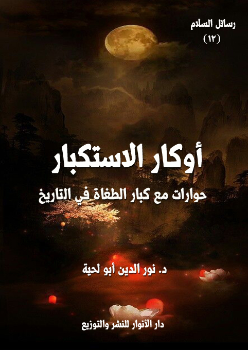

الكتاب: أوكار الاستكبار [حوارات مع كبار الطغاة في التاريخ]
المؤلف: أ.د. نور الدين أبو لحية
الناشر: دار الأنوار للنشر والتوزيع
الطبعة: الأولى، 1438 هـ
عدد الصفحات: 172
ISBN: 978-620-2-34647-4
لمطالعة الكتاب من تطبيق مؤلفاتي المجاني وهو أحسن وأيسر: هنا

التعريف بالكتاب
تهدف هذه الرواية بأحداثها وحواراتها مع بعض كبار قادة الاستكبار والاستبداد في التاريخ إلى هدفين كبيرين، كلاهما له علاقة بالسلام وبتحقيقه في الواقع النفسي والاجتماعي والسياسي:
أولهما: بيان خطورة الاستكبار، ومنافاته لعوالم السلام الجميلة، فالمستكبر عدو نفسه قبل أن يكون عدوا للمجتمع أو للرعية التي ولي عليها صغيرة كانت أو كبيرة.. ولذلك حاولنا في الرواية أن نصور بعض تلك الآلام التي يشعر بها المستكبر عندما يخلع كفن جسده، ويلبس الثوب الذي يمثل حقيقته.. وقد استوحينا صور تلك الآلام من خلال ما ورد في الروايات من تجسد الأعمال وتحولها إلى حقيقتها الملكوتية الممتلئة بالألم.
ثانيهما: بيان خطورة السكوت على الاستكبار وعدم مواجهته، واعتبرنا ذلك ـ كما دلت عليه النصوص المقدسة ـ صناعة للاستكبار وتقوية له، كما قال تعالى: ﴿ فَاسْتَخَفَّ قَوْمَهُ فَأَطَاعُوهُ إِنَّهُمْ كَانُوا قَوْماً فَاسِقِينَ﴾ (الزخرف:54).. ولذلك حاولنا أن نجسد بعض مشاهد الأولياء والصالحين الذين وقفوا في وجوه طغاة زمانهم، وبينا بعض أنواع النعيم والسلام الذي يعيشونه في مقابل الآلام التي يعيشها المستكبرون.
وقد اخترنا لتحقيق هذين الهدفين سبعة من كبار أعلام الاستكبار في التاريخ، كل منهم يمثل جانبا أو جوانب منه.
أوكار الاستكبار (4)
تهدف هذه الرواية بأحداثها وحواراتها مع بعض كبار قادة الاستكبار والاستبداد في التاريخ إلى هدفين كبيرين، كلاهما له علاقة بالسلام وبتحقيقه في الواقع النفسي والاجتماعي والسياسي:
أولهما: بيان خطورة الاستكبار، ومنافاته لعوالم السلام الجميلة، فالمستكبر عدو نفسه قبل أن يكون عدوا للمجتمع أو للرعية التي ولي عليها صغيرة كانت أو كبيرة.. ولذلك حاولنا في الرواية أن نصور بعض تلك الآلام التي يشعر بها المستكبر عندما يخلع كفن جسده، ويلبس الثوب الذي يمثل حقيقته.. وقد استوحينا صور تلك الآلام من خلال ما ورد في الروايات من تجسد الأعمال وتحولها إلى حقيقتها الملكوتية الممتلئة بالألم.
ثانيهما: بيان خطورة السكوت على الاستكبار وعدم مواجهته، واعتبرنا ذلك ـ كما دلت عليه النصوص المقدسة ـ صناعة للاستكبار وتقوية له، كما قال تعالى: {فَاسْتَخَفَّ قَوْمَهُ فَأَطَاعُوهُ إِنَّهُمْ كَانُوا قَوْماً فَاسِقِينَ} (الزخرف:54).. ولذلك حاولنا أن نجسد بعض مشاهد الأولياء والصالحين الذين وقفوا في وجوه طغاة زمانهم، وبينا بعض أنواع النعيم والسلام الذي يعيشونه في مقابل الآلام التي يعيشها المستكبرون.
وقد اخترنا لتحقيق هذين الهدفين سبعة من كبار أعلام الاستكبار في التاريخ، كل منهم يمثل جانبا أو جوانب منه، وهم:
فرعون: ويمثل رمزا كبيرا من رموز الطغيان والاستبداد التي ذكرها القرآن الكريم، وعلمنا من خلالها أسرار الاستبداد، وكيفية الوقوف في وجهه (1)، ولم يذكره القرآن الكريم هكذا عبثا، ولا لمجرد التسلية، ولا لذكر بعض التفاصيل التاريخية التي تأنس لها النفس، وإنما ذكره ليبين الموقف منه ومن أمثاله من الطغاة، وليتحول كل مسلم إلى موسى وهارون ومؤمن
__________
(1) وردت قصة فرعون في سبع وعشرين سورة من القرآن الكريم، فضلاً عن الإشارة إليها في ثنايا بعض السور الأخرى.
أوكار الاستكبار (5)
آل فرعون وآسية بن مزاحم.
يزيد: ويمثل كل أولئك المستبدين الظلمة الذين تلقبوا زورا وبهتانا بلقب [الخليفة]، بينما هم في الحقيقة ليسوا سوى خلفاء للشيطان، وسدنة للدجال.. وقد اخترنا من بينهم [يزيد] لكونه من أوائل من سن سنة الاستبداد في هذه الأمة، ولأدواره القذرة في حرب دعاة القسط والعدالة.
الحجاج: ويمثل كل السدنة والوزراء والبطانة الذين كانوا أداة في أيدي المستبدين لفرض كبريائهم على الرعية.
أتاتورك: ويمثل كل أولئك الذين حاربوا شريعة الله، ليحيوا بدلها شريعة الطاغوت، ولينافسوا الله حاكميته على خلقه.
لينين: ويمثل كل أولئك المستبدين من أصحاب الأنظمة الشمولية الدكتاتورية الذين ملأوا الأرض جورا وظلما.
بوش: ويمثل كل أولئك المستبدين الذين يوهمون المستضعفين أنهم من دعاة الديمقراطية والحرية والأخوة الإنسانية، بينما هم في الواقع لا يختلفون عن أصحاب الأنظمة الشمولية الدكتاتورية.
الدجال: ويمثل خلاصة الاستبداد والاستكبار والفتنة.. فهو الذي تتملذ على جميع المستبدين، واستفاد من جميع خطط الشيطان لإغواء الإنسان.. وقد حاولنا أن نصور من خلال النصوص حركة الفتنة التي يقوم بها في الأرض، وكيفية مواجهة الصالحين له.
هؤلاء هم أبطال الرواية.. وهم ـ كما رأينا ـ يمثلون شخصيات مختلفة اتفقت البشرية جميعا ـ إلا من شذ منهم ـ على انحرافاتهم وطغيانهم وكبرهم.. وقد ذكرناهم ليمثلوا غيرهم، أو لنرى من خلالهم صورة الطاغوت، لنسقط عليها بعد ذلك كل من انطبقت صورته مع صورتهم، حتى لا نقع في التيه والضلال، فنمجد الطغيان في الوقت الذي ندعي فيه الإيمان.
أوكار الاستكبار (6)
وننبه القارئ إلى أننا انتهجنا منهج الرمز في كل ما نطرحه من صور ومشاهد.. والعاقل هو الذي يعبر من الرمز إلى ما بعده.. والغافل هو الذي يأسره الرمز عن العبور، فيقرأ الحروف، ويغفل عن المعاني.
أوكار الاستكبار (7)
لست أدري هل كانت هذه الأحداث التي أريد أن أحكيها لكم اليوم أحداثا حقيقية حصلت لي وأنا مستيقظ، وفي كامل قواي العقلية، أم أنها حدثت لي وأنا في المنام.. فقد اختلطت علي حينها حياة اليقظة بحياة الأحلام..
لكن الذي أدريه أنني وبعد عودتي إلى هذا العالم الذي يعيش فيه جسدي، ويعيش فيه معي الناس، تحققت من كل شيء عشته حينها، فوجدته كما رأيته وسمعته.. فلذلك رحت أبثه لكم مثلما عاينته بالضبط.
وبداية حكايتي تنطلق مني، ومن قريتي الصغيرة المتواضعة.. فقد رأيت يومها ذلك الضخم الغليظ الذي استبد بشؤون قريتنا، فراح يحيي فيها سنة فرعون وهامان ونيرون، وراح المستضعفون من حوله يتلاشون ويتساقطون كما يتساقط الذباب عندما تنزل عليه أمطار المبيدات.
كان ضخما.. وكان لا يرى نفسه إلا ضخما.. ولا يرضى من أهل قريتي البسطاء أن يروه إلا كما يرى نفسه.. والويل لمن لم يره كما يرى نفسه.
وكان منظره هذا يملأ نفسي بالصراع.. ويملأ المستضعفين من أمثالي بأنواع من الألم لا يمكن أن نعيش أي سلام معها.
لقد كنا نشعر بسيره إذا سار.. فالأرض تندك من حوله، وبيوتنا المصنوعة من طين الأرض التي خلقنا منها تتشقق كما تنشق أجسادنا.. فهي ترهبه كما نرهبه، وتعرف منه ما نعرف منه.
وكان صوته المجلجل يخنق أنفاسنا، ويملأ أزيزه عروقنا ضيقا، فينحصر الدم في خلايانا، ويشع من وجوهنا بريق الصفرة القاتلة.
أوكار الاستكبار (8)
ولم يكن وحده في استبداده وكبريائه وطغيانه.. بل كان يحيط به بطانة من الناس لا يقلون عنه استبدادا وطغيانا، وإن كانوا يسيرون أمامه وخلفه وبين يديه كالعبيد والأقزام، يصفقون له، ويقبلون يديه، وينحنون برؤوسهم أمامه، بل يكادون يسجدون له..
في تلك النوبة من نوبات الصراع التي تنتابني عندما أراه أو أسمع صوته، جاءني معلم السلام بهدوئه وصفائه وروحانيته، وطلب مني كعادته أن أقوم وأصحبه..
قلت: إلى أين.. فأنت ترى هذا الضخم قد سد علينا نور الشمس، وغل أيدينا وأرجلنا عن كل حركة؟
قال: ألا تريد أن ترى حقيقته؟
قلت: أتريدني أن أزداد ألما وصراعا وحزنا؟
قال: لن تنتصر على الصراع إلا بالمعرفة والمواجهة.. فعندما تراه على حقيقته ينكشف عنك كل ألم، ويعود لعينيك إبصارهما لترى الأشياء كما هي.. لا كما تتوهم.
قلت: وما فائده هذه المعرفة؟
قال: أن تتخلص من الأغلال التي تحول بينك وبين الثورة والمواجهة.
قلت: الثورة على من؟.. ومواجهة من؟
قال: الثورة على ضعفك وخنوعك وذلتك.. فما كان للمستكبرين والطغاة والمستبدين أن يمارسوا كبرياءهم لولا ضعفك وخنوعك وذلتك.. ألم تسمع قوله تعالى: {فَاسْتَخَفَّ قَوْمَهُ فَأَطَاعُوهُ إِنَّهُمْ كَانُوا قَوْمًا فَاسِقِينَ} [الزخرف: 54]؟
قلت: بلى، ولكن ذلك فرعون.. وأولئك قومه.
قال: وهل ترى الله تعالى ذكر فرعون ليسليك، أم ذكره ليربيك..
قلت: بل ذكره ليربيني، وقد قال تعالى بعد الآية السابقة: {فَلَمَّا آسَفُونَا انْتَقَمْنَا مِنْهُمْ فَأَغْرَقْنَاهُمْ أَجْمَعِينَ (55) فَجَعَلْنَاهُمْ سَلَفًا وَمَثَلًا لِلْآخِرِينَ} [الزخرف: 55، 56]
أوكار الاستكبار (9)
قال: فقد أجابك ربك..
قلت: ما تعني؟
قال: لقد اعتبر الله تعالى المستكبرين والمستضعفين الخانعين شيئا واحدا.. فقد شملهم العذاب جميعا.. فعندما وقعت مياه البحر على جيش فرعون لم تفرق بينه وبين جنوده المستضعفين.
قلت: أجل.. لقد أخبر الله تعالى عن ذلك كثيرا في القرآن الكريم.. ومن تلك المشاهد التي ذكرها عن الصراع بين المستكبرين والمستضعفين في الآخرة ما ورد في قوله تعالى: {وَإِذْ يَتَحَاجُّونَ فِي النَّارِ فَيَقُولُ الضُّعَفَاءُ لِلَّذِينَ اسْتَكْبَرُوا إِنَّا كُنَّا لَكُمْ تَبَعًا فَهَلْ أَنْتُمْ مُغْنُونَ عَنَّا نَصِيبًا مِنَ النَّارِ (47) قَالَ الَّذِينَ اسْتَكْبَرُوا إِنَّا كُلٌّ فِيهَا إِنَّ اللَّهَ قَدْ حَكَمَ بَيْنَ الْعِبَادِ} [غافر: 47، 48]
قال: فها أنت ترى كيف نال المستضعفون هم الضعف في الدنيا، وهم العذاب في الآخرة.
قلت: أجل.. ولكن لم كان الأمر كذلك.. لم لم يرحم هؤلاء المستضعفون؟
قال: لأنهم كانوا سبب كبرياء المستكبرين.. فولالهم ما ظهر المستكبرون.
-\--\-
سرت مع صاحبي في متاهات عجيبة إلى أن وصلنا إلى أرض قاحلة جدباء، لم أر في حياتي أجدب منها، وكأن أرضها لم تذق طعم الماء مذ وجدت الأرض، أو كأننا في كوكوب آخر غير الأرض.
سألت صاحبي عن سر هذه الأرض، وما حل بها من جدب، فقال: هذه أرض الاستكبار.. إنها مجدبة كنفوسهم التي امتلأت كبرا.
قلت: لو لم يكن من عقابهم إلا هذه الأرض وموتها لكفاهم ذلك.
قال: أنت لم تر شيئا بعد.. إن أكبر أمنية لهم هي أن يستوطنوا مثل هذه الأرض، ويعيشوا
أوكار الاستكبار (10)
فيها.
قلت: ألا زلنا نرى أكثر من هذا القحط الذي يذكرنا بالموت؟
قال: لا زلت ترى الكثير مما لا يحتمله جسدك الضعيف، فلذلك سترتدي هذه الثياب الخاصة لتنزل إلى أوكار الاستكبار.
لبست ما أعطاني من الثياب، ثم نزلت معه إلى مهاو عميقة، خرجت بنا إلى كهوف مظلمة، ثم مغارات تمتلئ حيات وعقارب..
صحت: أفي جهنم نحن؟.. ما هذه الحيات والعقارب؟
قال: هذه هي الحيات والعقارب التي كان المستكبرون منشغلين بتسمينها في حياتهم مع المستضعفين.. لقد لاقوها أسمن ما تكون، وأقوى ما تكون.
قلت: فلم تعذبونهم بها؟.. لا أزال أسمع أن أهل السلام أهل رحمة.
قال: نحن لا نعذبهم.. ولكنهم يتعذبون بما زرعوا.. لقد نزلوا إلى الأرض، وكلفوا أن يملأوها زيتونا وبرتقالا، فراحوا يملأونها قيودا وأغلالا.. وكلفوا أن يعلموا الطيور أجمل التسابيح، فراحوا يبحثون عن الأفاعي والحيات، ليملأوها بأخطر السموم.. فلذلك لم يجدوا في هذه الأوكار إلا ما زرعوا في تلك الأرض.
قلت: في أي أرض نحن.. فإن القيامة لم تقم؟
قال: نحن في أرض التكليف، وهؤلاء الذين ستراهم جعلهم الله عبرة للمكلفين، وما كان الله الرحمن الرحيم ليؤخر عقوبة من استذلوا عباده، وهدموا بنيانهم، وخرقوا جمال الجنة التي جعلها لهم.
قلت: المستكبرون كثير.. فمن سنرى فيها؟
قال: سبعة..
قلت: أهم سبعة أشخاص؟
أوكار الاستكبار (11)
قال: هم سبعة أشخاص من حيث ذواتهم.. ولكنهم سبعون ألفا من حيث قوالبهم..
قلت: ماذا تقصد؟.. أهم سبعة، أم سبعون ألفا؟
قال: كل فرد منهم يمثل أمة من أمم المستكبرين، وفكرا من أفكار الاستكبار.
قلت: فما جدوى الحديث معهم.. ألتسليتهم؟
قال: لا.. بل لنتعرف على أسباب الاستكبار وأساليبه.
قلت: لم؟
قال: كيف يقاوم الأطباء عندكم الأمراض؟
قلت: بعد التعرف عليها.. والبحث عن مناهجها في نخر الجسد والتلاعب به.
قال: فكذلك أهل حصون المستضعفين.. لا يتوجهون لعدوهم من المستكبرين إلا بعد التعرف على أسبابه وأساليبه.. فمن الخطأ والخطر أن تقاوم ما لا تعرف.
-\--\-
دخلنا المغارة التي امتلأت آلاما، كانت ضيقة شديدة الضيق، ولكنا ـ لسر الحلة التي نرتديها ـ مررنا فيها كما يمر النسيم العذب، أو كما تمر الأطياف التي لا تحول بينها الحوائل.
كان أول ما بادرنا صوت يمتلئ ألما..
أوكار الاستكبار (12)
شد سمعي صوت قبيح يفوح بكل ألوان الألم، فرفعت بصري لأرى من يخاطبني، فرأيت منظرا لا يمكنني ـ مهما حاولت ـ وصفه.
قلت: من أنت؟.. فإن لك من القبح ما يصرف الأبصار عنك.
قال: هذا جزاء موافق لجرائمي.. فقد كنت ظالما مستبدا، ولم أكتف بذلك، بل رحت أزاحم الله ألوهيته.
قلت: من أنت أولا؟..
قال: أنا فرعون.. عدو السلام الأول.. أنا المستبد الذي حارب الله، واستهزأ به، وأراد أن يطلع عليه.. أنا الذي صحت بملء في: {أَنَا رَبُّكُمُ الْأَعْلَى} (النازعات:24)
وليتني اكتفيت بذلك، بل رحت أسوم عباد الله الخسف، وأذيقهم الهوان.. لقد حاربت رسل الله الممثلين في موسى وأخيه بكل صنوف المحاربة.
ولم أكتف بذلك، بل رحت أحارب أقرب الناس إلي، زوجتي التي أرسلها الله وزيرا صالحا يعينني، لكنني أبيت إلا أن أسيمها الخسف الذي لا أزال أتجرع آلامه.
قلت: وليتك اكتفيت بذلك.. بل رحت تحارب علماء قومك الذين عرفوا الحق فاهتدوا به.
قال: أجل.. أذكر ذلك، وأتألم له، لقد قلت حينها بكبريائي الذي لم يكن يعرف الحدود: {آمَنْتُمْ لَهُ قَبْلَ أَنْ آذَنَ لَكُمْ إِنَّهُ لَكَبِيرُكُمُ الَّذِي عَلَّمَكُمُ السِّحْرَ فَلَأُقَطِّعَنَّ أَيْدِيَكُمْ وَأَرْجُلَكُمْ مِنْ خِلافٍ وَلَأُصَلِّبَنَّكُمْ فِي جُذُوعِ النَّخْلِ وَلَتَعْلَمُنَّ أَيُّنَا أَشَدُّ عَذَاباً وَأَبْقَى} (طه: 71)
لقد كنت أتصور أنه لا ينبغي لأحد أن يفكر أي تفكير قبل أن آذن له، ولم أكن آذن للتفكير أن يخرج عن إطار التفكير في مصالحي التي لا تنتهي.
أوكار الاستكبار (13)
قلت: وأنت قد حاربت اللاجئين إلى أرضك، والأقلية المستضعفة في بلدك.
قال: أجل.. ذلك صحيح، وقد سجله ربي في القرآن الكريم، لقد قال عند ذكره لبعض جرائمي، وهو يمن على المستضعفين الذين أخطأوا في التعامل مع فضل الله: {وَإِذْ نَجَّيْنَاكُمْ مِنْ آلِ فِرْعَوْنَ يَسُومُونَكُمْ سُوءَ الْعَذَابِ يُذَبِّحُونَ أَبْنَاءَكُمْ وَيَسْتَحْيُونَ نِسَاءَكُمْ وَفِي ذَلِكُمْ بَلاءٌ مِنْ رَبِّكُمْ عَظِيمٌ} (البقرة:49)
قلت: وأنت قد حاربت رعيتك بعد ذلك كله، فاستعبدتهم، وحلت بينهم وبين عبادة الله.
قال: أجل.. لا أزال أذكر الخطبة التي قلت فيها: {يَا قَوْمِ أَلَيْسَ لِي مُلْكُ مِصْرَ وَهَذِهِ الْأَنْهَارُ تَجْرِي مِنْ تَحْتِي أَفَلا تُبْصِرُونَ أَمْ أَنَا خَيْرٌ مِنْ هَذَا الَّذِي هُوَ مَهِينٌ وَلا يَكَادُ يُبِينُ فَلَوْلا أُلْقِيَ عَلَيْهِ أَسْوِرَةٌ مِنْ ذَهَبٍ أَوْ جَاءَ مَعَهُ الْمَلائِكَةُ مُقْتَرِنِينَ} (الزخرف:51 ـ 53)
قلت: لا أزال متعجبا من طاعة قومك لك.. أكانوا يملكون عقول عصافير.. ألم يكن ضعفك واضحا لديهم؟
قال: دعني منهم.. فلولاهم ما ادعيت ما ادعيت.. إن ضعف الرعية وذلتها وهوانها هي سبب ما ينزل بها المستبد من ألوان الهوان.. إنهم شركاء في كل الجرائم التي وقعت فيها.. ألم تسمع قوله تعالى: {فَاسْتَخَفَّ قَوْمَهُ فَأَطَاعُوهُ إِنَّهُمْ كَانُوا قَوْماً فَاسِقِينَ} (الزخرف:54)
سمعت أصواتا كثيرة قبيحة ـ كقبح صوت فرعون ـ ترتفع، وكأنها تحتج.. صحت: ما هذا الصياح الذي يصخ الآذان؟
قال الصوت: ألا ترى ما يقول هذا المستبد الذي لم يكتف بما أذاقنا من ألوان الهوان في الدنيا، حتى راح يحملنا أوزاره..
قال فرعون: ولكنكم كنتم تزينون لي ما أنا فيه.. لقد كان شعراؤكم هم الذين أوحوا إلى نفسي فكرة ادعاء الألوهية.. وقد نشرت في أغانيكم التي ترسلونها في مدحي من النشوة ما
أوكار الاستكبار (14)
جعلني أصيح في وجه مستشاري: {يَا أَيُّهَا الْمَلَأُ مَا عَلِمْتُ لَكُمْ مِنْ إِلَهٍ غَيْرِي فَأَوْقِدْ لِي يَا هَامَانُ عَلَى الطِّينِ فَاجْعَلْ لِي صَرْحاً لَعَلِّي أَطَّلِعُ إِلَى إِلَهِ مُوسَى وَإِنِّي لَأَظُنُّهُ مِنَ الْكَاذِبِينَ} (القصص:38)
قلت: من هؤلاء الذين يخاصمونك وتخاصمهم؟
قال: ألا تقرأ كتاب ربك؟
قلت: بلى.. أقرؤه، ولكني لم أسألك عنه.
قال: فهؤلاء هم الذين ورد ذكرهم في قوله تعالى: {وَلَوْ تَرَى إِذِ الظَّالِمُونَ مَوْقُوفُونَ عِنْدَ رَبِّهِمْ يَرْجِعُ بَعْضُهُمْ إِلَى بَعْضٍ الْقَوْلَ يَقُولُ الَّذِينَ اسْتُضْعِفُوا لِلَّذِينَ اسْتَكْبَرُوا لَوْلا أَنْتُمْ لَكُنَّا مُؤْمِنِينَ قَالَ الَّذِينَ اسْتَكْبَرُوا لِلَّذِينَ اسْتُضْعِفُوا أَنَحْنُ صَدَدْنَاكُمْ عَنِ الْهُدَى بَعْدَ إِذْ جَاءَكُمْ بَلْ كُنْتُمْ مُجْرِمِينَ وَقَالَ الَّذِينَ اسْتُضْعِفُوا لِلَّذِينَ اسْتَكْبَرُوا بَلْ مَكْرُ اللَّيْلِ وَالنَّهَارِ إِذْ تَأْمُرُونَنَا أَنْ نَكْفُرَ بِاللَّهِ وَنَجْعَلَ لَهُ أَنْدَاداً وَأَسَرُّوا النَّدَامَةَ لَمَّا رَأَوُا الْعَذَابَ وَجَعَلْنَا الْأَغْلالَ فِي أَعْنَاقِ الَّذِينَ كَفَرُوا هَلْ يُجْزَوْنَ إِلَّا مَا كَانُوا يَعْمَلُونَ} (سبأ:31 ـ 33)
قلت: بلى.. لقد ورد مثل هذا في مواضع من القرآن الكريم.
قال: فأخبر قومك من المستضعفين أن ضعفهم لن ينفعهم، ولن يكون لهم حجة عند الله تعالى، فموازين الله من العدالة بحيث لن يضيع فيه إجرام مجرم، ولا عدل عادل.
قلت: أراك تتقن الوعظ والنصيحة.
قال: وما لي لا أكون كذلك، وقد عاينت الحقائق التي كنت محجوبا عنها بكبريائي وغطرستي.
قلت: لقد ذكرك الله في القرآن الكريم، وملأ قلوب المستضعفين لك كراهية.
قال: أنتم تقرأون كلام ربكم، ولا تسمعونه، إن القرآن الكريم لم يقصد شخصي، فأنا أقل شأنا من أن يتكلم الله عني في وحيه المنزل لهداية عباده.. ولكن الله تعالى ذكرني ليبين سنة
أوكار الاستكبار (15)
الاستبداد وكيفية مواجهتها..
قلت: أهناك غيرك ممن هم مثلك؟
قال: بل هناك الكثير ممن هم أعظم إجراما مني.. وأنا لست سوى مجرد قزم صغير بينهم.
قلت: متى حصل هذا؟
قال: في كل فترات التاريخ.
قلت: وفي عصرنا؟
قال: كما في كل العصور.. إن فرعون الذي أمامك لا يمثل شخصا قد غمرته مياه البحار ذات يوم، وانتهى أمره، وانتهت قصته، بل فرعون موجود في كل مكان، وفي كل محل تتخذ فيه القرارات السهلة أو القرارات الصعبة.
هو في مجلس الأمن يجثم على صدر كل من يصوت للحروب، ويدعو للحروب بأسمائها المختلفة.
وهو في مجالس الحكم يقمع المظاهرات التي تطالب بالحقوق البسيطة والمعقدة.
وهو في صدر المعلم والأستاذ الذي يتكبر على تلاميذه وطلبته، ويبث فيهم روح الكبرياء.
وهو في صدر ر ب الأسرة الذي يأمر وينهى، وكأنه إله من دون الله.
كلهم يقولون: {أَنَا رَبُّكُمُ الْأَعْلَى} (النازعات: 24) من حيث يشعرون، ومن حيث لا يشعرون.
قلت: ألهذا يقص القرآن الكريم علينا قصتك، ويكررها كل حين، بل يجمع بين رسالتي محمد صلى الله عليه وآله وسلم وموسى عليه السلام، ويخبر أن محمدا صلى الله عليه وآله وسلم مرسل إلينا كما أرسل موسى إلى فرعون، كما قال تعالى: {إِنَّا أَرْسَلْنَا إِلَيْكُمْ رَسُولاً شَاهِداً عَلَيْكُمْ كَمَا أَرْسَلْنَا إِلَى فِرْعَوْنَ رَسُولاً}
أوكار الاستكبار (16)
(المزمل:15)
قال: أجل.. والحرب التي ينشئها فرعون المختبئ في كل هذه النفوس تبدأ من الحروب الكبرى التي تقتل الآلاف والملايين، وتنتهي بالحروب النفسية وأشكال الصراع التي تدمر الحياة، أو لا تبقي من الحياة غير الأطلال.
قلت: فما النهاية التي ينتهي إليها كل هؤلاء الفراعنة؟
قال: ما تراه الآن.. هذه الأغلال والقيود.. وهذه الحيات والعقارب.. وهذا العذاب النفسي المرير الذي نعانيه كلما تذكرنا الفرص العظيمة التي وهبناها، والغفلة العظيمة التي طوقتنا..
قلت: أخبرني بصدق.. ألم تبهرك كل تلك الحجج التي جاء بها موسى عليه السلام.. والتي آمن السحرة بمجرد رؤيتهم لها؟
قال: بلى.. لقد بهرتني.. وعرفت من خلالها صدق موسى.. وأن هناك إلها حقيقيا.. وأنني لم أكن سوى إلها مزيفا..
قلت: فلم لم تسلم له كما سلم السحرة؟
قال: ولم لم يسجد إبليس لآدم؟ ألم يكن يعلم أن الآمر بالسجود هو الله؟
قلت: بلى.. ولكن كبرياءه وحسده منعاه من ذلك.
قال: وكذلك كبريائي وحسدي منعاني من ذلك.. لقد كنت أرى نفسي ضخما بحيث لا يمكن لأحد أن يتجاهل مكاني ومكانتي حتى الله نفسه.. ولذلك رحت أقول لقومي المغرمين بي: {يَاقَوْمِ أَلَيْسَ لِي مُلْكُ مِصْرَ وَهَذِهِ الْأَنْهَارُ تَجْرِي مِنْ تَحْتِي أَفَلَا تُبْصِرُونَ (51) أَمْ أَنَا خَيْرٌ مِنْ هَذَا الَّذِي هُوَ مَهِينٌ وَلَا يَكَادُ يُبِينُ (52) فَلَوْلَا أُلْقِيَ عَلَيْهِ أَسْوِرَةٌ مِنْ ذَهَبٍ أَوْ جَاءَ مَعَهُ الْمَلَائِكَةُ مُقْتَرِنِينَ (53)} [الزخرف: 51 - 54]
قلت: أجل.. لقد ذكر الله تعالى كبرياءك وكبرياء الملأ من حولك، فقال: {ثُمَّ بَعَثْنَا مِنْ
أوكار الاستكبار (17)
بَعْدِهِم مُّوسَى وَهَارُونَ إِلَى فِرْعَوْنَ وَمَلَئِهِ بِآيَاتِنَا فَاسْتَكْبَرُوا وَكَانُوا قَوْماً مُّجْرِمِينَ. فَلَمَّا جَاءَهُمُ الحَقُّ مِنْ عِندِنَا قَالُوا إِنَّ هَذَا لَسِحْرٌ مُّبِينٌ. قَالَ مُوسَى أَتَقُولُونَ لِلْحَقِّ لَمَّا جَاءَكُمْ أَسِحْرٌ هَذَا وَلاَ يُفْلِحُ السَّاحِرُونَ} [يونس:75 - 77]
قال: صدق ربي.. لقد وصفت الآيات التي تلوتها حقيقتي وحقيقه ما كنت أفعله من حيل لأصرف قومي عن اتباع نبي الله، والخضوع لآيات الله.. لقد كنت أصورها لهم كما صورها كل المشاغبين على الرسل بأنها من السحر.
قلت: أجل.. لقد أخبر الله تعالى أن سنة الملأ من المستبدين والمستكبرين رمي الأنبياء بالسحر.. فقد قال تعالى يصف موقف الملأ من قريش من الآيات التي جاءهم بها رسول الله صلى الله عليه وآله وسلم: {أَكَانَ لِلنَّاسِ عَجَبًا أَنْ أَوْحَيْنَا إِلَى رَجُلٍ مِنْهُمْ أَنْ أَنْذِرِ النَّاسَ وَبَشِّرِ الَّذِينَ آمَنُوا أَنَّ لَهُمْ قَدَمَ صِدْقٍ عِنْدَ رَبِّهِمْ قَالَ الْكَافِرُونَ إِنَّ هَذَا لَسَاحِرٌ مُبِينٌ} [يونس: 2]
وقال معمما هذه السنة على جميع أنواع الملأ: {كَذَلِكَ مَا أَتَى الَّذِينَ مِنْ قَبْلِهِمْ مِنْ رَسُولٍ إِلَّا قَالُوا سَاحِرٌ أَوْ مَجْنُونٌ} [الذاريات: 52]
قال: ولكن الله مع ذلك.. ومع كبريائي وتعنتي.. أعطاني الفرصة تلو الفرصة، لعلي أعود إلى وعيي.. وكانت أعظم فرصة فوتها ولم أحسن التصرف معها موقف السحرة.. أولئك الذين كانوا مقربين لدي.. وكنت أثق فيهم.. بل كنت أجعلهم واسطة بيني وبين قومي.. وعلى يديهم كنت أنفذ الكثير من مخططاتي.
لقد آمن هؤلاء السحرة بمجرد أن رأوا الآيات.. وكان في إمكان أن أؤمن بعد إيمانهم، وبسبب إيمانهم.. لكن كبريائي واستبدادي وقفا حجابا بيني وبين ذلك.
قلت: لقد قص الله تعالى علينا ذلك، فقال: {فَأُلْقِيَ السَّحَرَةُ سُجَّدًا قَالُوا آمَنَّا بِرَبِّ هَارُونَ وَمُوسَى (70) قَالَ آمَنْتُمْ لَهُ قَبْلَ أَنْ آذَنَ لَكُمْ إِنَّهُ لَكَبِيرُكُمُ الَّذِي عَلَّمَكُمُ السِّحْرَ فَلَأُقَطِّعَنَّ أَيْدِيَكُمْ وَأَرْجُلَكُمْ مِنْ خِلَافٍ وَلَأُصَلِّبَنَّكُمْ فِي جُذُوعِ النَّخْلِ وَلَتَعْلَمُنَّ أَيُّنَا أَشَدُّ عَذَابًا وَأَبْقَى
أوكار الاستكبار (18)
(71) قَالُوا لَنْ نُؤْثِرَكَ عَلَى مَا جَاءَنَا مِنَ الْبَيِّنَاتِ وَالَّذِي فَطَرَنَا فَاقْضِ مَا أَنْتَ قَاضٍ إِنَّمَا تَقْضِي هَذِهِ الْحَيَاةَ الدُّنْيَا (72) إِنَّا آمَنَّا بِرَبِّنَا لِيَغْفِرَ لَنَا خَطَايَانَا وَمَا أَكْرَهْتَنَا عَلَيْهِ مِنَ السِّحْرِ وَاللَّهُ خَيْرٌ وَأَبْقَى (73) إِنَّهُ مَنْ يَأْتِ رَبَّهُ مُجْرِمًا فَإِنَّ لَهُ جَهَنَّمَ لَا يَمُوتُ فِيهَا وَلَا يَحْيَى (74) وَمَنْ يَأْتِهِ مُؤْمِنًا قَدْ عَمِلَ الصَّالِحَاتِ فَأُولَئِكَ لَهُمُ الدَّرَجَاتُ الْعُلَى (75) جَنَّاتُ عَدْنٍ تَجْرِي مِنْ تَحْتِهَا الْأَنْهَارُ خَالِدِينَ فِيهَا وَذَلِكَ جَزَاءُ مَنْ تَزَكَّى (76)} [طه: 70 - 76]
أخذ يصيح بصوت عال ممتلئ بكل ألوان الآلام، ثم راح يقول: لا أزال أتذكر جيدا تلك الطريقة الرهيبة التي عذبتهم بها.. ومع ذلك لم يخضعوا، ولم يلينوا، بل راحوا يسخرون من عذابي لهم.. وصدقوا.. فأنا الآن أتجرع في كل لحظة ومنذ آلاف السنين ملايين أضعاف العذاب الذي أذقته لهم.
قلت: لقد ذكر الله تعالى ذلك، فقال: {فَوَقَاهُ اللَّهُ سَيِّئَاتِ مَا مَكَرُوا وَحَاقَ بِآلِ فِرْعَوْنَ سُوءُ الْعَذَابِ (45) النَّارُ يُعْرَضُونَ عَلَيْهَا غُدُوًّا وَعَشِيًّا وَيَوْمَ تَقُومُ السَّاعَةُ أَدْخِلُوا آلَ فِرْعَوْنَ أَشَدَّ الْعَذَابِ (46)} [غافر: 45 - 47]
قال: لقد ذكرتني بذلك المؤمن الذي كان من أصحابي، ومن أتباعي في ظاهر الأمر، لكن قلبه كان مع الله.. كنت أشعر بذلك.. لكن يداي لم تكن تستطيعان النيل منه.. لست أدري لم.. لقد كنت أشعر كأنه يسكن في برج عاج لا يمكن لي ولا لجنودي أن يرقوا إليه، أو ينالوا منه.
قلت: لقد ذكره الله تعالى، وذكر خطبته البليغة، فقال: {وَقَالَ رَجُلٌ مُؤْمِنٌ مِنْ آلِ فِرْعَوْنَ يَكْتُمُ إِيمَانَهُ أَتَقْتُلُونَ رَجُلًا أَنْ يَقُولَ رَبِّيَ اللَّهُ وَقَدْ جَاءَكُمْ بِالْبَيِّنَاتِ مِنْ رَبِّكُمْ وَإِنْ يَكُ كَاذِبًا فَعَلَيْهِ كَذِبُهُ وَإِنْ يَكُ صَادِقًا يُصِبْكُمْ بَعْضُ الَّذِي يَعِدُكُمْ إِنَّ اللَّهَ لَا يَهْدِي مَنْ هُوَ مُسْرِفٌ كَذَّابٌ (28) يَاقَوْمِ لَكُمُ الْمُلْكُ الْيَوْمَ ظَاهِرِينَ فِي الْأَرْضِ فَمَنْ يَنْصُرُنَا مِنْ بَأْسِ اللَّهِ إِنْ جَاءَنَا} [غافر: 28، 29]
أوكار الاستكبار (19)
قاطعني فرعون، وقال: لقد امتلأت غيظا حين قال هذا الكلام، ولذلك رحت أصيح بكل قوة فيه، وفي الملأ من حولي: {مَا أُرِيكُمْ إِلَّا مَا أَرَى وَمَا أَهْدِيكُمْ إِلَّا سَبِيلَ الرَّشَادِ} [غافر: 29]
قلت: لكن صياحك لم يرهبك، ولم ينل من عزيمته، بل راح يعقب عليك بقوله: {يَاقَوْمِ إِنِّي أَخَافُ عَلَيْكُمْ مِثْلَ يَوْمِ الْأَحْزَابِ (30) مِثْلَ دَأْبِ قَوْمِ نُوحٍ وَعَادٍ وَثَمُودَ وَالَّذِينَ مِنْ بَعْدِهِمْ وَمَا اللَّهُ يُرِيدُ ظُلْمًا لِلْعِبَادِ (31) وَيَاقَوْمِ إِنِّي أَخَافُ عَلَيْكُمْ يَوْمَ التَّنَادِ (32) يَوْمَ تُوَلُّونَ مُدْبِرِينَ مَا لَكُمْ مِنَ اللَّهِ مِنْ عَاصِمٍ وَمَنْ يُضْلِلِ اللَّهُ فَمَا لَهُ مِنْ هَادٍ (33) وَلَقَدْ جَاءَكُمْ يُوسُفُ مِنْ قَبْلُ بِالْبَيِّنَاتِ فَمَا زِلْتُمْ فِي شَكٍّ مِمَّا جَاءَكُمْ بِهِ حَتَّى إِذَا هَلَكَ قُلْتُمْ لَنْ يَبْعَثَ اللَّهُ مِنْ بَعْدِهِ رَسُولًا كَذَلِكَ يُضِلُّ اللَّهُ مَنْ هُوَ مُسْرِفٌ مُرْتَابٌ (34) الَّذِينَ يُجَادِلُونَ فِي آيَاتِ اللَّهِ بِغَيْرِ سُلْطَانٍ أَتَاهُمْ كَبُرَ مَقْتًا عِنْدَ اللَّهِ وَعِنْدَ الَّذِينَ آمَنُوا كَذَلِكَ يَطْبَعُ اللَّهُ عَلَى كُلِّ قَلْبِ مُتَكَبِّرٍ جَبَّارٍ (35)} [غافر: 30 - 35]
قال: في ذلك الحين.. وبعد أن بلغ الغضب مني كل مبلغ، وخشيت على الملأ من حولي أن يتأثروا لقوله، أو يصيبهم ما أصاب السحرة، رحت أستنجد بوزيري المخلص هامان.. وحينها تذكرت حيلتي الشيطانية التي لا يزال كل المستكبرين والملاحدة يرددونها.. لقد قلت له: {يَاهَامَانُ ابْنِ لِي صَرْحًا لَعَلِّي أَبْلُغُ الْأَسْبَابَ (36) أَسْبَابَ السَّمَاوَاتِ فَأَطَّلِعَ إِلَى إِلَهِ مُوسَى وَإِنِّي لَأَظُنُّهُ كَاذِبًا} [غافر: 36، 37]
قلت: لكن الرجل المؤمن لم يتأثر لكلماتك.. بل راح يصيح هو الآخر مخاطبا عقلك وعقول الملأ من حولك: {يَاقَوْمِ اتَّبِعُونِ أَهْدِكُمْ سَبِيلَ الرَّشَادِ (38) يَاقَوْمِ إِنَّمَا هَذِهِ الْحَيَاةُ الدُّنْيَا مَتَاعٌ وَإِنَّ الْآخِرَةَ هِيَ دَارُ الْقَرَارِ (39) مَنْ عَمِلَ سَيِّئَةً فَلَا يُجْزَى إِلَّا مِثْلَهَا وَمَنْ عَمِلَ صَالِحًا مِنْ ذَكَرٍ أَوْ أُنْثَى وَهُوَ مُؤْمِنٌ فَأُولَئِكَ يَدْخُلُونَ الْجَنَّةَ يُرْزَقُونَ فِيهَا بِغَيْرِ حِسَابٍ (40)} [غافر: 38 - 40]
أوكار الاستكبار (20)
قال: حين قال هذا رحت أستعمل كل أساليب في الترغيب والترهيب عساها تنزله من برجه العاجي.. لكنه لم يتلفت لذلك بل راح يخاطبني ويخاطب الملأ حولي بقوله: {وَيَاقَوْمِ مَا لِي أَدْعُوكُمْ إِلَى النَّجَاةِ وَتَدْعُونَنِي إِلَى النَّارِ (41) تَدْعُونَنِي لِأَكْفُرَ بِاللَّهِ وَأُشْرِكَ بِهِ مَا لَيْسَ لِي بِهِ عِلْمٌ وَأَنَا أَدْعُوكُمْ إِلَى الْعَزِيزِ الْغَفَّارِ (42) لَا جَرَمَ أَنَّمَا تَدْعُونَنِي إِلَيْهِ لَيْسَ لَهُ دَعْوَةٌ فِي الدُّنْيَا وَلَا فِي الْآخِرَةِ وَأَنَّ مَرَدَّنَا إِلَى اللَّهِ وَأَنَّ الْمُسْرِفِينَ هُمْ أَصْحَابُ النَّارِ (43) فَسَتَذْكُرُونَ مَا أَقُولُ لَكُمْ وَأُفَوِّضُ أَمْرِي إِلَى اللَّهِ إِنَّ اللَّهَ بَصِيرٌ بِالْعِبَادِ (44)} [غافر: 41 - 44]
قلت: أرى أن هذا الرجل المؤمن ومثله السحرة حدثوك عن الجنة والنار.. وعن النعيم والعذاب..
قال: أجل.. كانوا يذكرونني هذا الموقف الذي أعيش فيه.. وكانوا يصورونه لي بكل دقة.. لكني ـ لكبريائي وغروري ـ لم ألتفت لتلك المشاهد الجميلة والمؤلمة التي يصورونها لي.. لأن بصيرتي كانت لا ترى إلا ذاتي، وقلبي لم يمكن يسكن فيه غيري.. ولذلك حجبت عن الحقيقة، وأنا الآن أدفع فاتورة ذلك الحجاب.
قلت: لقد ذكر الله تعالى أنه ابتلاك وقومك بأنواع من البلاء لعلكم تبصرون، فقال: {فَأَرْسَلْنَا عَلَيْهِمُ الطُّوفَانَ وَالْجَرَادَ وَالْقُمَّلَ وَالضَّفَادِعَ وَالدَّمَ آيَاتٍ مُفَصَّلَاتٍ فَاسْتَكْبَرُوا وَكَانُوا قَوْمًا مُجْرِمِينَ} [الأعراف: 133]
قال: أجل.. فقد حصل لنا ما ذكره القرآن بدقة.. وتعذبنا بذلك عذابا أليما.. واضطررت حينها إلى أن أستنجد بموسى عن طريق بعض أتباعي المخلصين.. عساه يخلصنا مما حصل لنا.
قلت: لقد ذكر الله تعالى ذلك، فقال: {وَلَمَّا وَقَعَ عَلَيْهِمُ الرِّجْزُ قَالُوا يَامُوسَى ادْعُ لَنَا رَبَّكَ بِمَا عَهِدَ عِنْدَكَ لَئِنْ كَشَفْتَ عَنَّا الرِّجْزَ لَنُؤْمِنَنَّ لَكَ وَلَنُرْسِلَنَّ مَعَكَ بَنِي إِسْرَائِيلَ} [الأعراف: 134]
أوكار الاستكبار (21)
قال: وقد استجاب موسى المؤمن الطيب الصادق لاستنجادنا، فراح يدعو الله بكل صدق أن يخلصنا مما حصل لنا.. لكننا وبعد أن كشف عنا البلاء رحنا ننكث العهود.
قلت: لقد ذكر الله تعالى ذلك، فقال: {فَلَمَّا كَشَفْنَا عَنْهُمُ الرِّجْزَ إِلَى أَجَلٍ هُمْ بَالِغُوهُ إِذَا هُمْ يَنْكُثُونَ} [الأعراف: 135]
قال: وحينها حلت بنا سنة الله التي لا تتبدل ولا تتغير ولا تحابي أحدا من الناس.
قلت: لقد ذكر الله تعالى ذلك، فقال: {فَانْتَقَمْنَا مِنْهُمْ فَأَغْرَقْنَاهُمْ فِي الْيَمِّ بِأَنَّهُمْ كَذَّبُوا بِآيَاتِنَا وَكَانُوا عَنْهَا غَافِلِينَ} [الأعراف: 136]
قال: صدق ربي فيما قال.. فقد أقام علينا الحجة، وأرسل لنا الرسل، لكن الشياطين التي كانت مستوية على عروش قلوبنا حالت بيننا وبين التسليم للحق أو الإذعان له.. وهذه هي العاقبة التي ينالها كل مستكبر طاغية ظالم.
-\--\-
بينما كنا كذلك إذا بمرآة تتنزل من السماء.. ثم يظهر على صفحتها الجميلة الصافية مناظر ممتلئة بالجمال.. وكأنها الجنة بعينها قد تنزلت في تلك الكهوف المظلمة..
تصورت في البداية أنها نوع من النعيم يساق للمعذبين في تلك الكهوف كنوع من الراحة لهم.. لكني وجدت فرعون يصيح بكل أنواع الألم.. ويغمض عينيه حتى لا يرى تلك المرآة الجميلة.
فجأة ظهرت على سطح المرآة الصقيلة صورة امرأة في منتهى الجمال، كانت تقول بصوت جميل فصيح: {رَبِّ ابْنِ لِي عِنْدَكَ بَيْتًا فِي الْجَنَّةِ وَنَجِّنِي مِنْ فِرْعَوْنَ وَعَمَلِهِ وَنَجِّنِي مِنَ الْقَوْمِ الظَّالِمِينَ} [التحريم: 11]
التفت لفرعون، وقلت: هل هذه امرأتك؟
قال: أجل.. كانت في يوم من الأيام امرأتي.. ولكن شتان بيني وبينها اليوم.. فأنا في كل
أوكار الاستكبار (22)
يوم أعذب بالنظر إليها، وبسماع مناجاتها ودعائها.. لقد كانت آية من آيات الله التي أرسلها الله لي.. والتي لا تقل عن آية العصا واليد البيضاء.. لكني أعرضت عنها.. بل رحت أعذبها عذابا شديد.. وها أنذا، ومنذ آلاف السنين أتعذب لتعذيبي لها.. وأتعذب فوق ذلك لإعراضي عنها.
راح يعض على أصابعه، حتى يسيل الدم منها، ثم يقول: ليتني سمعت لكلماتك.. ليتني سمعت لتضرعاتك.. ليتني تخليت عن كبريائي واتبعتك.. ليت أمي لم تلدني.. {يَالَيْتَنِي اتَّخَذْتُ مَعَ الرَّسُولِ سَبِيلًا (27) يَاوَيْلَتَا لَيْتَنِي لَمْ أَتَّخِذْ فُلَانًا خَلِيلًا (28) لَقَدْ أَضَلَّنِي عَنِ الذِّكْرِ بَعْدَ إِذْ جَاءَنِي وَكَانَ الشَّيْطَانُ لِلْإِنْسَانِ خَذُولًا} [الفرقان: 27 - 29]
قلت: لقد أكرمها الله بأن ذكرها في القرآن الكريم.. بل أخبر رسول الله صلى الله عليه وآله وسلم بأنها إحدى سيدات الجنة الأربع، ففي الحديث عن ابن عباس أن رسول الله صلى الله عليه وآله وسلم خط أربعة خطوط، فقال: (تدرون ما هذا؟) فقالوا: الله ورسوله أعلم، فقال صلى الله عليه وآله وسلم: (أفضل نساء أهل الجنة خديجة بنت خويلد وفاطمة بنت محمد وآسية بنت مزاحم امرأة فرعون ومريم ابنة عمران) (1)
قال: وحق لها ذلك.. فقد ابتلاها الله بأن تعيش في قصري لترى فيه كل ألوان النعيم.. لكنها تعرض عنها جميعا لتختار جوار الله.. وتختار ما عند الله.. لقد كان لها من القوة ما قهر كل كبريائي وجبروتي.
قلت: لقد روى المفسرون (2) عن بعضهم، قال: (كانت امرأة فرعون تعذّب بالشمس، فإذا انصرف عنها أظلتها الملائكة بأجنحتها، وكانت ترى بيتها في الجنة)، ورووا عن آخر قوله: (كانت امرأة فرعون تسأل من غلب؟ فيقال: غلب موسى وهارون. فتقول: آمنت بربّ موسى وهارون؛ فأرسل إليها فرعون، فقال: انظروا أعظم صخرة تجدونها، فإن مضت على قولها فألقوها عليها، وإن رجعت عن قولها فهي امرأته؛ فلما أتوها رفعت بصرها إلى السماء، فأبصرت
__________
(1) رواه أحمد والحاكم.
(2) انظر: تفسير الطبري (23/ 500)
أوكار الاستكبار (23)
بيتها في السماء، فمضت على قولها، فانتزع الله روحها، وألقيت الصخرة على جسد ليس فيه روح)
قال: دعك من هذا.. فما حصل لها كان أعظم من أن يصوروه.. وسل نفسك عن سر ذكر الله تعالى لها في كتابكم.
قلت: لقد ذكر ذلك بعضهم، فقال: (وَضَرَبَ اللَّهُ مَثَلا لِلَّذِينَ آمَنُوا اِمْرَأَةَ فِرْعَوْنَ) وكان أعتى أهل الأرض على الله، وأبعده من الله، فو الله ما ضرّ امرأته كُفر زوجها حين أطاعت ربها، لتعلموا أن الله حكم عدل، لا يؤاخذ عبده إلا بذنبه) (1)
قال: وذكرها ليبين لكم أن مواجهة المستكبرين من أمثالي لا تحتاج إلا إلى الإيمان القوي.. فقد كانت امرأة مستضعفة.. وكانت في قصري.. وكانت ترى بعينها ما أفعل بأعدائي.. ومع ذلك واجهتني ولم تركن لظلمي.. فأي حجة لمن يدعي الاستضعاف بعدها.
قلت: صدقت.. فقد جمع لها كل ألوان الاستضعاف، ومع ذلك كان لها من القوة ما واجهت به أعتى الطغاة.
-\--\-
انصرفت امرأة فرعون ليظهر بعدها شباب ممتلئين قوة وجمالا ونورا.. فراح فرعون يغض طرفه عن النظر إليهم.. ويصيح بكل ألوان الألم..
سألته عنهم، فقال: هؤلاء هم سحرتي.. هؤلاء هم الذين كنت أتعزز بهم، وأسيطر بهم على قلوب الرعية.. لكنهم ومع كل الجرائم التي شاركوني فيها، استطاعوا أن يتخلصوا منها في طرفة عين.. لقد عرفوا أن الله غفور رحيم.. فلذلك طرقوا أبواب مغفرته ورحمته، وسقوا من بحارها العذبة ما نقلهم من زمر الأشقياء إلى مصاف الأولياء.
قلت: لقد ذكر المفسرون أنك تفننت في تعذيبهم.
__________
(1) تفسير الطبري (23/ 500)
أوكار الاستكبار (24)
قال: وهم الآن يتفنون في تعذيني.. إن كل لحظة أراهم فيها، وأرى ما هم فيه من النعيم الذي كان يمكنني أن أشاركهم فيه يجعلني أتعذب بأعظم من عذاب النار نفسها.. إن نار رؤيتي لهم تمتد لفؤادي لتحرقه، وتغمره بكل ألوان الأسى.
فجأة اختفت المرآة.. ثم جاءت كلاليب كثيرة.. وأخذت بقدمي فرعون وعنقه وكل أعضائه.. وراحت تجرها على الجمر الملتهب.. فأسرعت مبتعدا عنها..
أوكار الاستكبار (25)
ما إن سرت قليلا حتى سمعت صوتا قبيحا يصيح: ويل لي من آل بيت رسول الله.. ويل لي من صحابة رسول الله.. الويل لك يا أبي كيف زججت بي إلى هذه الأوكار.. أما في قلبك رحمة.. ألم تكن تعلم مصير المستبدين؟
قلت لصاحبي: من هذا الذي يرسل الويلات على نفسه وعلى أبيه.
قال: هذا يزيد.. وهو مثال المستبد الذي زاحم الأمر أهله، إنه كالجاهل الذي سجن الأطباء، وراح يداوي المرضى، فقتلهم.
قلت: ومن الأطباء الذين سجنهم؟
قال: آل البيت الكرام، والصحابة المنتجبون الذين تربوا على عين رسول الله صلى الله عليه وآله وسلم، وعلى يديه الشريفتين.
قلت: ومن أبوه الذي يرسل عليه الويل؟
قال: معاوية الذي زاحم الأمر أهله، ولم يكتف بذلك، بل راح يزاحمهم بولده، ويشوه جمال العدالة التي جاء بها رسول الله صلى الله عليه وآله وسلم بالكسروية والقيصرية.
قلت: فكيف سكتوا دون نصحه؟
قال: لقد قمعهم باستبداده.. ألم تسمع ما قال ابن سيرين، فقد ذكر أن عمرو بن حزم وفد على معاوية فقال له: أذكرك الله في أمة محمد صلى الله عليه وآله وسلم بمن تستخلف عليها فقال: (نصحت وقلت برأيك، وإنه لم يبق إلا ابني وأبناؤهم وابني أحق)
قلت: ويله.. أهو ميراث يقتسمونه، أم أمانة يحملونها؟
قال: الوالي المستبد يتصور أن رعيته وما تملك رعيته ملك من أملاكه.
سمعت صياحا عظيما تنهد له الجبال، وترتعش الأرض: الويل لي منك يا ابن بنت
أوكار الاستكبار (26)
رسول الله.. الويل لي منك يا حسين..
قلت: ما باله؟
قال: إنه يسترجع ذكرياته المريرة، يوم أرسل في قتل الحسين، وآل بيت رسول الله صلى الله عليه وآله وسلم.
قلت: فما فعل الحسين؟
قال: لقد كان الحسين يمثل القوة التي تقف في وجه الاستبداد.. فلذلك لم يبايع يزيدا.. ولم يرض لدين جده صلى الله عليه وآله وسلم أن ينتقص، وتنقض عراه، وهو حي.. لقد قال يعبر عن ذلك: (إني لم أخرج أشراً، ولا بطراً ولا مفسداً، ولا ظالماً، وإنما خرجت لطلب الاصلاح في أمة جدي، أريد أن آمر بالمعروف وأنهي عن المنكر فمن قبلني بقبول الحق فالله أولى بالحق، ومن رد علي هذا أصبر حتى يقضي الله بيني وبين القوم بالحق، وهو خير الحاكمين)
قلت: أعلم قصة ذلك.. فقد كان أهل الكوفة يكتبون إليه يدعونه إلى الخروج إليهم زمن معاوية، وهو يأبى فلما بويع يزيد أقام على ما هو مهموماً يجمع الإقامة مرة ويريد المسير إليهم أخرى، فأشار عليه ابن الزبير بالخروج، وكان ابن عباس يقول له: لا تفعل، وقال له ابن عمر: (لا تخرج فإن رسول الله صلى الله عليه وآله وسلم خيره الله بين الدنيا والآخرة فاختار الآخرة، وإنك بضعة منه ولا تنالها ـ يعني الدنيا ـ) واعتنقه وبكى وودعه، فكان ابن عمر يقول: غلبنا حسين بالخروج، ولعمري لقد رأى في أبيه وأخيه عبرة.
وبعث أهل العراق إلى الحسين الرسل والكتب يدعونه إليهم، فخرج من مكة إلى العراق في عشر ذي الحجة، ومعه طائفة من آل بيته رجالا ونساء وصبياناً، فكتب يزيد إلى واليه بالعراق عبيد الله بن زياد بقتله، فوجه إليه جيشاً قوامه أربعة آلاف، عليهم عمر بن سعد بن أبي وقاص، فخذله أهل الكوفة، فقتلوه، وقتل معه ستة عشر رجلا من أهل بيته، وجيء برأسه في طست حتى وضع بين يدي ابن زياد.
التفت إلى صاحبي، فإذا دموعه تذرف بشدة، قلت: ما بالك؟
أوكار الاستكبار (27)
قال: لقد ذكرتني بمواجع لن يمحوها الدهر.. لقد كنت حاضرا ذلك الموقف..
قلت: هل كنت حاضرا.. لقد سمعت أنه لما قتل الحسين مكثت الدنيا سبعة أيام والشمس على الحيطان كالملاحف المعصفرة والكواكب يضرب بعضها بعضاً، وكسفت الشمس ذلك اليوم واحمرت آفاق السماء ستة أشهر بعد قتله، ثم لا زالت الحمرة ترى فيها بعد ذلك ولم تكن ترى فيها قبله.
وذكروا أنه لم يقلب حجر ببيت المقدس يومئذ إلا وجد تحته دم عبيط، وصار الورس الذي في عسكرهم رماداً، ونحروا ناقة في عسكرهم فكانوا يرون في لحمها مثل النيران وطبخوها فصارت مثل العلقم، وتكلم رجل في الحسين بكلمة فرماه الله بكوكبين من السماء فطمس بصره.
قال: هذا كله هين بسيط.. الخطر الأعظم هو تحول الأمة من النظام الذي اختاره الله لها إلى النظام الذي سنه المستبدون..
قلت ـ وكأني لم ألتفت لكلامه ـ: بل قد ذكروا أن الجن رثت الحسين، فقد روى أبو نعيم في الدلائل عن أم سلمة قالت: سمعت الجن تبكي على حسين وتنوح عليه.
وأخرج ثعلب في أماليه عن أبي خباب الكلبي قال: أتيت كربلاء فقلت لرجل من أشراف العرب: أخبرني بما بلغني أنكم تسمعون نوح الجن فقال: ما تلقى أحداً إلا أخبرك أنه سمع ذلك، قلت: فأخبرني بما سمعت أنت قال: سمعتهم يقولون:
مسح الرسول جبينه... فله بريق في الخدود
أبواه من عليا قري... ش وجده خير الجدود
قال: ليس الشأن أن تبكي الجن، بل الشأن أن تبكوا أنتم.. وليس الشأن أن تبكوا، بل الشأن أن تختلط دماؤكم مع دماء الحسين، لتنصروا المستضعفين، وتقاوموا الاستبداد.
قلت: لم لم يسمع الحسين لتلك النصائح الرقيقة التي وجهت له؟
أوكار الاستكبار (28)
قال: إن الحسين لم يكن يمثل نفسه في ذلك الحين، ولم يكن حريصا على حياته.. لقد كان يعلم أن المستبدين لن يتركوه..
قلت: فلماذا خرج إذن ما دام يعلم ذلك؟
قال: لقد خرج ليحفظ دين جده من التحريف الذي أراد المستبدون إيقاعه بهذا الدين.
قلت: ولكنه فشل في تحقيق ما صبا إليه.
صاح صاحبي بقوة: لا.. لم يفشل.. لقد كانت الشرارة التي أشعلها الحسين في وجه الاستبداد هي التي أحرقت بعد ذلك كل قصور المستبدين، وهي التي دمرت كل قلاعهم..
قلت: بأي سلاح استطاع أن يفعل كل هذا؟
قال: بسلاح الدم الذي يهدر في سبيل الله.. لقد كان الدم الذي سال منه، ومن آل بيته أعظم محطم لأسطورة الاستبداد.. ألم تسمع رؤيا أم سلمة؟
قلت: بلى.. فقد روي عن ابن عباس قال: رأيت رسول الله صلى الله عليه وآله وسلم بنصف النهار أشعث أغبر وبيده قارورة فيها دم، فقلت: بأبي وأمي يا رسول الله ما هذا؟ قال: (هذا دم الحسين وأصحابه لم أزل ألتقطه منذ اليوم)، فأحصى ذلك اليوم، فوجدوه قتل يومئذ (1).
قال: أتدري تعبير هذه الرؤيا؟
قلت: ليس لي من علوم التأويل ما أعبر به الرؤى.
قال: لقد كان صلى الله عليه وآله وسلم يجمع دم الحسين ودم أهل بيته، ليصبح ذلك الدم دليلا للمستضعفين يستنولون به النصر، ويستمدون منه الهدي، ويقمعون به الظلم، ولا يبالون في سبيل ذلك أن تختلط دماؤهم بتراب الأرض.. لأن رسول الله صلى الله عليه وآله وسلم سيجمعها في محل واحد مع دم الحسين.
قلت: لقد ذكرتني برؤيا أخرى، أرجو أن تعبرها لي.
قال: وما رأيت؟
__________
(1) رواه البيهقي في الدلائل.
أوكار الاستكبار (29)
قلت: لا.. لم أر أنا.. بل هذه الرؤيا رواها الترمذي عن امرأة قالت: دخلت على أم سلمة، وهي تبكي، فقلت: (ما يبكيك؟)، قالت: رأيت رسول الله صلى الله عليه وآله وسلم في المنام وعلى رأسه ولحيته التراب، فقلت: ما لك يا رسول الله قال: (شهدت قتل الحسين آنفاً) (1)
قال: هذه الرؤيا رسالة وجهها رسول الله صلى الله عليه وآله وسلم للأمة.
قلت: ما يقول فيها؟
قال: إن ما حصل للحسين كان أعظم إهانة لرسول الله صلى الله عليه وآله وسلم.. ولا ينبغي للأمة أن تسكت على إهانة نبيها.
قلت: ولكن يزيد الآن في أوكار الاستكبار، فكيف تنهض الأمة لنصرة الحسين.
قال: بالنهوض في وجه الاستبداد.. فلا يمكن أن يكرم رسول الله صلى الله عليه وآله وسلم بأعظم من النهوض في وجههم.
قلت: ولكن دماء المستضعفين قد تسيل.
قال: ستختلط حينها بدماء الحسين.. وحسبها بذلك شرفا.
قلت: أنت تحرض على الثورة.
قال: أنا لا أحرض على ثورة أهل الحرب، أنا أحرض على ثورة أهل السلام.
قلت: ولكن الحسين استعمل ثورة أهل الحرب؟
قال: لا.. لقد استعمل ثورة أهل السلام.
قلت: كيف ذلك.. لقد سمعت صرير السيوف في قصة كربلاء.. ولا يمكن أن نمثل وقعة كربلاء من دون سيوف.
قال: تلك سيوف المستبدين.
قلت: والحسين.. ألم يكن يملك سيفا؟
__________
(1) رواه الترمذي.
أوكار الاستكبار (30)
قال: لقد كان يملك قبل السيف أصنافا من أسلحة أهل السلام، لم يحق له أن يحمل السيف قبل امتلاكها.
قلت: فما هي؟
قال: ستعرفها في حصون المستضعفين.
قلت: ألسنا في حصون المستضعفين؟
قال: لا.. لن تدخلها حتى تخرج من أوكار المستكبرين.
سمعت صوتا شديدا، يقول: ويل لي من أهل الحرة..
قلت: أعرف هذا.. ففي سنة ثلاث وستين بلغ يزيدا أن أهل المدينة خرجوا عليه وخلعوه، فأرسل إليهم جيشاً كثيفاً، وأمرهم بقتالهم، ثم المسير إلى مكة لقتال ابن الزبير، فجاءوا وكانت وقعة الحرة على باب طيبة.
بكى صاحبي، وقال: وما أدراك ما وقعة الحرة؟.. لقد ذكرها الحسن مرة (1)، فقال: (والله ما كاد ينجو منهم أحد.. قتل فيها خلق من الصحابة ومن غيرهم، ونهيت المدينة، وافتض فيها ألف عذراء، فإنا لله وإنا إليه راجعون).. أتدري ما سببها؟
قلت: أجل.. فقد خلع أهل المدينة يزيدا، لما بلغ به الإسراف حده الأقصى، وقد روي أن عبد الله بن حنظلة بن الغسيل قال: (والله ما خرجنا على يزيد حتى خفنا أن ترمى بالحجارة من السماء.. إنه رجل ينكح أمهات الأولاد والبنات والأخوات ويشرب الخمر ويدع الصلاة)
وقال الذهبي: ولما فعل يزيد بأهل المدينة ما فعل مع شربه الخمر وإتيانه المنكرات اشتد عليه الناس وحرج عليه غير واحد ولم يبارك الله في عمره وسار جيش الحرة إلى مكة لقتال ابن
__________
(1) بل روي أن رسول الله (خرج في سفر من أسفاره، فلما مر بحرة زهرة وقف فاسترجع، فساء ذلك من معه، وظنوا أن ذلك من أمر سفرهم، فقال عمر: (يا رسول الله ما الذي رأيت!؟) فقال رسول الله (: (أما إن ذلك ليس من سفركم هذا)، قالوا: (فما هو يا رسول الله!؟) ، قال: (يقتل بهذه الحرة خيار أمتي بعد أصحابي)، قال ابن كثير: هذا مرسل، ولا يضره إرساله.
أوكار الاستكبار (31)
الزبير، فمات أمير الجيش بالطريق، فاستخلف عليهم أميراً وأتوا مكة فحاصروا ابن الزبير وقاتلوه ورموه بالمنجنيق وذلك في صفر سنة أربع وستين واحترقت من شرارة نيرانهم أستار الكعبة سقفها.
قلت: ما بالهم لا يراعون لله حرمة، فهم لم يراعوا حرمة المدينة التي قال فيها رسول الله صلى الله عليه وآله وسلم: (من أخاف أهل المدينة أخافه الله، وعليه لعنة الله والملائكة والناس أجمعين) (1).. ولم يراعوا حرمة البيت الحرام الذي قال فيه تعالى: {وَإِذْ جَعَلْنَا الْبَيْتَ مَثَابَةً لِلنَّاسِ وَأَمْناً} (البقرة: 125) وقال فيه: {فِيهِ آيَاتٌ بَيِّنَاتٌ مَقَامُ إِبْرَاهِيمَ وَمَنْ دَخَلَهُ كَانَ آمِناً} (آل عمران: 97)، وقال فيه: {يَا أَيُّهَا الَّذِينَ آمَنُوا لا تُحِلُّوا شَعَائِرَ اللَّهِ وَلا الشَّهْرَ الْحَرَامَ وَلا الْهَدْيَ وَلا الْقَلائِدَ وَلا آمِّينَ الْبَيْتَ الْحَرَامَ يَبْتَغُونَ فَضْلاً مِنْ رَبِّهِمْ وَرِضْوَاناً و} (المائدة: 2)
قال: وهل عظموا الله حتى يعظموا مدينة رسوله، أو مدينة خليله؟
قلت: إن من قومي من يبالغ في يزيد حتى يكاد يلحقه بآل البيت الطاهرين، أوالصحابة المجتبين.
قال: أولئك ألسنة الطغاة.
قلت: إن منهم من يضع عمائم العلماء، ويلبس طيالستهم.
قال: فأخبرهم بما رواه نوفل بن أبي الفرات، قال: كنت عند عمر بن عبد العزيز فذكر رجل يزيد فقال: قال أمير المؤمنين يزيد بن معاوية، فقال: تقول أمير المؤمنين، وأمر به فضرب عشرين سوطاً.
وأخبرهم ـ قبل ذلك وبعده ـ بمقوله الحسن البصري، واعظ هذه الأمة وعالمها، فقد قال في معاوية وابنه: (أربع خصال كن في معاوية، لو لم تكن فيه إلا واحدة لكانت موبقة: إنتزاؤه على هذه الامة بالسيف حتى أخذ الامر من غير مشورة وفيهم بقايا الصحابة وذوو الفضيلة،
__________
(1) رواه مسلم.
أوكار الاستكبار (32)
واستخلافه بعده ابنه - يزيدا - سكيرا خميرا يلبس الحرير ويضرب بالطنابير، وادعاؤه زيادا، وقد قال رسول الله صلى الله عليه وآله وسلم: (الولد للفراش وللعاهر الحجر)، وقتله حجرا (1)، وأصحاب حجر، فيا ويلا له من حجر! ويا ويلا له من حجر وأصحاب حجر!) (2)
قلت: إن ما تردده هو نفس ما يذكره الشيعة الذين يطلق عليهم قومي لقب [الرافضة]، ويسبونهم بكل ألوان السباب، بل يسلبون منهم لقب الإيمان، ويرموهم بالكفر البواح.
قال: ألا زلتم تنشغلون بتصنيف الناس.. الحق أقول لك: لن تنتصروا على أعدائكم، ولن تخرجو من ضعفكم، حتى لا يكون فخركم إلا بإسلامكم.. ألم تسمع قوله صلى الله عليه وآله وسلم: (لا تقوم الساعة حتى يقاتل المسلمون اليهود، فيقتلهم المسلمون حتى يختبئ اليهودي وراء الحجر والشجر فيقول الحجر والشجر: يا مسلم! يا عبد الله! هذا يهودي خلفي فتعال فاقتله، إلا الغرقد فانه من شجر اليهود) (3).. فقد أخبر صلى الله عليه وآله وسلم أن الحجر والشجر يسمي المسلم مسلما، بل يسميه عبد الله، ولا يسميه سنيا ولا شيعيا.
قلت: ولكن السنة درجة أخرى فوق الإسلام.. إنهم الطائفة المنصورة التي يتنزل عليها النصر دون سائر الطوائف.
قال: السنة أن تعيشوا الحقائق لا أن تفخروا بها.. وأول السنة أن لا تحتكروا السنة، فالسنة حق الأمة جميعا بجميع مناهجها.. وأول السنة أن لا ترضوا تسمية غير ما سماكم به ربكم، ألم يقل الله تعالى: {وَجَاهِدُوا فِي اللَّهِ حَقَّ جِهَادِهِ هُوَ اجْتَبَاكُمْ وَمَا جَعَلَ عَلَيْكُمْ فِي الدِّينِ مِنْ حَرَجٍ مِلَّةَ أَبِيكُمْ إِبْرَاهِيمَ هُوَ سَمَّاكُمُ الْمُسْلِمِينَ مِنْ قَبْلُ وَفِي هَذَا لِيَكُونَ الرَّسُولُ شَهِيداً عَلَيْكُمْ وَتَكُونُوا شُهَدَاءَ عَلَى النَّاسِ فَأَقِيمُوا الصَّلاةَ وَآتُوا الزَّكَاةَ وَاعْتَصِمُوا بِاللَّهِ هُوَ مَوْلاكُمْ فَنِعْمَ الْمَوْلَى
__________
(1) حجر بن عدي صحابي مترجم في سير أعلام النبلاء (2/ 463) والاصابة (1/ 329)، وهو أحد الصحابة العباد.
(2) الكامل لابن الاثير:3/ 487.
(3) رواه مسلم.
أوكار الاستكبار (33)
وَنِعْمَ النَّصِيرُ} (الحج:78)
قلت: صدقت في هذا.. لقد أهلكتنا الطائفية حتى نسينا إسلامنا انشغالا بطوائفنا.
قال: ستعرف كيف قضى أهل السلام على خفافيش الطائفية.
قلت: أين.. وكيف ذلك؟
قال: ستعرف ذلك عندما ترحل إلى حصن الوحدة.
قلت: شبهة أخرى أريدك أن تجيبني عنها.
قال: ما أكثر شبهكم.. وما أولعكم بها.
قلت: إن نفرا من قومي يحذرون من الخوض في هذا حتى لا نشوه تاريخنا، بل قد يضعون الأقاصيص الباطلة ليستروا العورات الفاضحة.
قال: لا.. التاريخ محل العبر.. وتاريخكم لم يسطره حكامكم المستبدون، ولا قادتكم المتعجرفون.. بل سطره العلماء والأولياء والشهداء.. تاريخكم هو تاريخ هؤلاء وسيرهم لا تواريخ الطواغيت.. أخبرني: كيف يعرف الناس عظم التضحية التي قام بها الحسين لو سترتم تاريخ يزيد؟.. إنكم ستكافئون المجرم المستبد أعظم مكافأة.. وتحتقرون مثال التضحية أعظم احتقار.
قلت: صدقت.. لقد فاتني أن أنظر إلى الجانب المشرق الذي يمتلئ به تاريخنا.. بل إنه لولا هؤلاء الطواغيت من المستبدين ما أدركنا قيمة هؤلاء العظماء، ولا عظم التضحيات التي قدموها.. إنهم كالسواد الذي يشرق فيه البياض.. أو كالليل الذي يطل ليبين جمال نور الشمس.
قلت: شبهة أخرى أرجو أن تجيبني عنها.
قال: أعرفها.. أنت تريد أن تذكر لي أن من قومك من يقدم نصيحة ابن عمر على موقف الحسين.
أوكار الاستكبار (34)
قلت: أجل.. كيف عرفت ذلك؟
قال: وهل يسمع الناس من رؤوس الضلال الذين اتخذوهم أئمة إلا ذلك؟
قلت: فما جوابك على هذه الشبهة؟
قال: أجبني من هو سيد شباب أهل الجنة.. هل هو ابن عمر، أم الحسين؟
قلت: بل الحسين.. ففي الحديث الصحيح عن حذيفة، قال: أتيت النبي صلى الله عليه وآله وسلم، فصليت معه الظهر، والعصر، والمغرب، والعشاء، ثم تبعته، وهو يريد يدخل بعض حجره، فقام، وأنا خلفه، كأنه يكلم أحدا، قال: ثم قال: من هذا؟ قلت: حذيفة. قال: أتدري من كان معي؟ قلت: لا. قال: فإن جبريل جاء يبشرني، أن الحسن والحسين سيدا شباب أهل الجنة. قال: فقال حذيفة: فاستغفر لي ولأمي. قال: غفر الله لك، يا حذيفة، ولأمك (1).
قال: ومن هو الذي ذكر رسول الله صلى الله عليه وآله وسلم أنه منه.. هل هو ابن عمر، أم الحسين؟
قلت: بل الحسين.. ففي الحديث الصحيح قال رسول الله صلى الله عليه وآله وسلم: (حسين مني وأنا منه، أحب الله من أحب حسينا) (2)
قال: فمن الذي اعتبر رسول الله صلى الله عليه وآله وسلم حبه شرطا لحبه؟
قلت: لاشك أنه الحسين.. ففي الحديث عن علي قال: قال رسول الله صلى الله عليه وآله وسلم للحسين بن علي: (من أحب هذا فقد أحبني) (3)، وقال يعني الحسن والحسين: (اللهم! إني أحبهما فأحبهما، وأبغض من أبغضهما) (4)، وقال: (اللهم! إني أحبهما فأحبهما) (5)، وقال: (الحسن والحسين سيدا شباب أهل
__________
(1) رواه أحمد.
(2) رواه الحاكم في المستدرك.
(3) رواه الطبراني.
(4) رواه البيهقي في الشعب، والطبراني في الكبير.
(5) رواه الترمذي، وقال: حديث حسن صحيح.
أوكار الاستكبار (35)
الجنة، من أحبهما فقد أحبني، ومن أبغضهما فقد أبغضني) (1)، وقال: (من أحب الحسن والحسين أحببته، ومن أحببته أحبه الله، ومن أحبه الله أدخله جنات النعيم، ومن أبغضهما أو بغى عليهما أبغضته ومن أبغضته أبغضه الله، ومن أبغضه الله أدخله جهنم وله عذاب مقيم) (2)
قال: ومن هو المطهر من الرجس.. الذي لا يقربه الشيطان، فيوسوس له، ولا يستطيع أن يؤثر فيه.. هل هو ابن عمر، أم الحسين؟
قلت: بل الحسين.. فقد ورد في الحديث عن عمر بن أبي سلمة قال: لما نزلت على النبي صلى الله عليه وآله وسلم: {إِنَّمَا يُرِيدُ اللَّهُ لِيُذْهِبَ عَنْكُمُ الرِّجْسَ أَهْلَ الْبَيْتِ وَيُطَهِّرَكُمْ تَطْهِيراً} (الأحزاب: 33) في بيت أم سلمة دعا فاطمة وحسنا وحسينا فجللهم بكساء وعلي خلف ظهره جللهم بكساء ثم قال: (اللهم هؤلاء أهل بيتي فأذهب عنهم الرجس وطهرهم تطهيرا) (3)
قال: فمن الذي ورث رسول الله صلى الله عليه وآله وسلم وكان أشبه الناس به.. هل هو ابن عمر، أم الحسين؟
قلت: بل الحسين.. ففي الحديث عن فاطمة ابنة رسول الله صلى الله عليه وآله وسلم أنها أتت بالحسن والحسين إلى رسول الله صلى الله عليه وآله وسلم في شكواه التي توفي فيها فقالت: يا رسول الله هذان ابناك فورثهما شيئاً. فقال: (أما حسن فله هيبتي وسؤددي، وأما حسين فله جراءتي وجودي) (4)
قال: ومن الذي أمرنا رسول الله صلى الله عليه وآله وسلم أن نسير خلفه ونتبعه حتى ننجو من الضلالة؟
__________
(1) رواه ابن عساكر.
(2) رواه الطبراني في الكبير.
(3) رواه الترمذي وغيره.
(4) رواه الطبراني.
أوكار الاستكبار (36)
قلت: لاشك أن ذلك لا ينطبق إلا على الحسين، فالحسين من العترة التي قال فيها رسول الله صلى الله عليه وآله وسلم: (إني تارك فيكم خليفتين، كتاب الله حبل ممدود ما بين السماء والأرض وعترتي أهل بيتي وإنهما لن يتفرقا حتى يردا علي الحوض) (1)
قال: فهذا هو جواب ما طرحته من شبهة.
قلت: لم أفهم.. ما تقصد بإيراد أحاديث هم يوردونها؟
قال: هم يروونها.. ولكنهم يضعون بينهم وبينها آلاف الحجب.
قلت: أنت تعرف غفلتي.. وعدم طاقتي على القراء ما بين السطور.. فعلمني.
قال: أرأيت لو أن طبيبا خبيرا نال تزكية من جميع المراكز الطبية هل ترى للمرضين والعامة من الأطباء أن يتقدموه أو يجادلوه؟
قلت: لا.. فللخبرة التي دلت عليها التزكية محلها، وقد قال صلى الله عليه وآله وسلم: (أنزلوا الناس منازلهم) (2)
قال: فكيف ينزلونه منزلته التي يقرون بها، ثم يقدمون غيره عليه.. ويقتدون بغيره، ويتركونه، بل يعتبرون تقليده بدعة، والسير خلفه ضلالا.
-\--\-
بينما نحن كذلك إذ نزلت مرآة من السماء في منتهى الدقة والجمال، وقد صورت فيها الجنة بقصورها وأنهارها.. ثم ظهر في المرآة شباب لا يقلون عنها جمالا وعذوبة ورقة.. ثم سمعت بعدها أصواتا تصيح من الألم، فالتفت إليها، فإذا بيزيد وكثير ممن حشر معه، يصرخون، وكأن عذابا شديدا سلط عليهم، يرونه ولا أراه.
سألت صاحبي معلم السلام عن أولئك الشباب، وسر تألم يزيد لمرآهم، فقال لي: نحن نطلق عليهم لقب [الحسينيين]
__________
(1) رواه أحمد والنسائي وغيرهما بألفاظ مختلفة والحديث متواتر.
(2) رواه مسلم.
أوكار الاستكبار (37)
قلت: هل تقصد أولئك الذين ساندوا الحسين ووقفوا معه في تلك الأيام الصعبة.. وقد أثنى عليهم لأجل ذلك ثناء عطرا، فقال: (إني لا أعلم أصحابا أولى ولا خيراً من أصحابي، ولا أهل بيت أبرّ ولا أوصل من أهل بيتي، فجزاكم الله عنّي جميعا خيرا) (1)
بل شهد الأعداء لهم بالشجاعة والشهامة، فقد قيل لرجل شهد يوم الطف مع عمر بن سعد: ويحك أقتلتم ذرية رسول الله صلى الله عليه وآله وسلم؟ فقال: (عضضت بالجندل؛ إنك لو شهدت ما شهدنا لفعلت ما فعلنا. ثارت علينا عصابة، أيديها في مقابض سيوفها كالأسود الضاربة تحطم الفرسان يمينا وشمالاً، وتلقي أنفسها على الموت؛ لا تقبل الأمان ولا ترغب في المال ولا يحول حائل بينها وبين الورود على حياض المنية، أو الاستيلاء على الملك، فلو كففنا عنها رويداً لأتت على نفوس العسكر بحذافيرها فما كنا فاعلين لا أُم لك)
قال: بل أقصد كل من وقف معه في تلك الأيام، وما بعدها من الأيام.. فعاشوراء تتكرر في كل زمن.. وكربلاء يمكن أن تحل في أي مكان.
قلت: والحسين؟
قال: والحسين كذلك يمكنك أن تراه في شخص كل ثائر على الظلم، داعية إلى العدالة.. فإن نصرته، فقد نصرت الحسين.. وإن خذلته فقد خذلت الحسين.
رأيت شابا من خلال المرآة ينظر إلينا، وكأنه يتحدث معنا، لكني لم أطق أن أسمع صوته، ولا أن أفهم مراده.. لكن صاحبي معلم السلام راح يجيبه بلغة لم أفهمها، وبإشارات لم أعرف مقاصده منها.
سألته عن أمرهما، فقال لي: هذا أنس بن الحرث الأسدي الكاهلي، وقد رزق فضل الصحبتين صحبة رسول الله صلى الله عليه وآله وسلم.. وصحبة آل بيته الطاهرين.. وكان من الذين كرمهم الله بالشهادة مع الإمام الحسين.. وقد كان مما رواه من الحديث قوله: سمعت رسول الله صلى الله عليه وآله وسلم يقول ـ
__________
(1) اللهوف:79.
أوكار الاستكبار (38)
والحسين بن علي في حجره ـ: (إنّ ابني هذا يقتل بأرض من أرض العراق ألا فمن شهده فلينصره) (1)
وقد كان من جملة حديثي معه أن سألته عن سر نصرته للحسين، فأخبرني بهذا الحديث..
قلت: من رزق الصحبتين ينبغي أن لا يكون إلا شيخا كبيرا، فكيف أراه شابا يافعا؟
قال: أنسيت أن الشيخوخة والهرم لا ترتبط إلا بحياتكم الدنيا.. أنسيت أن الشيخوخة قد تمتد للجسد فتضعفه لكنها لن تمتد أبدا للروح إلا إذا استسلمت الروح للجسد.
قلت: صدقت في هذا.. وقد أقام علينا هذا الشيخ الجليل الحجة، حتى لا نحتج بشيخوختنا عن مواجهة الباطل، أو الوقوف مع الحق.
رأيت شابا آخر، جرى بينهما من الحديث ما جرى مع الأول، فسألته عنه، فقال لي: هذا حبيب بن مظاهر الأسدي.. وقد رزق مثل صاحبه فضل الصحبتين (2).. وقد روي أن ميثم التمّار مر على فرس له فاستقبله حبيب بن مظاهر الأسدي عند مجلس بني أسد فتحادثا حتّى اختلف عنقا فرسيهما، ثمّ قال حبيب: لكأنّي بشيخ أصلع ضخم البطن يبيع البطيخ عند دار الرزق، قد صلب في حب أهل بيت نبيّه صلى الله عليه وآله وسلم، فتبقر بطنه على الخشبة. فقال ميثم: وإنّي لأعرف رجلا أحمر له ضفيرتان، يخرج لنصرة ابن بنت نبيّه فيقتل ويجال برأسه في الكوفة. ثمّ افترقا، فقال أهل المجلس: ما رأينا أكذب من هذين. قال: فلم يفترق المجلس حتّى أقبل رشيد الهجريّ فطلبهما، فقالوا: افترقا وسمعناهما يقولان كذا وكذا. فقال رشيد: (رحم الله ميثما نسي ويزاد في عطاء الذي يجيء بالرأس مائة درهم). ثمّ أدبر، فقال القوم: هذا والله أكذبهم. قال: فما ذهبت الأيّام والليالي حتّى رأينا ميثما مصلوبا على باب عمرو بن حريث. وجيء برأس
__________
(1) أسد الغابة: 1/ 123، الإصابة: 1/ 68.
(2) جمهرة النسب: 1/ 241..
أوكار الاستكبار (39)
حبيب قد قتل مع الحسين، ورأينا كلّما قالوا (1).
قلت: أجل.. لقد قرأت عن شهامته ونبله الكثير.. ومن ذلك أن ما رواه الثقاة من المؤرخين أن أنّ حبيبا لمّا وصل إلى الحسين، ورأى قلّة أنصاره وكثرة محاربيه، قال للحسين: إنّ هاهنا حيّا من بني أسد فلو أذنت لي لسرت إليهم ودعوتهم إلى نصرتك، لعلّ الله أن يهديهم ويدفع بهم عنك. فأذن له الحسين فسار إليهم حتّى وافاهم فجلس في ناديهم ووعظهم، وقال في كلامه: يا بني أسد، قد جئتكم بخير ما أتى به رائد قومه، هذا الحسين بن علي أمير المؤمنين وابن فاطمة بنت رسول الله قد نزل بين ظهرانيكم في عصابة من المؤمنين، وقد أطافت به أعداؤه ليقتلوه، فأتيتكم لتمنعوه وتحفظوا حرمة رسول الله صلى الله عليه وآله وسلم فيه، فو الله لئن نصرتموه ليعطينّكم الله شرف الدنيا والآخرة، وقد خصصتكم بهذه المكرمة، لأنّكم قومي وبنو أبي وأقرب الناس منّي رحما. فقام عبد الله بن بشير الأسدي وقال: شكر الله سعيك يا أبا القاسم، فو الله لجئتنا بمكرمة يستأثر بها المرء الأحب فالأحب، أمّا أنا فأوّل من أجاب، وأجاب جماعة بنحو جوابه فنهدوا مع حبيب، وانسلّ منهم رجل فأخبر ابن سعد، فأرسل الأزرق في خمسمائة فارس فعارضهم ليلا ومانعهم فلم يمتنعوا فقاتلهم، فلمّا علموا أن لا طاقة لهم بهم تراجعوا في ظلام الليل وتحمّلوا عن منازلهم. وعاد حبيب إلى الحسين فأخبره بما كان. فقال: (وَما تَشاؤُنَ إِلاَّ أَنْ يَشاءَ اللهُ) ولا حول ولا قوّة إلاّ بالله (2).
رأيت شابا ثالثا، جرى حديث بينه وبين صاحبي مثلما جرى مع سابقيه، فسألته عنه، فقال لي: هذا الحر بن يزيد الرياحي (3)..
__________
(1) منتهى المقال في أحوال الرجال 2/ 328.
(2) تسلية المجالس: 2/ 260 ـ 261.
(3) أحد زعماء أهل الكوفة وساداتها، وكان شريفاً في قومه جاهليةً وإسلاماً، وقد أرسله عبيد الله بن زياد ليساير الإمام الحسين، ويراقب حركته، وقد ندم في اللحظات الأخيرة في يوم عاشوراء؛ فالتحق بركب الإمام الحسين، واستشهد معه بكربلاء سنة 61 هـ.
أوكار الاستكبار (40)
قاطعته بقولي: ولكن كيف نال هذه المرتبة الرفيعة.. وقد كان في بداية أمره مع ابن زياد.
قال: ليس الشأن في بداية أمره.. الشأن في نهايته.. أنسيت السحرة، وكيف انقلبوا في طرفة عن من عالم الأشقياء إلى عالم السعداء.
قلت: أجل.. وقد ختم لهم بالشهادة.
قال: وهكذا كان الرياحي، فقد عرف كيف يتخذ القرار المناسب في الوقت المناسب.
-\--\-
بعد أن تشرفت بالتعرف على ثلة طيبة من أصحاب الإمام الحسين ممن استشهد معه في كربلاء.. قدمت ثلة من النساء في قمة الجمال والوقار.. فسألته عنهن، فقال: هؤلاء الزينبيات اللاتي مثلن صورة من صور مواجهة الاستكبار.
قلت: ما تعني؟
قال: لقد شاء الله أن يكمل النساء دور الرجال.. فلذلك لم تكن لثورة الإمام الحسين لتفعل مفعولها، وتؤدي دورها في الحياة لولا هؤلاء الزينبيات.
قلت: أعرف السيدة زينب.. وأعرف مكانتها العظيمة في قلوب جميع المسلمين، وقد ترجم لها المؤرخ الكبير ابن الاثير بقوله: (زينب بنت علي بن أبي يطالب القريشية الهاشمية، وأمها فاطمة بنت رسول الله صلى الله عليه وآله وسلم أدركت النبي صلى الله عليه وآله وسلم وولدت في حياته.. وكانت امرأة عاقلة لبيبة، جزلة، زوجها أبوها علي من عبد الله بن أخيه جعفر، فولدت له علياً وعوناً الأكبر وعباسا ومحمداً وأم كلثوم، وكانت مع أخيها الحسين لما قتل وحملت الى دمشق وحضرت عند يزيد بن معاوية، وكلامها ليزيد حين طلب الشامي أختها فاطمة بنت علي من يزيد مشهور مذكور في التواريخ، وهو يدل على عقل وقوة جنان) (1)
قال: ما ذكره هذا المؤرخ من عقلها وقوة جنانها هو الصفة الكبرى التي يشترك فيها
__________
(1) أسد الغابة في معرفة الصحابة: 5/ 469.
أوكار الاستكبار (41)
هؤلاء الزينبيات جميعا، فلا يمكن لثورة أهل السلام أن تتم دون عقل وقوة.
قلت: ما صدر عنها في كربلاء وما بعدها من الأيام أكبر دليل على ذلك، فعندما شاهدت الإمام الحسين مقتولا مسلوب العمامة والرداء صاحت بابن سعد: (ويحك أيقتل أبو عبد الله وأنت تنظر إليه؟!)، فصرف وجهه عنها، فصاحت: (ويحكم، أما فيكم مسلم؟)، فلم يجبها أحد.
وعندما مر ركب الأسارى على الحسين وأصحابه، فصاح النساء ولطمن خدودهن، صاحت زينب بكل قوة: (يا محمداه صلى عليك ملائكة السماء، هذا الحسين بالعراء، مرمل بالدماء، مقطع الأعضاء وبناتك سبايا، وذريتك مقتلة، تسفى عليها الصبا، فأبكت كل عدو وصديق) (1)
وعندما دخبت الكوفة، خاطبت القوم قائلة: (يا أهل الكوفة ألا وهل فيكم إلا الصلف النطف، والصدر الشنف؟، خوارون في اللقاء، عاجزون عن الأعداء، ناكثون للبيعة، مضيعون للذمة، فبئس ما قدمت لكم أنفسكم أن سخط الله عليكم وفي العذاب أنتم خالدون)
فجأة سمعت صوتا من بعيد، التفت إليه فإذا به رأس من الرؤوس المحيطة بيزيد، وقد أحاطت به النيران من كل جانب، فلم أسمع إلا صوته من غير أن أتبين ملامحه.. كان يقول: أنا ابن زياد.. أنا ذلك الذي ارتكب أبشع الجرائم في التاريخ بكل قسوة وبرودة، لكني لم أستطع تحمل تلك الكلمات التي واجهتني بها هذه المرأة التي تتحدثون عنها.. لقد ظلت كلماتها كالسم ينهش بدني إلى أن قضى على حياتي الدنيا.. وها هو يتبعني في هذه الكهوف المظلمة، ليذيقني أضعاف ما أذاقني في تلك الدار.
لقد قلت لها شامتا: (الحمد لله الذي فضحكم وأكذب أحدوثتكم)، فأجابتني بكل قوة: (الحمد لله الذي أكرمنا بنبيه محمد صلى الله عليه وآله وسلم وطهرنا من الرجس تطهيراً، وإنما يفتضح الفاسق،
__________
(1) الكامل في التاريخ: 3/ 434.
أوكار الاستكبار (42)
ويكذب الفاجر، وهو غيرنا والحمد لله)، فقلت لها: (كيف رأيت فعل الله بأهل بيتك؟)، فقالت: (كتب الله عليهم القتل فبرزوا إلى مضاجهم، وسيجمع الله بينك وبينهم فتحاجون إليه، وتختصمون عنده، فانظر لمن الفلج يومئذ، ثكلتك أمك يابن مرجانة!!)
ما إن سكت ابن زياد، حتى سمعت صوتا آخر لا يقل عنه قبحا، التفت فإذا بيزيد يردد بكل ألم: لا تذكرني يا ابن زياد، فأنا أسمع في كل لحظة خطبتها التي واجهتني بها عندما كنت أسخر من رأس الحسين، وقد وضعته في طشت، ورحت أضرب ثناياه بمخصرة كانت في يدي، وأنا أردد:
ليت أشياخي ببدر شهدوا... جزع الخزرج من وقع الاسل
لأهلوا واستهلوا فرحاً... ثم قالوا يا يزيد لا تشل
لعبت هاشم بالملك فلا... خبر جاء ولا وحي نزل
قامت حينها زينب، وقالت: (أظننت يا يزيد حيث أخذت علينا أقطار الأرض وآفاق السماء، فأصبحنا نُساق كما تُساق الأُسارى أنَّ بنا على الله هواناً وبك عليه كرامة، وإنَّ ذلك لعِظَمِ خَطَرِكَ عنده، فشمَخْتَ بأنفِكَ، ونظرت في عطفِك، جذلان مسروراً، حين رأيت الدنيا لك مستوسقة، والأمور متَّسقة، وحين صفا لك ملكنا وسلطاننا، فمهلاً مهلاً، أنسيت قول الله تعالى: {وَلاَ يَحْسَبَنَّ الَّذِينَ كَفَرُوا أَنَّمَا نُمْلِي لَهُمْ خَيْرٌ لِّأَنفُسِهِمْ إِنَّمَا نُمْلِي لَهُمْ لِيَزْدَادُوا إِثْمًا وَلَهْمُ عَذَابٌ مُّهِينٌ}.. أمِن العدل يا ابن الطلقاء، تخديرك حرائرك وإماءك، وسوقك بنات رسول الله سبايا.. فوالله ما فريت إلا جلدك، ولا حززت الا لحمك، ولتردنَّ على رسول الله صلى الله عليه وآله وسلم بما تحمَّلت من سفك دماء ذريته وانتهكت من حرمته في عترته ولحمته، حيث يجمع الله شملهم، ويلمَّ شعثهم، ويأخذ بحقّهم {وَلاَ تَحْسَبَنَّ الَّذِينَ قُتِلُوا فِي سَبِيلِ اللّهِ أَمْوَاتًا بَلْ أَحْيَاء عِندَ رَبِّهِمْ يُرْزَقُونَ}، وحسبك بالله حاكماً، وبمحمَّد صلى الله عليه وآله وسلم خصيماً، وبجبرئيل ظهيراً، وسيعلم من سوّل لك ومكَّنَك من رقاب المسلمين بئس للظالمين بدلاً وأيّكم شرٌ مكاناً، وأضعف جنداً. ولئن جرَّت
أوكار الاستكبار (43)
علي الدواهي مخاطبتك، إنّي لاستصغر قدرك واستعظم تقريعك، واستكثر توبيخك، لكن العيون عبرى، والصدور حرى. ألا فالعجب كل العجب، لقتل حزب الله النجباء، بحزب الشيطان الطلقاء، فهذه الأيدي تَنْطُفُ من دمائنا، والأفواه تتحلّب من لحومنا وتلك الجثث الطواهر الزواكي تنتابها العواسل، وتعفرها أمّهات الفراعل ولئن اتّخذتنا مغنما، لتجدنَّا وشيكاً مغرماً، حين لا تجد الا ما قدَّمت يداك وما ربُّك بظلام للعبيد، والى الله المشتكى وعليه المعول)
ثم خاطبتني بذلك الشعار الذي راح الثوار يرددونه في كل حين: (فكد كيدك، واسع سعيك، وناصب جُهدَك، فوالله لا تمحو ذكرنا، ولا تميت وحينا، ولا يرحض عنك عارها، وهل رأيك الا فند وأيَّامك الا عدد، وجمعك الا بدد، يوم ينادي المنادي ألا لعنة الله على الظالمين)
لست أدري كيف شعرت بشجاعة عظيمة، وأنا أسمع حديث زينب ومن معها من الزينبيات.. وخاصة وأنا أمام يزيد ومن معه من زبانيته..
أوكار الاستكبار (44)
تركنا يزيدا يرسل الويلات على نفسه، ولم نبتعد قليلا حتى سمعنا صوتا لا يقل عما قبله نكارة، إلا أن فيه سيما أصوات الخطباء من تمديد الصوت وتمطيطه، فسألت صاحبي عن مصدر الصوت، فقال: هذا الحجاج.
قلت: ذلك الخطيب الألمعي.. لقد خطب في أهل العراق خطبة سالت لها وديان البلاغة.
قال: وفاضت بها بحار الاستبداد..
قلت: كيف هذا.. لقد كان الحجاج يقتل، ويسرف في القتل.. ولكن الرعية قد تحتاج أحيانا إلى من يردعها.. لقد قال المؤرخون عنه: (كان يغضب غضب الملوك، وكان يتشبه بزياد بن أبيه، وكان زياد يتشبه بعمر)
قال: أراكم تعطون للظلمة الأغلال التي يقيدونكم بها.. ولا تكتفون بذلك، بل تعطونهم السياط التي تلهب ظهوركم..
قلت: عرفت نموذج يزيد، وتمثيله للحاكم المستبد الذي يأخذ الأمر من أهله، ثم يسلط عليهم سياطه، فمن يمثل الحجاج؟
قال: الحجاج هو سوط الحاكم الظالم المستبد..
قلت: صدقت في هذا.. لقد نقل المؤرخون عظم الولاء الذي كان يحمله الحجاج لبني أمية إلى درجة وصموه فيها بالذلة، وقد كتب مرة إلى عبد الملك بن مروان: إن خليفة الله في أرضه، أكرم من رسوله إليهم.
وكان يقول: ويحكم، أخليفة أحدكم في أهله أكرم عليه، أم رسوله إليهم؟ يشير بذلك إلى أن عبد الملك بن مروان، أكرم على الله من النبي صلى الله عليه وآله وسلم.
أوكار الاستكبار (45)
وبلغه أن عبد الملك، عطس يوماً، فشمته أصحابه، فرد عليهم، ودعا لهم، فكتب إليه: (بلغني ما كان من عطاس أمير المؤمنين، ومن تشميت أصحابه له، ورده عليهم، فيا ليتني كنت معهم، فأفوز فوزاً عظيماً)
بينما نحن كذلك إذا بالحجاج يصيج بصوت قد امتلأ قبحا: ادن مني يا تلميذ السلام.
صحت رعبا: ما تريد مني، ألم يكف من قتلت من هذه الأمة حتى تريد أن تلحقني بهم؟
قال: ادن مني لأعرفك بنفسي.. ألست تبحث عن معادن الاستبداد.. لقد كنت أحدهم، بل سيدا من ساداتهم.. لقد جمعت كل البشاعة، وكل الدمامة،.. لقد كنت قاسي القلب، شرس الأخلاق، غليظ الطبع.. حاصرت مكة، وهدمت الكعبة، ورميتها بالمنجنيق، والنفط، والنار، وأبحت الحرم، وسفكت الدماء، وهتكت الأعراض، وقتلت في مدة ولايتي ألف ألف وستمائة ألف مسلم، ومات في سجوني ثمانية عشر ألف إنسان.
كنت لا أرجو عفو الله، ولا أتوقع خيره، وكأنه قد ضرب بيني وبين الرحمة والرأفة، بسور من فظاظة، وغلاظة، وقسوة.
أنتم تسمون التلذذ بالتعذيب سادية، كذلك كنت أنا.. وكذلك هم ذريتي الذي ورثوا أخلاقي وطباعي، لقد كنت أتفنن في ابتكار أنواع العذاب، وأتلذذ بمشاهدة ضحاياي عند تعذيبهم، بل كنت أعذب بعضهم، وأقتلهم بيدي.
لقد جيء لي بابن القرية، فأمرت به، فأمسكه رجال أربعة، حتى لا يستطيع حراكاً، ثم وضعت حربة في ثندوءته، ودفعتها، حتى خالطت جوفه، ثم خضخضها، وأخرجتها، فأتبعها دم أسود، لا زلت أذكر ما قلت حينها، لقد قلت: هكذا تشخب أوداج الإبل، وفحص ابن القرية برجله، وشخص ببصره، وجعلت أنظر إليه بمتعة لا تدانيها متعة.
وأمرت مرة بأحد أسراي، فشد عليه القصب الفارسي، ثم سل عنه، حتى شرح بدنه، ثم نضح بالخل والملح، حتى مات.
أوكار الاستكبار (46)
وجيء إلي بمحمد بن سعد بن أبي وقاص أسيراً، فظللت أضرب رأسه بعصا كانت في يدي، حتى أدميته، ثم أطمعته في أن أطلقه، وأطرقت ملياً، كأني أفكر، ثم قلت لرجل من أهل الشام: اضرب لي مفرق رأسه، فضربه، فمال نصفه ها هنا، ونصفه ها هنا (1).
وحبست إبراهيم بن يزيد التيمي الزاهد، ومنعت عنه الطعام، ثم أرسلت عليه الكلاب تنهشه، حتى مات، ولما مات، رميت بجثته في الوكر، ولم يجرأ أحد أن يدفنه، حتى مزقته الكلاب.
وفي معركة الزاوية، إحدى معاركي مع ابن الأشعث، قتلت أحد عشر ألفاً، بالخديعة والمكر، فقد أمر منادي، فصاح: لا أمان لفلان بن فلان، وسمى رجالاً، فقال العامة: قد آمن الناس، وحضروا، فأمرت بهم فقتلوا (2).
سكت قليلا، وكأنه يستعيد ذكرياته، ثم قال: ولما دخلت البصرة، دخلت الجامع، وجلست على المنبر، وأمرت جندي بأخذ الأبواب، وقلت لهم: إذا رأيتموني وضعت عمامتي عن رأسي، فضعوا سيوفكم، ثم بدأت خطبتي، فحصبني الناس، فخلعت عمامتي، ووضعتها على ركبتي، فجعلت السيوف تبري الرقاب وسالت الدماء إلى أبواب المسجد، وإلى السكك (3).
كان العذاب جزءا من متعي لا تعوضه أي متعة، حبست مرة مالك بن أسماء بن خارجة، وضيقت عليه كل أحواله، حتى كان يشاب له الماء الذي كان يشربه، بالرماد والملح.
ولكني لم أكن وحدي، لقد كانت لي بطانة تزين لي ما أنا فيه، بل تعينني عليه، قبضت على يزيد بن المهلب وعذبته، فكان يزيد يصبر على العذاب، فقيل لي: إنه إن رمي بنشابة، فثبت
__________
(1) الطبري 6/ 379 والإمامة والسياسة 2/ 41 و42.
(2) ابن الأثير 4/ 469..
(3) الإمامة والسياسة 2/ 25 و26.
أوكار الاستكبار (47)
أصلها في ساقه، فلا يمسها شيء إلا صاح، فأمرت أن يعذب بذلك، وأن يدهق ساقه، فلما فعل به ذلك، صاح.
ثم سكت قليلا، ثم قال: إني - والله - لا أعلم على وجه الأرض خلقاً هو أجرأ على دم مني (1)، لقد كان لي في القتل وسفك الدماء غرائب لم يسمع بمثلها، أنا أحد أربعة في الإسلام، قتل كل واحد منهم أكثر من ألف ألف رجل.
وبعد وفاتي، خلفت في حبسي ثمانين ألفاً، حبسوا بغير جرم، منهم خمسون ألف رجل، وثلاثون ألف امرأة.. كنت أحبس الرجال والنساء في موضع واحد، ولم يكن لحبسي ستر يستر الناس من الشمس في الصيف ولا من المطر والبرد في الشتاء (2)، وربما كان الرجل يستتر بيده من الشمس، فيرميه حرسي بالحجارة، وكان أكثرهم مقرنين بالسلاسل، وكانوا يسقون الزعاف، ويطعمون الشعير المخلوط بالرماد، وكان المسجونون في سجني يقرنون بالسلاسل، فإذا قاموا، قاموا معاً، وإذا قعدوا قعدوا معاً.
وقد أحصي من قتلتهم، سوى من قتلوا في حروبي، فوجدوا مائة وعشرين ألفاً، ووجد في حبسي مائة ألف وأربعة عشر ألف رجل، وعشرون ألف امرأة، منهم عشرة آلاف امرأة مخدرة.
قلت: لم تذكر كل هذا عن نفسك؟.. أتراك تفتخر به؟
قال: بل أتعذب به.. إن هذه الذكريات المريرة التي تطاردني في هذه الوحدة والظلمة والرعب لا أجد لها متنفسا إلا مع من يزور هذه الأوكار التي جعلها الله عبرة للمعتبرين.
قلت: ولكنك مع ذلك أحسنت في أشياء كثيرة.. فلا تحزن..
قال: بعدا لك.. لو عاد الأمر إلي لعذبتك في سجوني بما تراني أعذب به.
__________
(1) العقد الفريد 2/ 176.
(2) مروج الذهب 2/ 128.
أوكار الاستكبار (48)
قلت: كيف تقول هذا.. وأنا أثني عليك، وأحاول أن أرفع عنك بعض الذي أصابك من ألم.
قال: كف عنك ذلك.. فلم أكن أصلح لشيء.. ألم تقرأ عن سياستي المالية المخربة.
قلت: وما فعلت مع الأموال.. هل سجنتها هي الأخرى؟
قال: بل قتلتها.. وعذبتها.. وحرمت المسلمين من بركاتها.. لقد كانت السياسة التي اتبعتها خلال مدة حكمي من أهم الأسباب التي أدت إلى سقوط دولة بني مروان، وخربت العراق تخريباً تاماً.
قلت: فما فعلت؟
قال: لقد فرضت على أهل الإسلام الذين سكنوا الأمصار، ممن كان أصلهم من السواد، من أهل الذمة فأسلم، بالعراق، أن أردهم إلى قراهم ورساتيقهم، ووضعت الجزية على رقابهم على نحو ما كانت تؤخذ منهم على كفرهم (1).
قلت: ويلك.. أتنفر الناس من الدين؟
قال: وما يهمني الدين، لقد كانت تهمني الأموال كما تهم سلاطينكم، لقد كتب عمالي إلي، بأن الخراج قد انكسر، وأن أهل الذمة قد أسلموا، ولحقوا بالأمصار، فأمرت بإخراج أهل القرى إلى قراهم، وأن تؤخذ منهم الجزية، على نحو ما كانت تؤخذ منهم وهم كفار (2).
فاجتمعت إلى ابن الأشعث، أهل الكوفة، وأهل البصرة، والقراء، وأهل الثغور، والمسالح، وتضافروا على حربي، وكان من جملتهم كتيبة تضم حملة القرآن، وتسمى كتيبة القراء.
ولما ثار أهل العراق علي، واحتشدوا لحربي، استنجدت بعبد الملك، فأمدني بجند من
__________
(1) وفيات الأعيان 6/ 311.
(2) ابن الأثير 4/ 464 و5/ 101.
أوكار الاستكبار (49)
أهل الشام، فأنزلتهم في بيوت أهل الكوفة، فأنا أول من أنزل الجند في بيوت الناس (1).
ولما قتل ابن الأشعث، قلت: الآن فرغت لأهل السواد، فعمدت إلى رؤسائهم، وأهل بيوتاتهم من الدهاقين، فقتلتهم صبراً، وجعلت كلما قتلت من الدهاقين رجلاً، آخذ أمواله، وأضر بمن بقي منهم إضراراً شديداً، فخربت الأرض (2).
وانبثقت في زمني بثوق، أغرقت الأراضي، فلم أعن بسدها، مضارة للدهاقين، لأني كنت أتهمهم بممالأة ابن الأشعث حين خرج علي.
ومما يدلك على سوء تدبيري أنه لما خرب السواد من جراء إفراطي في الظلم وفي سوء الجباية، تخيلت أن الانقطاع عن الزراعة، إنما كان لقلة الماشية التي تعين الفلاحين على حرث الأرض، فأصدرت أمرا بتحريم ذبح البقر، وقد قال الشاعر في حينها:
شكونا إليه خراب السواد... فحرّم فينا لحوم البقر
فكنّا كمن قال من قبلنا... أريها السها وتريني القمر
قلت: فما كان عاقبة هذه السياسة؟
قال: لقد كانت عاقبة هذه السياسة أن جباية سواد العراق، وكانت على عهد الخليفة عمر مائة ألف ألف وثمانية وعشرين ألف ألف درهم، نزلت في عهدي إلى ثمانية عشر ألف ألف درهم فقط، ثم ارتفعت في عهد الخليفة عمر بن عبد العزيز إلى مائة ألف ألف وأربعة وعشرين ألف ألف درهم (3).
لقد قال عمر بن عبد العزيز حين جيء له بهذه الثروة الطائلة التي عجزت عن مثلها: (لعن الله الحجاج، فإنه ما كان يصلح للدنيا، ولا للآخرة) (4)
__________
(1) ابن الأثير 4/ 482.
(2) أدب الكتاب للصولي 2/ 220..
(3) أحسن التقاسيم للمقدسي 133.
(4) معجم البلدان 3/ 178.
أوكار الاستكبار (50)
قلت: ويلك يا حجاج.. ما أعظم شبهك بمن استبد من قومي.. لقد كانت أراضينا تدر علينا من الأغلال ما يشبعنا، ويشبع معنا أمما من الناس، فرحنا نتلاعب بها، فأمتناها، وأمتنا أنفسنا تبعا لها.
قال: كلهم مثلي.. ولكنهم لا يعلمون.. ولو طال بك المقام هنا، فسترانا جميعا مغلولين بأغلال واحدة.. فربك لا يفرق بين الحجاج، وأذناب الحجاج.
قلت: الويل لك يا حجاج.. ما فعلت بنفسك؟
قال: والويل الأكبر لمن ولاني.
قلت: لقد ولاك عبد الملك بن مراوان، وقد ذكرت عنه محاسن لم تذكر لك.
قال: لو لم يكن في سيئاته إلا أنا لكفاه ذلك.. لقد كان هو الذي سلطني على العراق، هو الملوم الأول على ذلك.
قلت: لعله لم يكن مطلعا على حقيقة تصرفاتك؟
قال: وكيف يلي أمر المسلمين إن لم يطلع على ما يفعله عمالهم.. لقد كان عبد الملك مطلعاً تمام الاطلاع على سياستي المخربة، وقد كتب إليه مرة يقول: (إن رأيك الذي يسول لك أن الناس عبيد العصا، هو الذي أخرج رجالات العرب إلى الوثوب عليك، وإذا أحرجت العامة بعنف السياسة، كانوا أوشك وثوباً عليك عند الفرصة، ثم لا يلتفتون إلى ضلال الداعي، ولا هداه، إذا رجوا بذلك إدراك الثأر منك، وقد ولي العراق قبلك ساسة، وهم يومئذ أحمى أنوفاً، وأقرب من عمياء الجاهلية، وكانوا عليهم أصلح منك عليهم) (1)
قلت: ومع ذلك لم يعزلك.
قال: كان في إمكانه أن يفعل ذلك.. ولكنه لم يفعل.. وليته فعل.. لقد سألني مرة عن
__________
(1) العقد الفريد 5/ 45.
أوكار الاستكبار (51)
نفسي، فذكرت له أني (حقود، حسود، كنود) فقال لي: ما في إبليس شر من هذه الخلال (1).
قلت: واكتفى بذلك.
قال: بل فرح به.. بل كتب إلي مرة يقول: (إنك عبد، طمت بك الأمور، فغلوت فيها، حتى عدوت طورك، وجاوزت قدرك، أنسيت حال آبائك في اللؤم، والدناءة في المروءة والخلق؟ فعليك لعنة الله من عبد أخفش العينين، أصك الرجلين، ممسوح الجاعرتين) (2)
ومما يدلك على علمه بي ورضاه عن تصرفاتي أنه لما وليت الحرمين حظي عنده إبراهيم بن محمد بن طلحة، فلما أردت الرجوع إلى الشام إلى عبد الملك بن مروان، وفد معي إبراهيم بن محمد بن طلحة وقلت: أتيتك برجل الحجاز في الشرف والأبوة والفضل والمروءة يا أمير المؤمنين، مع ما هو عليه من حسن الطاعة وجميل المناصحة، والله لم يكن في الحجاز له نظير، فبالله عليك يا أمير المؤمنين، إلا فعلت معه من الخير ما هو مستحقه؟ فقال عبد الملك: من هو يا أبا محمد؟ قال له: إبراهيم بن محمد بن طلحة، قال: يا أبا محمد لقد ذكرتنا بحق واجب ائذن له في الدخول.
فلما دخل على عبد الملك أمر بجلوسه في صدر المجلس ثم قال: إن أبا محمد الحجاج ذكر لنا ما نعرفه من كمال مروءتك وحسن نصيحتك، فلا تدع في صدرك حاجة إلا أعلمتنا بها حتى نقضيها لك ولا نضيع شكر أبي محمد الحجاج فيك.
قال إبراهيم: إن الحاجة التي نبغي بها وجه الله تعالى والتقرب إلى النبي صلى الله عليه وآله وسلم في القيامة نصيحة أمير المؤمنين. قال: قل! قال: لا أقولها وبيني وبينك ثالث، قال: ولا صديقك الحجاج؟ قال: لا، قال: قم، فقام خجلاً وهو لا يعرف أين تطأ رجله، فلما مضى قال له: هات نصيحتك، فقال إبراهيم: يا أمير المؤمنين، وليت الحجاج الحرمين الشريفين وفيهما من تعرف من أولاد
__________
(1) نهاية الأرب 3/ 267.
(2) ابن الأثير 4/ 386.
أوكار الاستكبار (52)
المهاجرين والأنصار وصحبة رسول الله صلى الله عليه وآله وسلم مع ما تعلمه من ظلمه وفسقه وجوره وبعده من الحق وقربه إلى الباطل، يسومهم الخسف ويطؤهم بالعسف، فليت شعري أي جواب أعددته لرسول الله صلى الله عليه وآله وسلم، إذا سألك الله في عرصات القيامة عن ذلك؟ فبالله عليك يا أمير المؤمنين، إلا عزلته وادخرتها قربة إلى الله تعالى.
فقال عبد الملك: لقد ظن الحجاج الخير بغير أهله، ثم قال: يا إبراهيم! قم.
فقمت على أنحس حال وخرجت من المجلس، وقد اسودت الدنيا في وجهي فتبعني حاجبه وقبض على زندي وجلس بي في الدهليز، ثم دعا عبد الملك بالحجاج. فدخل فمكث طويلاً فما شككت إلا أنهما يتشاوران في قتلي. ثم دعاني فقمت ودخلت فوافاني الحجاج خارجاً فعانقني، وقال: جزاك الله عني خيراً في هذه النصيحة، أما والله لئن عشت لأرفعن قدرك.
وتكرني وخرج ودخلت وأنا أقول: يهزأ بي، وهو معذور، فدخلت على عبد الملك فأجلسني مجلسي الأول ثم قال لي: قد علمت صدقك وقد عزلته عن الحرمين ووليته العراق وأعلمته أنك استقللت له الحجاز واستدعيت له العراق، وأنك تطلب له الزيادة في الأعمال وهو يظن أنك السبب في توليته العراق، وقد تهلل وجهه فرحاً لذلك، فسر معه أينما توجه يولك خيراً، ولا تقطع نصيحتك عنا.
قلت: لقد أحسن.. فقد أخرجك من الحرم.
قال: لقد عزلني عن الحرم ليوليني العراق.. وأي فرق بين العراق والحرم.. أليست الرعية كلها واحدة؟
ولذلك كانت الرعية تشركنا في دعواتها علينا، وقد لقيت أعرابياً لا يعرفني، فسألته قائلا: كيف سيرة أميركم الحجاج؟ فقال: غشوم ظلوم، لا حياه الله، ولا بياه، فقلت له: لو شكوتموه إلى أمير المؤمنين، فقال الأعرابي: هو أظلم منه وأغشم، عليه لعنة الله (1).
__________
(1) الملح والنوادر للحصري 15.
أوكار الاستكبار (53)
قلت: أعجب من جرأتك وجرأة من ولوك.. كيف سمحتم لأنفسكم أن تتولوا أمر الأمة، وفيها تلك الحفنة المباركة من أهل البيت الطاهرين، ومن الصحابة المجتبين.
قال: لا أكتمك.. لقد كنت عظيم الحقد على النبي وعلى أصحابه، وعلى آل البيت.. لقد كان ولائي واحدا للخليفة.
قلت: لقد نبهني حديثك هذا إلى ناحية مهمة أرى بعض قومي يفعلها، ولم أكن أعلم لها سببا.
قال: تقصد ثناءهم علينا وعلى أمثالنا.
قلت: أجل.. فقد كتبوا الكتب الكثيرة يثنون عليكم.
قال: هم لا يثنون علينا، بل يعطون الذرائع للمستبدين ليملكوا رقابكم.. أما الصالحون، فقد كانوا يبالغون في ذمنا، لأن حرصهم على جمال الإسلام وعلى حقائق الإسلام أعظم من حرصهم على التاريخ، وعلى أهل التاريخ.
قلت: وما قال فيك السلف؟
قال: لقد قال عمر بن عبد العزيز: لعن الله الحجاج، فإنه ما كان يصلح للدنيا ولا للآخرة، وقال في: (لو جاءت كل أمة بمنافقيها، وجئنا بالحجاج، لفضلناهم)، وقيل للشعبي: أكان الحجاج مؤمناً؟ قال: (نعم، بالطاغوت، كافراً بالله)
وقيل لعبد الله بن المبارك: أبو مسلم كان خيراً أو الحجاج؟ فقال: لا أقول إن أبا مسلم كان خيراً من أحد، ولكن الحجاج كان شراً منه.
وكان الحسن البصري، يسميني: فاسق ثقيف، وقال القاسم بن محمد بن أبي بكر: كان الحجاج ينقض عرى الإسلام، عروة، عروة.
-\--\-
بينما نحن كذلك إذ تنزلت مرآة من السماء مثل المرائي السابقة، وظهر فيها ما ظهر فيها
أوكار الاستكبار (54)
من القصور والأنهار.. وأنواع الثمار والأزهار.. وظهر فيها شباب ممتلئين قوة وصحة وعافية وجمالا.
سألت صاحبي عنهم، فقال لي: هؤلاء هم الصخور التي تكسرت عليها سفينة الحجاج.. وهم الذين قال فيهم رسول الله صلى الله عليه وآله وسلم: (ألا لا يمنعن رجلا مهابة الناس أن يتكلم بالحق إذا علمه.. ألا إن أفضل الجهاد كلمة حق عند سلطان جائر) (1)
وهم الذين عاشوا يحيون قوله تعالى: {وَلَا تَرْكَنُوا إِلَى الَّذِينَ ظَلَمُوا فَتَمَسَّكُمُ النَّارُ وَمَا لَكُمْ مِنْ دُونِ اللَّهِ مِنْ أَوْلِيَاءَ ثُمَّ لَا تُنْصَرُونَ} [هود: 113]، وقوله صلى الله عليه وآله وسلم: (لا يحقرن أحدكم نفسه أن يرى أمر الله تعالى فيه مقال، فلا يقول: يا رب خشيت الناس، فيقول: فاياي كنت أحق أن تخشى) (2)
قلت: لا أحسب أن هناك من استطاع أن يقف في وجه الحجاج.
قال: وهل نسيت سعيد بن جبير؟
قلت: أجل.. لقد ذكرتني بحديثه.. لقد كان حديثه شيقا جميلا.. فهلا حدثتني عنه.
قال: وكيف أحدثك عنه، والحجاج هنا..
قلت: وهل يمكن للحجاج في هذه المآسي أن يتذكر الحادثة؟
قال: وهل يمكن أن ينساها، وهو يعيشها في كل لحظة.. ويتألم لها أعظم الألم.. إنه في كل حين يظهر فيه هؤلاء الشباب المنورين بنور الإيمان يستعيد ذكرياته مع سعيد، ويخاطبه وهو في غاية الألم والأسف والندم.
فجأة سمعت الحجاج بصوته المزعج يردد بينه وبين نفسه كالمجنون: ويلي منك يا سعيد بن جبير.. ألا تكف عن تعذيبي؟.. لقد قضيت حياتي كلها آلاما بسببك.. بل ظلت صورتك
__________
(1) رواه أحمد والترمذي والحاكم.. وغيرهم.
(2) رواه أحمد وابن ماجة.
أوكار الاستكبار (55)
تعذبني إلى آخر لحظة من حياتي.
أذكر جيدا حين أتاني زبانيتي بك، فسألتك عن اسمك، فقلت لي: سعيد بن جبير.
فرددت عليك باستكبار واستعلاء: بل أنت شقي بن كسير.
فابتسمت ابتسامة قاتلة، وقلت: بل كانت أمي أعلم باسمي منك.
حينها انتفخت أوداجي، وصحت غاضبا: شقيت أمك، وشقيت أنت.
فرددت علي بكل برودة: الغيب يعلمه غيرك.
حينها تصورت أنني أهنت أعظم إهانة، فصحت فيك: لأبدلنك بالدنيا ناراً تلظى.
لكنك لم تأبه لتهديدي، وقلت: لوعلمت أن ذلك بيدك لاتخذتك إلها.
رحت بعدها أمتحنك بما كنت أمتحن به من أشاء تعذيبهم فسألتك:: ما قولك في محمد؟
فأجبتني: نبي الرحمة، وإمام الهدى.
فسألتك عن خصمي اللدود الإمام علي، وقلت: فما قولك في (علي) أهو في الجنة أم هو في النار؟
فأجبتني: لو دخلتها، وعرفت من فيها عرفت أهلها، فما سؤالك عن غيب حفظ الحجاب؟!
فسألتك: فما قولك في الخلفاء؟
فأجبتني: لست عليهم بوكيل كل امرئ بما كسب رهين.
فسألتك: أشتمهم أم أمدحهم؟
فأجبتني: لا أقول ما لا أعلم إنما استحفظت أمر نفسي.
فسألتك: فلأيهم أعجب إليك؟
فأجبتني: أرضاهم لخالقي.
أوكار الاستكبار (56)
فسألتك: فأيهم أرضى للخالق؟
فأجبتني: علم ذلك عند الذي يعلم سرهم ونجواهم.
فسألتك: فأي رجل أنا يوم القيامة؟
فأجبتني: أنا أهون على الله من أن يطلعني على الغيب.
فسألتك: أبيت أن تصدقني؟
فأجبتني: بل لم أرد أن أكذبك.
عندها نفذ صبري منك، فصحت فيك: ويلك يا سعيد.
فرددت بثبات: الويل لمن زحزح عن الجنة، وأدخل النار.
حينها عبثت بعصا كانت في يدي، وقلت ساخراً: اختر لنفسك يا سعيد أي قتلة تريد أن أقتلك!
فرددت علي بكل برودة: اختر أنت لنفسك، فوالله لا تقتلني قتلة إلا قتلك الله مثلها في الآخرة.
أردت أن أذلك وأهينك وأعبث بكرامتك، فقلت: أفتريد أن أعفو عنك؟
لكنك فطنت لمرادي، ورحت تحطم كبريائي، وتقول: إن كان العفو فمن الله، وأما أنت فلا براءة لك ولا عذر.
حينها ضقت ذرعا منك، ومن سهامك التي كنت تصوبها إلى قلبي، فصحت في زبانيتي: اذهبوا به فاقتلوه.
لكنك لم تأبه، بل ابتسمت.. بل رحت تضحك ساخرا مني، فسألتك عن سر ضحكتك، فأجبتني: عجبت من جرأتك على الله، وحلم الله عليك.
حينها أمرت بالنطع فبسط، وطلبت أن تقتل أمامي، فرحت تقول: وجهت وجهي للذي فطر السماوات والأرض حنيفاً مسلماً، وما أنا من المشركين.
أوكار الاستكبار (57)
فصحت في زبانيتي: اصرفوه عن القبلة.
فصرفوك عنها، لكنك قلت بكل برودة: فأينما تولوا فثم وجه الله.
فصرخ في زبانيتي: كبوه على وجهه.
فرحت تبتسم، وتقول: منها خلقناكم وفيها نعيدكم ومنها نخرجكم تارة أخرى.
حينها طلبت منهم أن يذبحوك بكل برودة، فرحت تقول: أما أنا فأشهد أن لا إله إلا الله وحده لا شريك له، وأن محمد عبده ورسوله خذها مني حتى تلقاني بها يوم القيامة.. اللهم لا تسلطه على أحد يقتله بعدي.
وذبحوك من الوريد الى الوريد.. وأنت تذكر الله.
هل تحسب أنني ارتحت بعدك.. كلا.. فقد أمضيت ما بقي من أيام معدودة من عمري، وأنا أتعذب، وأصيح كل حين: مالي ولسعيد بن جبير؟
وكنت تأتيني في الكوابيس تأخذ بمجامع ثوبي، وتقول: يا عدو الله! فيم قتلتني؟
وهكذا بقيت تلازمني إلى يومي هذا.. فالويل لي منك..
أوكار الاستكبار (58)
تركنا الحجاج يوبخ نفسه ويلومها، ويشتد في لومه لها، ولم نبتعد إلا قليلا حتى سمعنا صوتا لا يقل عن صوت الحجاج نكارة وخبثا إلا أن صوت الحجاج أفصح، ولسانه أبلغ.
اقتربنا من مصدر الصوت، فوجدنا رجلا يرتدي بذلة عصرية، وقبعة إفرنجية، فتعجبت أن يكون مثل هذا اللباس في مثل هذا المحل، فإذا بالرجل، يمسك بثيابه يريد أن يمزقها، فتحول القيود بينه وبين ذلك.
تعجبت من هذا المشهد، فقلت لصاحبي: أهذا مجنون.. ما باله.. إنه يلبس لباسا حسنا في مثل هذا المحل، ثم هو لا يرضى به، بل يريد تمزيقه.
قال: إن أعظم ما يعذب به هذا المستبد هذا اللباس الذي يلبسه.
قلت: كيف ذلك؟.. لا أراه إلا لباسا عاديا.
قال: هو عادي في ظاهره.. ولكنه في حقيقته يرمز إلى أمور خطيرة قام بها هذا المستبد طيلة حياته، وهو الآن يتعذب لتذكرها (1).
قلت: من هو ـ أولا ـ حتى أعرف خبره، وأعلم علمه؟
قال: هذا رجل أراد أن يلغي باستبداده أمة من الوجود، فراح يعيث فيها أنواع الفساد.
قلت: كلهم يفعل هذا.. فما وجه خصوصية هذا المستبد؟
قال: هذا المستبد لم يكتف بأموال الناس، ولا بدمائهم، بل راح يستل عروق الإيمان التي ورثوها من أسلافهم.
__________
(1) أشرت بهذا إلى ما ورد في الحديث من أن من قتل نفسه بشيء في الدنيا عذب به، فقد قال (: (من قتل نفسه بحديدة فحديدته في يده يتوجأ بها في بطنه في نار جهنم خالدا مخلدا فيها أبدا، ومن شرب سما فقتل نفسه فهو يتحساه في نار جهنم خالدا مخلدا فيها أبدا، ومن تردى من جبل فقتل نفسه فهو يتردى في نار جهنم خالدا مخلددا فيها أبدا) رواه البخاري ومسلم.
وفي حديث آخر، قال (: (من قتل نفسه بشئ في الدنيا عذب به يوم القيامة) الطبراني في الكبير.
أوكار الاستكبار (59)
قلت: كثير يفعل هذا.. فمن هو من بينهم؟
قال: رأسهم المفكر، وأسوتهم السيئة، وزعيمهم الذي لا ينازع.
قلت: أراك تحوم حول رجل أعرفه.. وترك وراءه من الخراب ما لا نزال نعاني منه.
قال: أجل.. هو ذلك الرجل..
قاطعته قائلا بصوت مرتقع، وكأني أريد حل لغز: إنه أتاتورك..
صاح الصوت الخبيث: من يناديني.. أنا أتاتورك.. أنا خليفة مخلص من خلفاء فرعون.. لقد نصبت نفسي إلهاً من دون الله، أشرع للأمة كما أشاء.. لفقت قانوناً فريداً يتكون من القانون السويسري والقانون الإيطالي وغيرهما، وأكملت الباقي من عندي.. لقد عزلت الله لأبقى وحدي.. لقد كنت أصيح بملء في: (نحن لا نريد شرعاً فيه قال وقالوا، ولكن شرعاً فيه قلنا وتقول) (1)
وفي جلسة في مجلس النواب وقفت قائلاً: (إن التشريع والقضاء في أمة عصرية يجب أن يكونا عصريين مطابقين لأحوال الزمان لا للمبادئ والتقاليد)
وقد عقب علي حينها هامان.. وزير عدلي قائلا: (إن الشعب التركي جدير بأن يفكر بنفسه بدون أن يتقيد بما فكر غيه من قبله، وقد كان كل مادة من مواد كتبنا القضائية مبدوءة بكلمة قال المقدسة، فأما الآن فلا يهمنا أصلاً ماذا قالوا في الماضي، بل يهمنا أن نفكر نحن ونقول نحن) (2)
وعندما اعترض علي مرة أحد القانونيين بقوله: (إن هذا النظام الذي تريدون وضعه لا يوجد في أي كتاب للقانون) قلت له بكل قوة: (إن النظم ليست إلا أشياء وأمورا تكيفت
__________
(1) حاضر العالم الإسلامي: 3/ 343.
(2) المصدر السابق: 3/ 344، 345.
أوكار الاستكبار (60)
ومرت من التجارب.. علي أن أنفذ ما أريد، وعليكم أن تدرجوا ما أعمل في الكتب!!) (1)
قلت: ولكن الخلافة كانت قائمة، والأمة كان فيها كثير من الخير، فكيف وصلت إلى ذلك العرش الذي جلس عليه قبلك سلاطين آل عثمان؟
قال: ذلك حديث طويل.. وتلك مؤامرة خبيثة دبرناها، ودبرها سلفنا لنميت أمة محمد.. ونميت معها السلام والإسلام.
قلت: فأخبرني عنها..
قال: ستمر على تفاصيلها في حصون المستضعفين.. ولكني سأخبرك عن بداية خبري.. فما أنا إلا حلقة في سلسلة لم يكن لها من هدف غير تحقيق الغاية التي توهموا أنهم شرفوني بتحقيقها.
قلت: فما بداية خبرك؟
قال: لقد كان أمر أمة محمد قائما ما دامت وحدتها قائمة، فرحنا نتلاعب بتلك الوحدة بصنوف التفريق..
قلت: لقد ذكرتني بقول القس سيمون: (إن الوحدة الإسلامية تجمع آمال الشعوب الإسلامية، وتساعد التملص من السيطرة الأوربية، والتبشير عامل مهم في كسر شوكة هذه الحركة، من أجل ذلك يجب أن نحوّل بالتبشير اتجاه المسلمين عن الوحدة الإسلامية) (2)
قال: ومثله قال المبشر لورنس براون: (إذا اتحد المسلمون في إمبراطورية عربية، أمكن أن يصبحوا لعنةً على العالم وخطراً، أو أمكن أن يصبحوا أيضاً نعمة له، أما إذا بقوا متفرقين، فإنهم يظلون حينئذ بلا وزن ولا تأثير.. يجب أن يبقى العرب والمسلمون متفرقين، ليبقوا بلا
__________
(1) الرجل الصنم: 205.
(2) كيف هدمت الخلافة / ص 190.
أوكار الاستكبار (61)
قوة ولا تأثير) (1)
قلت: فكيف طبقوا سياسة التفريق؟
قال: تفاصيل ذلك كثيرة.. وستعرفها في حصون الوحدة.. ولكني سأخبرك على ما يرتبط منها بخبري..
لقد أنشأنا عصبة ليس لها من هم إلا تنفيذ خططنا.. وبعد صراع مرير مع الخليفة ـ وقفت فيه كل القوى الدخيلة والعميلة ضده ـ انتصرنا وأقصينا عبد الحميد عن الخلافة بالقوة.. واخترنا بدله سلطاناً جديداً لم يكن يساوي في نظرنا إلا أحد البابوات المؤقتين.. لقد رأينا حينها أن المناخ لم يتهيأ بعد لإلغاء منصب الخلافة.. فلم يكن من الحكمة أن نستعجل بإلغائها.
قلت: وما فعلتم مع فكرة الجامعة الإسلامية التي كانت منتشرة في ذلك الحين؟
قال: لقد أبطلناها، ووضعنا البديل لذلك بفكرة القومية الطورانية معلنين أن حركتنا تهدف إلى تتريك الولايات العثمانية.. ولم نكن نقصد بذلك إلا تهييج العرب الذين سرعان ما تعلقوا ببريطانيا، كعادتهم في مد أيديهم لأعدائهم، ووضعوا مستقبلهم في يد عميل المخابرات لورانس منادين هم أيضاً بالثورة العربية والقومية العربية.
ثم أعلنا الدستور، ذلك الصنم الذي جعل دعايتنا العريضة أعظم الغايات، وجاء الدستور معبراً عن أهدافنا اللادينية إذ رفع شعارات الماسونية، وشدد على الحرية الدينية، وعطل عمل المحاكم الشرعية باسم الاصلاح والتقنين، مما أتاح الفرصة لأعداء الإسلام كي يتمكنوا من العمل بكل حرية ونشاط.
قلت: لا زلت تحدثني عن العصابة التي نشأت فيها.. فحدثني عنك.
قال: عصابتي هي أنا.. وأنا هو عصابتي.. لقد كنا نحمل من الإخلاص ما لو حملتموه لانتصرتم..
__________
(1) جذور البلاء: ص 202.
أوكار الاستكبار (62)
قلت: لا أقصد ذلك.. بل أقصد كيف وصلت أنت إلى السلطة لتنفذ الخطط التي كنتم تتكتمون عليها.
قال: عرفنا حب هذه الأمة للأبطال.. فرحنا نضرب على هذه الأوتار.
قلت: كيف.. هل حولوك واحدا منهم؟
قال: لقد فعلوا ذلك بدقة محكمة.. لقد كانت اللعبة العالمية تقتضي اصطناع بطل تتراجع أمامه جيوش الحلفاء الجرارة، وتعلق الأمة الإسلامية اليائسة فيه أملها الكبير وحلمها المنشود، وفي أوج عظمته وانتفاخه ينقض على الرمق الباقي في جسم الأمة فينهشه ويجهز عليها إلى الأبد!
وتمت صناعة البطل بنجاح باهر.. وكنت أنا البطل الموعود..
رفع بها صوته، ثم راح يحاول تقطيع ثيابه.. إلا أن الأغلال كانت تحول بينه وبين ذلك.
ثم استمر يقول: وقفت أتحدى الحلفاء بقوة كاذبة تمتلئ ضعفا.. وقفت أتوعد اليونان بألقائها في البحر.
ولم ير الحلفاء بداً من التفاوض معي، وكانت ثمرة المفاوضات هي الاتفاقية المعروفة باتفاقية [كيرزن]
قلت: فما تنص هذه الاتفاقية؟
قال: كانت تحوي أربعة الشروط.. كل شرط منها جبل من جبال الاستبداد..
قلت: فما هي هذه الشروط؟
قال: أولها إلغاء الخلافة الإسلامية نهائياً من تركيا.. وثانيها أن تقطع تركيا كل صلة مع الإسلام.. وثالثها أن تضمن تركيا تجميد وشل حركة جميع العناصر الإسلامية الباقية في تركيا.. ورابعها أن يستبدل الدستور العثماني القائم على الإسلام بدستور مدني بحت (1).
قلت: فكيف تزعم أنك بطل.. وهم يملون عليك مثل هذه الشروط.
__________
(1) المخططات الاستعمارية لمكافحة الإسلام: 174.
أوكار الاستكبار (63)
قال: لقد كانت هذه الشروط هي حلمنا الذي أسسنا لأجله كل تلك المسرحية الطويلة.
قلت: فهل وفيت بها؟
قال: خير وفاء.. ألم تقرأ ما قال المؤرخ أرمسترونج في ذلك.
قلت: فما قال؟
قال: لقد قال: (انطلق أتاتورك يكمل عمل التحطيم الشامل الذي شرع فيه وقد قرر أنه يجب عليه أن يزيل جميع الأنقاض التي تحيط بها، هو حطم فعلاً النسيج السياسي القديم، ونقل السلطنة إلى ديمقراطية، وحول الإمبراطورية إلى قطر فحسب، وجعل الدولة الدينية جمهورية عادية، إنه طرد السلطان وقطع جميع الصلات عن الإمبراطورية العثمانية، وقد بدأ الآن في تغيير عقلية الشعب بكاملها وتصوراته القديمة وعاداته ولباسه وأخلاقه وتقاليده وأساليب الحديث ومناهج الحياة المنزلية التي تربطه بالماضي) (1).
قلت: أوصل بك الحد إلى التدخل في حياة الناس الشخصية؟
قال: لو أذنت لي.. أو أذن لي صاحبك لأخبرتك بما فعلت.. لينالك العجب.. ولترى من طبائع الاستبداد ما لم تكن تتصور.
أشار إليه صاحبي بالإذن، فراح يقول ـ وكأنه يسترجع ذكريات مريرة تؤرقه ـ: في 29/ 10/1923 تم إعلان الجمهورية وانتخبت أول رئيس للجمهورية، واتخذت أنقرة عاصمة لي.
بعدها بفترة قصيرة في سنة 1924، وفي 16/ 3 أصدرت قانون توحيد التدريسات، وبموجبه اُلغي تدريس الدين واُلحقت المدارس جميعها بوزارة المعارف، وأغلقت مدارس القرآن الكريم والدين.
قلت: لقد بدأت بالتعليم.
__________
(1) الصراع بين الفكرة الغريبة والفكرة الإسلامية: 16.
أوكار الاستكبار (64)
قال: لأصوغ العقول الجديدة الصياغة التي يريدها الشياطين الذين ارتبطت بهم.
قلت: ثم ماذا؟
قال: في 24/ 4 ألغيت وزارة الأوقاف والشؤون الدينية والمحاكم الشرعية، وأعدت النظر في دستور الدولة.
وفي سنة 1925، وبعد اندلاع ثورة الشيخ سعيد پيران (الپالوي)، أعلنت الأحكام العرفية في الولايات الشرقية، وتبعه قانون إقرار السكون (قانون إقرار النظام في البلاد)، وتبعه إغلاق عشرة من الصحف الصادرة باستانبول.
قلت: لا زلنا نرى الأحكام العرفية، وإغلاق الصحف الملتزمة.
قال: كل المستبدين يدينون بدين واحد.. ولست إلا واحدا منهم.. لكني أنا البطل الذي سبق الكل، ونهج نهجه الكل.
قلت: ثم ماذا فعلت؟
قال: أعدمت من تجرأ على معارضتي.. ففي 29/ 6 أعدمت الشيخ سعيد پيران وسبعة وأربعين من أعوانه.. وكانت بداية سنة ممارسة الإرهاب على الرعية.
وبعدها أغلقت جميع التكايا والزوايا في شرقي الأناضول..
وبعدها بدأت سيري نحو الحداثة.. نحو أن أصير أوروبيا مظهرا كما صرت أوروبيا مخبرا.
قلت: فما فعلت؟
قال: ألغيت التقويم الرومي المستعمل، واستعملت التقويم الغريغوري الأوروبي، واستعملت الأوقات حسب الساعات الزوالية.
وفي 24/ 8 ظهرت بالقبعة في قسطموني.. لقد ظهرت بهذه القبعة اللعينة التي لم أعد أطيقها، والتي لا أزال أتعذب بها.. اقترب مني يا تلميذ السلام.. وانزعها من رأسي.. فإن لها
أوكار الاستكبار (65)
من الآلام ما لا يمكن لأي خبير تعذيب أن يتصوره.
صمت قليلا، ثم قال: لا.. دعها.. لقد عذبت بها أقواما.. فدعني أتجرع المرارات التي جرعتها غيري.
قلت: ثم ماذا فعلت؟
قال: في 24/ 9 من تلك السنة اشترك النساء المسلمات لأول مرة في حفلة رقص في منطقة تقسيم باستانبول، وفي 8/ 12 تم إقرار قانون القيافة ولبس القبعة وتكشّف النساء، أي إقرار الزي الأوروبي الكامل.
وفي 14/ 12 تم إجبار موظفي المساجد على ارتداء الزي الأوروبي والموظفين بلبس القبعة، وتم إلغاء الألقاب كالشيخ والخليفة والمريد.
وفي سنة 1926، وفي 17/ 2 منه تم إلغاء الزواج الإسلامي، ووضع قانون الزواج المدني، وبموجبه: حرّم تعدد الزوجات، وأُلغي المهر المفروض على الزوج، ومنع الزوج من حق الطلاق، وأصبحت البنت حرة في اختيار الزوج من أي دين كان، والتسوية بين الذكر والأنثى في الميراث..
وفي 4/ 10 تم قبول القانون المدني الأوروبي - الذي هو عبارة عن الترجمة الحرفية للقانون السويسري، وترجمة القانون الإيطالي وعدّه قانون الجزاء التركي، وتم إلغاء القوانين الشرعية كافة.
وفي 4/ 10 تم نصب تمثال لي في منطقة سراي بورنو باستانبول.
قلت: لم؟
قال: ألم أقل لك: إني خليفة فرعون.. وهل كان فرعون يرى غير نفسه.. ألم يبن الأهرام لأجل نفسه.. فكذلك أنا وكذلك كل مستبد لا يرى إلا نفسه.. ألستم تصرفون أموالا عريضة على صور رؤسائكم وزعمائكم؟
أوكار الاستكبار (66)
قلت: بلى.. نفعل ذلك وغيره.
قال: فكلهم مثلي.. فلم تفردونني باللوم.
قلت: واصل حديثك.
قال: في 1927 وفي 20/ 5 أمرت بإزالة كل ما يمت إلى الدولة العثمانية من لوحات وطغراء في الدوائر الرسمية، وفي 4/ 11 تم الاحتفال برفع الستارة عن تمثال النصر بآنقرة.
وفي سنة 1928 وفي 10/ 4 منها تم إخراج كلمة الله من القَسَم الذي يؤديه رجال الدولة وإخراج جملة (دين الدولة الرسمي الإسلام) وجميع التعابير والاصطلاحات الدينية من الدستور.
وفي 1/ 11 تم تقليص عدد موظفي المساجد من (2128) إلى (188) فقط.
وفي نفس اليوم تم إقرار الحروف اللاتينية بدلاً من العربية المستعملة، وبموجبه بيعت أطنانً من الوثائق والكتب القيمة بأزهد الأثمان وأطنان منها أرسلت إلى مصانع الورق.
وفي 1/ 11 تم إجبار الصحف ولوحات الأزقة والشوارع والمحلات على اتخاذ الحروف الجديدة.
وفي 30/ 12 تم غلق (90) مسجداً في استانبول.
وفي سنة 1929 وفي 1/ 9 منه تم رفع الدروس العربية والفارسية من المدارس ووضع الحظر على قراءة القرآن والكتب الدينية وتم تنفيذ القرار بشدة.
وفي هذه الأثناء وضع الحظر على استعمال الألقاب العثمانية كالباشا والافندي وما شابه.
وفي سنة 1931 تم فرض الآذان والإقامة بالتركية رسماً وحظرهما بالعربية. وطبع المصحف بالتركية.
وفي سنة 1933 وفي 1/ 2 منها حدثت ثورة في بورصة احتجاجاً على الآذان بالتركية،
أوكار الاستكبار (67)
وفي 7/ 2 أصبح الآذان بالتركية نافذاً في جميع المساجد.
وفي سنة 1935 وفي 2/ 1 منها جعل يوم الأحد عطلة الأسبوع بدلاً من الجمعة.. وفي 1/ 2 تم تحويل مسجد أياصوفيا إلى متحف بعد إغلاقه مدة من الزمن، وتحويل جامع الفاتح إلى مستودع، كما صدر قرار بفرش المساجد بالكراسي واستخدام (الاورج) فيها حيث تتم تلاوة القرآن بمصاحبة الموسيقى، إلا أنه لم ينفذ.
قلت: أراك لم تكتف بدنيا الناس حتى رحت تذهب إلى أخص خصوصياتهم مما لم يسايرك فيه الغرب نفسه الذي تلهث خلفه.
قال: أجل.. ولذلك فإن الحكومة التي أسستها كانت ـ كما وصفها الأمير شكيب أرسلان ـ ليست لادينية من طراز فرنسا وإنجلترا فحسب، بل هي دولة مضادة للدين كالحكومة البلشفية في روسيا سواء بسواء، إذ أنه حتى الدول اللادينية في الغرب بثوراتها المعروفة لم تتدخل في حروف الأناجيل وزي رجال الدين وطقوسهم الخاصة وتلغي الكنائس (1).
والحقيقة الأخطر من هذا هي أني كنت النموذج الصارخ للحكام في العالم الإسلامي.. لقد كان لأسلوبي الاستبدادي الفذ أثره في سياسات من جاء بعدي منهم، كما أنه أعطى الاستعمار الغربي مبرراً كافياً للقضاء على الإسلام، ففرنسا مثلا بررت تنصير بلاد المغرب العربي وفرنجتها بأنه لا يجب عليها أن تحافظ على الإسلام أكثر من الأتراك المسلمين أنفسهم.
قلت: فهل اكتفيت بتلك المظاهر تستلها واحدة واحدة.
قال: لا.. لم أكتف.. كانت همتي أعظم.. ففي سنة 1940 وفي 7/ 3 تم تدريس الإلحاد رسماً في معاهد القرى.. وتم بذك ما أردت من كل تلك التفاصيل والفروع.
قلت: أراك لم تترك شيئا من الإلحاد إلا وقعت فيه.. فكيف سكتت رعيتك، وأنت
__________
(1) حاضر العالم الإسلامي: 3/ 336.
أوكار الاستكبار (68)
تتدخل في أخص خصوصياتها؟
قال: إن أي قرار من القرارات التي سقتها لك، وغيرها كثير لم يطبق إلا بالسياط والجلادين والقتلة.. لقد أشعت من الرعب ما ملأ الرعية بالسمع والطاعة الكاذبة.
لقد شكّلت محاكم زرعت الخوف والإرهاب في طول البلاد وعرضها، ونصبت المشانق لعلماء أجلاّء، ولكل من تُحدثه نفسه بالإعتراض على السلطة الحاكمة.
لقد صرّح جلادي الأمين الذي حشر معي في هذه الأوكار (قارا علي) لصحيفة (صون بوسطة) في عددها الصادر في 3/ 3/ 1931 بقوله: (علّقتُ بيدي على المشانق خمسة آلاف ومائتين وستة عشر شخصاً في اثني عشرة سنة الماضية..)
ووصفت صحيفة (جمهوريت) في عددها الصادو يوم 16/ 7/ 1930 الاعمال الجارية في شرقي الاناضول كالآتي: (لقد التجأ ما يقرب من ألف وخمسمائة شقي الى مغارات جبل آرارات، وألقت طائراتنا قنابل مكثفة عليهم، فكانت الانفلاقات مستمرة حتى طهرت تلك البقاع من العصاة، حيث أحرقت جميع القرى التي التجأ اليها الاشقياء، وامتلأ وادي زيلان بجثث الذين أبيدوا والبالغ عددهم ألفا وخمسمائة)
فساد جو من الذعر والإرهاب في أرجاء البلاد، حتى أصبح الناس يخفون القرآن الكريم عن أنظار موظفي الدولة، ونشطت الصحافة في نشر الابتذال في الأخلاق والإستهزاء بالدين، فانتشرت كتب الإلحاد وحلت محل كلمات (الله، الرب، الخالق، الإسلام) كلمات (الطبيعة، التطور، القومية التركية) وغيرها من المصطلحات البديلة.
أما المعلمون والمدرسون فقد راحوا ـ خوفا مني أو تصنعا ـ يحاولون مسح كل أثر إيماني من قلوب الطلاب الصغار إذ أصبحوا يلقنونهم الفلسفة المادية وإنكار الخالق والنبوة والحشر.. وسعت السلطة الحاكمة آنذاك بتسخير جميع إمكانياتها وأجهزتها وقوتها ومحاكمها إلى قطع كل الوشائج والعلاقات التي تربط هذه الأمة بدينها ونزع القرآن من قلوبهم، حتى أنها قررت جمع
أوكار الاستكبار (69)
المصاحف من الناس وإتلافها، ولكن لما رأوا صعوبة في ذلك خططوا لكي ينشأ الجيل المقبل نشأة بعيدة عن الإيمان والإسلام فيتولى بنفسه إفناء القرآن.
قلت: فهل ألجم الخوف رعيتك عن الثورة عليك؟
قال: إن أي قرار كنت أصدره، كان يحدث ثورة في المجتمع، وكنت أسارع بكل ما أوتيت من بأس لإخمادها.. بل إني أحيانا أستفز الناس بقراراتي ليثوروا لأقتل كل من يحمل بذرة من الصلاح.. ليخلو الجو لهدفي الأكبر.. غرس الإلحاد.
قلت: أكان هدفك الأكبر هو غرس الإلحاد؟
قال: أجل.. ولم يتفطن لهذا الهدف.. أو بالأخرى لم يسع بذكاء منقطع النظير لمواجهته إلا ذلك العدو اللدود (بديع الزمان النورسي)
قلت: وغيره؟
قال: كثير منهم انشغلوا بفروع قراراتي عن مقاصدها.. فسقطوا في هوة الاستفزاز.. تصور ـ مثلا ـ أن علماء كثيرين وأدباء أجلاء آثروا تركوا البلاد على لبس القبعة.. وقد حدثت حينها ثورات ضدي في أنحاء مختلفة من البلاد ففي سنة 1925 مثلاً حدثت: في سيواس في 14/ 11، وأرضروم في 25/ 11، ومرعش في 27/ 11، وريزة في 2/ 11 وأخمدت كلها بالقوة.
قلت: وبديع الزمان؟
قال: لقد أمرت باعتقاله، وأخذه من صومعته في جبل أرك ونفيه إلى بارلا، وهي بلدة صغيرة نائية، لكي يخمد ذكره ويقل تأثيره ويطويه النسيان ويجف نبعه.
قلت: فهل جف نبعه؟
قال: لا.. لقد كان النورسي بخلاف ما وضع له من خطة رهيبة، لم يترك دقيقة من وقته تمضي في فراغ، بل صرف حياته بدقائقها في سبيل أجلّ خدمة في الوجود، خدمة القرآن
أوكار الاستكبار (70)
والإيمان. فانكبّ على الاستفاضة من أنوار القرآن الكريم مستعصماً به حتى أفاض الله على قلبه من نور الآيات الحكيمة ما أفاض، فأسال منه سلسبيلاً من الرسائل سماها رسائل النور ونشرها سراً ـ بعيداً عن أنظارنا ـ بين الرعية، فحمى بها الإيمان الذي كنا نسعى لاقتلاعه من الحذور.
لقد صدق بعض كتابكم (1) حين قال: (تُرى أي مصير رهيب كان ينتظر تركيا، لو لم يقيض الله سبحانه وتعالى لها هذا الرجل، في وقت بدأت فيه فؤوس الحقد، ومعاول الهدم تعمل على زلزلة الإيمان وتقويض بنيانه ومسح آثاره من البلاد.. ويتراءى لنا طيف الأندلس شاحباً باكياً وقد انحسر عنه الإسلام وغادره الى غير رجعة)
قلت: فحدثني عن بديع الزمان، وكيف تم له ما تم؟
قال: العلم يؤخذ من أهله، وقد حدثتك عن خبري، فاسأله عن خبره.
__________
(1) هو أديب ابراهيم الدباغ في كتابه (سعيد النورسي رجل الإيمان في محنة الكفر والطغيان)
أوكار الاستكبار (71)
تركنا أتاتورك منشغلا بثيابه وقبعته يريد تمزيقها، وسرنا قليلا، فلمحنا رجلا أشبه بتمثال.. ولكنه تمثال مقيد بقيود كثيرة.. لا يتحرك منه إلا لسانه.. وفوق هذا كانت النيران تحيط به.. فيحمر الطين الذي صنع منه تمثاله كما يحمر الفخار إن قرب من النار.
امتلأت رعبا من هذا المشهد، فسألت صاحبي عنه، فقال: هذا مثال المستبد الذي لم ينشغل في حياته إلا بصناعة تماثيله.. ولم يقدم لرعيته إلا صنم ذاته ليعبدوه، ويسجدوا له.
قلت: كلهم يفعلون هذا.. فمن هو من بينهم؟
قال: هذا الذي أراد أن يزاحم الله..
قلت: كل المستبدين أرادوا أن يزاحموا الله.
قال: أما هذا.. فصرح في الوقت الذي لمحوا.. وأبان في الوقت الذي أخفوا..
قلت: فمن هو؟.. لقد شوقتني إلى معرفته..
قال: هو أشخاص كثيرون.. لكنهم اجتمعوا في هذا.. وقد أذن له أن يحدثك.. فسله ما بدا لك.
اقتربت منه.. وقلبي يرتجف رعبا، وقلت: من أنت؟
قال: أنا لينين.. وكنت أسمى حيام غولدمان.. ولدت في أبريل سنة 1870 م من أب يهودي ألماني اسمه (ايلكوسرول غولدمان).. أما أمي فيهودية اسمها (صوفيا غولدمان).. وقد عرفت فيما بعد باسم (فلاديمير ايليتش أوليانوف).
بدأ أمري بعدما أعدم أخي (الكسندر أوليانوف) في تهمة اغتيال امبراطور روسيا سنة (1881 م) (اسكندر الثاني)، وقد كان لإعدامه أعمق الأثر في نفسي، مما جعلني أفكر بالإنتقام من الشعب الروسي، بل من كل البشر.. الانتقام هو بداية أمري.
أوكار الاستكبار (72)
سكت قليلا، واسترجع أنفاسه، ثم قال: نفيت أكثر من مرة.. وأخيرا استقر بي المقام في سويسرا مع سبعة من اليهود.. وقمنا للتخطيط للثورة في روسيا.
أخرجنا حينها مجلة اسمها (إسكرا) أي (الشرارة)، وكانت زوجتي اليهودية المتعصبة (تروبسكايا) هي سكرتيرة التحرير، وكانت الأموال تغدق علينا من (جاكوب شيف) المليونير اليهودي صاحب شركة (كوهين لوب) في نيويورك.. وكانت هذه الشركة إحدى الشركات الكبرى للبارون اليهودي (هيريش) فولاها (جاكوب شيف).
لقد كنا نخطط ـ حسب النظرية الشيوعية ـ لقيام الثورة في بريطانيا، ولأجل ذلك تسللنا إلى المناصب الكبرى في بريطانيا، ولكن الأمر تغير بعد إعلان البيان الشيوعي سنة (1848 م).
وفي سنة (1897 م) عقد هرتزل مؤتمر بال للمنظمات الصهيونية العالمية، وكان التأكيد على إقامة الثورة البلشفية في روسيا، أحد بنود مقررات صهيون التي انبثقت عن هذا المؤتمر.
ثم حدث حادث جلل، لقد قمنا باغتيال الإمبراطور الإسكندر الثاني سنة (1881 م).. فاندفع الشعب الروسي يعمل فينا تقتيلا وتشريدا، وأقاموا لنا مجازر كثيرة، فصممنا على الانتقام من الشعب الروسي.
قلت: فبداية الاستبداد كانت انتقاما إذن.
قال: أجل.. ألم تسمع من معلمك بأن الصراع يبدأ من النفوس.
قلت: أجل.. لقد قال لي: (يستحيل على من يعيش الحروب في الداخل أن يصنع السلام في الخارج، فالخارج صدى الداخل، وكتاب الباطن يقرؤه لسان الظاهر، وكل إناء بما فيه يرشح)
قال: لقد كنا نمتلئ حقدا.. أرأيت المرجل التي اشتعلت حولها النيران؟
قلت: إن النيران كلما كثرت من حولها كلما ازدادا غليانها.
قال: فقد أوقد على مراجلنا آلاف السنين.
أوكار الاستكبار (73)
قلت: ماذا تقصد؟.. أثورتكم بدأت منذ آلاف السنين؟
قال: أجل.. لقد بدأت مع ما كان يكيله لنا فرعون من أصناف العذاب.
قلت: لست أفهم عنك.
قال: ما بالك؟.. ألا تعقل؟
قلت: ما أعقل؟
قال: ألست تراني يهوديا.. وكل من حولي من اليهود.
قلت: لا حظت ذلك.. ولكنك لم تبق يهوديا منذ تبنيت الشيوعية.. ألم يكن كارل ماركس يردد: (الدين أفيون الشعوب)، ويردد معها: (إن الله لم يخلق الجنس البشري، بل الإنسان هو الذي خلق الله)
ألم يكن ستالين يقول: (يجب أن يكون مفهوما أن الدين خرافة، وأن فكرة الله خرافة، وأن الإلحاد مذهبنا)
ألم تسمع ما تقول برافدا السوفييتية: (نحن نؤمن بثلاثة: ماركس ولينين وستالين، ونكفر بثلاثة: الله، الدين، الملكية الخاصة) (1)
إن الشيوعيين ـ حتى يومنا هذا ـ لا يزالون يصدرون الكتب والمعاجم التي تؤكد نظرة زعمائهم السابقين، ففي سنة (1967 م) صدر المعجم الفلسفي في موسكو يردد نفس العبارة (الدين أفيون الشعوب)، وقد ورد فيه: (الإسلام يبرر الظلم الإجتماعي، ويصد الناس عن الكفاح الثوري، ويدفعهم إلى انتظار بليد للسعادة في الآخرة) (2)
قال: بلى.. لقد سمعت كل هذا.. بل قد كنت أقول: (الدين خرافة وجهل)، وفي المؤتمر الثالث للشباب قلت: (إننا لا نؤمن بإله، ونحن نعرف كل المعرفة أن أرباب الكنيسة
__________
(1) كتاب المسلمون والحرب الرابعة ص (47).
(2) ماركسية القرن العشرين لجارودي، تعريب نزيه الحكيم ص (25) والكلام للمعرب.
أوكار الاستكبار (74)
والإقطاعيين والبرجوازيين لا يخاطبوننا باسم الإله الا استغلالا)
ومع ذلك، فقد كان موقفنا مختلفا مع اليهودية.. فالثورة البلشفية، التي كنا سدنتها اعتبرت اليهود شعبا مظلوما يحتاج إلى دينه ليستعيد حقوقه المغتصبة!!
لقد كنا نتعامل مع العالم خلاف ما نتعامل به مع أنفسنا، ألم تقرأ ما جاء في قرار بني بيرث (أبناء العهد اليهودية) سنة (1939 م)، لقد جاء فيه بالحرف الواحد: (لقد نشرنا روح الثورية التحررية الكاذبة بين شعوب الغير، لإقناعهم بالتخلي عن أديانهم بل بالشعور بالخجل من الإعلان عن تعاليم هذه الأديان، ونجحنا في إقناع كثيرين بالإعلان جهارا عن إلحادهم الكلي وعدم الإيمان بخالق البتة، وأغويناهم بالتفاخر بكونهم أحفاد القرود، ثم قدمنا لهم عقائد يستحيل عليهم سبر أغوارها الحقيقية; كالشيوعية والفوضوية التي تخدم مصالحنا وأهدافنا) (1)
وقد كنت أقول: (إن الدين أفيون الشعوب، ولكن المحافظة على الدين اليهودي أمر ضروري لحياة الشعب اليهودي المختار حتى ينالوا حقوقهم، لأنه لا يجمع بين إسرائيل إلا الدين)
قلت: لقد كان مقتل الإمبراطور الإسكندر الثاني سببا في تغيير موقفكم من المحل الذي تبدأون منه الثورة.
قال: ليس ذلك وحده هو السبب، فهناك أسباب أخرى.. منها أنه كانت لنا ـ معشر يهود ـ دولة..
قلت: في فلسطين..
قال: لا.. في روسيا.. لقد كانت لنا دولة قرب بحر الخزر بين القرن التاسع والعاشر الميلادي، إلا أن روسيا حطمتها، وضمت قسما كبيرا من اليهود داخل أرضها، ولذا فالعداء قديم بين اليهود والروس.
__________
(1) مجلة المصور المصرية عدد (2629).
أوكار الاستكبار (75)
ألا تعلم أن تسعة أعشار اليهود في العالم من يهود الخزر؟
قلت: الخزر.. أين تقع؟.. لا أعرف أن لهذه الكلمة محلا في خرائط الجغرافية.
قال: أجل.. لقد تعمدنا طمسها من الخرائط الجغرافية، وأبدلناها ببحر قزوين، ولم نكتف بذلك، بل مسحنا لفظ خزر من المعاجم الأوروبية.
قلت: لم.. أتستنكرون الوطن الذي ضمكم؟
قال: لا.. لقد فعلنا ذلك لغاية أعظم.. لقد أردنا أن يجهل العالم منشأنا.. أردنا أن نثبت للعالم أننا بنو إسرائيل، وأننا طردنا من أرض الميعاد في فلسطين وأنه يحق لنا أن نعود إليها (1).
قلت: أهذه هي أسباب اختياركم روسيا؟
قال: ليس هذا فقط.. لقد كان عدد اليهود كثيرا في روسيا، إذ أن عددنا عند الثورة بلغ حوالي سبعة ملايين (000 ر 649 ر 6) وخاصة في مدينة بطرسبيرغ، والتي سميناها فيما بعد (لينين جراد).. والتي كانت فوهة بركان الثورة.
بالإضافة إلى هذا فقر الشعب الروسي..
قلت: وما علاقة الفقر بالثورة؟
قال: الفقر هو البذرة التي تنبت الثورة.. لقد استثمرنا الكثير من أموال اليهود الأثرياء في إنتاج الثورة.. لقد رصد اليهود الأغنياء الخمسة (شبسو وليفي وشيف ورون ومونيمر) ألف مليون دولار للثورة، وأعدوا مليون يهودي وقودا للثورة (2).
وفي سنة (1905 م) أقام يهود بطرسبيرغ ثورة على القيصر، ومع أن الثورة فشلت، إلا أنها اضطرت القيصر أن يعطي قسطا من الحرية للناس، وأن يعفو عن كثير من المنفيين والسجناء السياسيين الذين عادوا إلى روسيا ليخططوا لثورة قادمة ناجحة، ورفعت هذه الثورة
__________
(1) انظر في هذا: التاريخ السري للعلاقات الشيوعية الصهيونية (للغادري)
(2) المخططات التلمودية اليهودية لأنور الجندي ص (83)
أوكار الاستكبار (76)
تروتسكي، الذي أصبح أحد أركان الثورة البلشفية سنة (1917 م).
وقد أفادت الحرب العالمية الأولى الثورة، فقد كانت قوات القيصر المنظمة في الجيش مليونا ونصف المليون من الجنود المحترفين المدربين المخلصين للإمبراطور، بدأت هذه القوات تهلك إبان الحرب، فقد بلغت خسائر الإمبراطورية في الشهور العشر الأولى للحرب ثلاثة ملايين وثمانمائة ألف، بمعدل ثلاثمائة ألف مقاتل يموتون للشهر الواحد، مما اضطر الإمبراطورية أن تجند ثمانية عشر مليون جلهم من الفلاحين الذين لا يعتمد عليهم سياسيا، وكانوا فريسة سهلة لنا.
لقد كان هؤلاء الفلاحون عماد الثورة البلشفية فيما بعد ووقودها، ثم لقوا مصيرهم في جحيم البلشفية.
قلت: حدثني كيف قامت هذه الثورة؟
قال: دخلت روسيا، ومعي (224) ثائرا من ثوار البولشفيك، منهم (170) يهوديا.. وكان تروتسكي ينتظرنا داخل حدود روسيا مع آلاف اليهود الفارين من الجيش الروسي، بالإضافة إلى التنظيمات الطلابية التي قمنا يتنظيمها من قبل.
وفي (7) تشرين الأول سنة (1917 م)، أقمنا الثورة البلشفية العظيمة، وسقطت روسيا ضحية لها.
وحينها وجهنا بيانا إلى رؤساء مقاطعات الإتحاد اليهودي الدولي، لا أزال أذكره جيدا، لقد قلنا فيه: (أيها اليهود، لقد قربت ساعة انتصارنا التام، ونحن الآن- عشية اليوم - قد تسلمنا قيادة العالم، لقد استولينا على الحكم في روسيا.. لقد كان الروس سادتنا فأصبحوا عبيدنا) (1)
__________
(1) انظر: الشيوعية وليدة الصهيونية لأحمد عبد الغفور العطار، نقلا عن صحيفة فرنسا القديمة عدد (169) سنة (1920 م)
أوكار الاستكبار (77)
وفي الأسبوع الأول للثورة أصدرنا قرارا ذا شقين بحق اليهود.. قلنا في الشق الأول: (يعتبر عداء اليهود عداء للجنس السامي يعاقب عليه قانونيا)، وقلنا في الثاني: (الاعتراف بحق اليهود في أنشاء وطن قومي في فلسطين) (1)
قلت: لقد خططتم للثورة.. ولكنها خرجت بعد ذلك من أيديكم.
قال: فمن تسلمها؟
قلت: الروس..
قال: أنت لا تقرأ التاريخ.. لقد ظللنا ندير دفتها، كما ندير دفة العالم إلى آخر لحظة.. ألم تقرأ ما كتبت الكاتبة السوفياتية (نينا اليكسيفا) سنة (1965 م).. لقد كتبت تقول: (عدد اليهود في الإتحاد السوفيتي لا يزيد عن واحد في المائة، ولكنهم يمثلون ستين في المائة من هيئة التدريس في المعاهد العليا والجامعات، وثمانين في المائة من مسؤولية التوجيه العقائدي في الحزب والسياسة الخارجية، وان نائب رئيس الوزراء ورئيس المجلس الاقتصادي في السوفيات يهودي) (2)
وقد نشرت اللوموند الفرنسية في (20) إبريل (1971 م) تقول: (إن القيادة الإستراتيجية للقيادة المسلحة السوفياتية في أيدي اليهود)
قلت: كيف تقول هذا؟.. ألستم الذين أمددتم بني جلدتي بالسلام من أجل القضاء على دولتكم التي أسستموها على أنقاض المستضعفين؟
ضحك، وقال: إلى متى يستمر غباؤكم.. ألم تقرأ ما صرح به الملحق العسكري السوفياتي في باريس لمراسل جريدة معاريف الإسرائيلية في (22) يونيو (1964 م).. لقد صرح يقول
__________
(1) انظر: (يا مسلمي العالم اتحدوا) (والتاريخ السري للعلاقات الشيوعية الصهيونية) ص (33)... وقد صدر هذا القرار قبل صدور وعد بلفور -وزير خارجية بريطانيا- في (2) تشرين الثاني سنة (1917 م) بأقل من عشرين يوما.
(2) أنظر كتاب الشيوعية وليدة الصهيونية (أحمد عبد الغفور العطار).
أوكار الاستكبار (78)
بالحرف الواحد: (نحن نشارك العرب في كفاحهم الإستعمار والرجعية العربية، وما نقدمه للجمهورية العربية المتحدة من سلاح إنما هو لأغراض دفاعية، ولا يمكن أن نسمح باستعماله ضد إسرائيل، فلا تقلقوا من السياسة السوفياتية في المنطقة العربية، فهذه السياسة متممة، بل ضرورية لسلامة إسرائيل، وثقوا أن الاتحاد السوفياتي مع إسرائيل، وسيؤيدها اليوم وغدا، كما أيدها ورعاها بالأمس، وكونوا على ثقة من أننا نرعى الإشتراكية العربية، لأن في ذلك تعزيزا لمصلحة إسرائيل، مثلما هو تعزيز لمصلحتنا نحن السوفيات) (1)
قلت: لقد اعتمدتم الثورة أسلوبا للسيطرة على الحكم..
قال: لم نستعمله في الثورة البلشفية فقط.. لقد استعملناه في مناطق أخرى كثيرة من العالم..
ففي المجر (هنغاريا): قام يهودي منا اسمه (بيلاكون)، وهو محرف عن هارون كوهين، سنة (1919 م) بالثوة فيها.. وقد كان عظيم الإخلاص لمبادئنا.. لقد كان يجمع الفتيات الجميلات في الشوارع العامة عاريات ويبيحهن لجنوده، وبعد أن يفجروا بهن يقتلهن ويرميهن في نهر الدانوب.
ولم تتخلص المجر من قبضته إلا بعناء.. ولكن سرعان ما عادت، لتقع سنة (1945 م) في أيدينا مرة ثانية، حيث استولى عليها (راكوزي) وهو رجل منا، وقد أرسله صديقه ستالين، وبقيت المجر تحكم في الخمسينات من قبل يهود ثلاثة هم: راكوزي، وفاس، وجيرو.
وفي يوغسلافيا قام بالثورة (تيتو) التلميذ المخلص لليهودي المعروف (موسى بيجادا).
وفي رومانيا، قام بالثورة صديقتنا اليهودية الرعناء (آنابوكر).
وفي بولونيا، كان أقطاب الرحى فيها اليهود الثلاثة: مينك، مافيسكي، بورمان.
وفي تشيكوسلوفاكيا، قام بها اليهودي (رودلف سلنسكي).
__________
(1) التاريخ السري للعلاقات الشيوعية الصهيونية، للغادري ص (142).
أوكار الاستكبار (79)
وفي العالم العربي..
قلت: في العالم العربي.. إنهم يبغضون اليهود.. ولن تستطيعوا أن يكون لكم أي دور فيه؟
ضحك، وقال: لقد أشرفنا على تنظيم وتكوين الأحزاب الشيوعية في العالم العربي فنحن قادتها ومخططوها.. أتعرف الحزب الشيوعي في مصر؟
قلت: أعرفه.. وهو مع كونه حزبا شيوعيا إلا أن رجاله من بني جلدتنا.
قال: بنو جلدتك أتباع أغرار مخدوعون.. لقد بدأ التنظيم سنة (1921 م) في الإسكندرية على يد روسي يهودي اسمه (جوزيف روزنبرغ) تصحبه ابنته (شارلوت)
وفي سنة (1927 م)، أوفدت موسكو ثلاثة يهود لتشكيل التنظيم ومتابعته، ثم انتدبت روسيا اليهودي المصري (هنري كوريل) وأمدته بأموال طائلة أسس بها بنك كوريل في مصر، وشكل الحركة الديمقراطية للتحرر الوطني (حدتو). ثم تشكلت (منظمة الأسكرا) أي الشرارة، وهو نفس اسم الجريدة التي كنت أصدرها في سويسرا قبل نجاح الثورة.
لقد شكل هذه المنظمة اليهودي (ايلي شوارتز)، ثم غير اسمها فيما بعد إلى (نحشم): نحو حزب شيوعي مصري، ثم انضمت إلى (حدتو).
ومثله (منظمة الفجر الجديد)، فقد أسسها اليهوديان يوسف درويش وريمون دويك، ثم أصبح اسمها (د. ش) الديمقراطية الشعبية.
ومثلهما (المنظمة الشيوعية المصرية) (م. ش. م)، فقد أسسها اليهوديان أوديت وزوجها سلمون سدني.
قلت: ولكن الأحزاب الشيوعية لم تكن قاصرة على مصر.
قال: كل الأحزاب الشيوعية كانت لها علاقة طيبة بنا.. إن لم نكن نحن مؤسسيها..
فالحزب الشيوعي السوري اللبناني الذي تأسس سنة (4291 م) بعد الحزب الشيوعي
أوكار الاستكبار (80)
الفلسطيني والمصري، كان يرأسه في لبنان (جاكوب تايبر) اليهودي الروسي، وكان يساعده ثلاثة يهود روس هم: ميك، أوسكار، مولر. ثم دخل بيروت يهود ثلاثة عن طريق حيفا وكلهم من الروس، وهم عيون موسكو الثلاثة جوزيف بيرجر، الياهوبيتر، نخمان لتفينسكي. وقد كان الحزب السوري اللبناني تابعا للحزب الشيوعي اليهودي في فلسطين، ثم تبع الحزب الشيوعي الفرنسي (1).
ومثله الحزب الشيوعي الفلسيطني والأردني، فقد اهتم شيوعيو روسيا بالتنظيم الشيوعي في فلسطين، فكان الحزب الشيوعي الفلسيطني الذي تأسس سنة (1919 م) أول حزب في المنطقة، وقد شكله أولا اليهودي الروسي (روزشتاين)، وأوفدت موسكو قطبين يهوديين من أقطاب الحزب الشيوعي الروسي للتنظيم في فلسطين، وهما: جاك شابيليف، رادول كارن بورغ، وكان جميع عناصر الحزب الشيوعي الفلسطيني في بداية الأمر يهودا روسيين. ثم أرسلت موسكو (فلاديمير جابو تينسكي) فنشط نشاطا ملحوظا في فلسطين، ثم انتدب (س. افربوخ) اليهودي -الملقب بأبي زيام- لتنظيم الحزب الشيوعي في البلاد العربية، وكان هذا الأخير صديقا لي في سويسرا، وأبرز الشيوعيين في فلسطين، وقد تولى رئاسة الحزب الشيوعي في فلسطين من (1924 م-1929 م).
وكانت عضوية الحزب الشيوعي الفلسطيني أولا، قاصرة على اليهود، ثم دخله قلة من الفلسطينيين العرب، وقد كانوا غير موثوقين لدى الأكثرية الشيوعية وغير مؤتمنين على أسرارهم.
وفي سنة (1937 م) تأسست أول حركة علنية للحزب الشيوعي الفلسطيني وراء ستار نقابة عمال في حيفا سكرتيرها إميل توما. وفي الناصرة نقابة عمال سكرتيرها إميل حبيبي، وفي يافا سكرتيرها فؤاد نصار.
__________
(1) انظر: المسلمون والحرب الرابعة ص (46)
أوكار الاستكبار (81)
وفي سنة (1939 م) أنشأ الشيوعيون عصبة التحرر الوطني، سكرتيرها اليهودي (بن فسكي)، ومساعده توفيق طوبي، وكانت مطالب هذه العصبة جلاء بريطانيا، ثم تشكيل حكومة مشتركة بين اليهود والعرب.
وفي حرب (1948 م) تحول أعضاء عصبة التحرر الوطني إلى قادة عصابات مسلحة، يذبحون الشعب الفلسطيني. فانسحب بعض الشباب المغرر بهم، في حين وقف الشيوعيون المتحمسون يدافعون عن اليهود ويقفون بجانبهم.
قلت: إلى الآن.. وأنت تحدثني عن قومك وتغلغلهم في العالم.. فحدثني عن نفسك.. عن الثورة التي قمت بها.
قال: أنا هو قومي.. وقومي هم أنا.. أنسيت أني يهودي.. وكل يهودي يرضع مع لبان أمه لبان القومية والعنصرية والثورة على العالم.
قلت: لم؟
قال: الانتقام.. نحن نحب دماء غيرنا عندما تسيل.
قلت: لم؟
قال: أراك لم تقرأ كتابنا المقدس..
قلت: إن الكتب المقدسة تحث على السلام والمحبة.
قال: ولكنا لا نقرأ منها إلا الحرب والثورة والانتقام.. نحن نحفظ على ظهر قلب ما ورد في سفر حزقيال [9: 5] من قول الرب: (اعبروا في المدينة خلفه واقتلوا، لا تترأف عيونكم ولا تعفوا، أهلكوا الشيخ والشاب والعذراء والطفل والنساء، ولكن لا تقربوا من أي إنسان عليه السمة، وابتدئوا من قدسي)، فابتدأوا يهلكون الرجال والشيوخ الموجودين أمام الهيكل، وقال لهم: (نجسوا الهيكل واملأوا ساحاته بالقتلى، ثم اخرجوا). فاندفعوا إلى المدينة وشرعوا يقتلون)
أوكار الاستكبار (82)
ألا تعلم أن الكتاب المقدس هو الكتاب الوحيد على وجه الأرض الذي يأمر بقتل الأطفال.. لقد جاء في سفر في يشوع [6: 16]: (قال يشوع للشعب: اهتفوا، لأن الرب قد وهبكم المدينة. واجعلوا المدينة وكل ما فيها محرما للرب.. أما كل غنائم الفضة والذهب وآنية النحاس والحديد، فتخصص للرب وتحفظ فى خزانته. فهتف الشعب، ونفخ الكهنة في الأبواق. وكان هتاف الشعب لدى سماعهم صوت نفخ الأبواق عظيما، فانهار السور في موضعه. فاندفع الشعب نحو المدينة كل إلى وجهته، واستولوا عليها. ودمروا المدينة وقضوا بحد السيف على كل من فيها من رجال ونساء وأطفال وشيوخ حتى البقر والغنم والحمير)
وفي سفر هوشع [13: 16] يقول الرب: (تجازى السامرة لأنها تمردت على إلهها. بالسيف يسقطون. تحطم أطفالهم، والحوامل تشق)
وفي سفر إشعيا [13: 16] يقول الرب: (وتحطم أطفالهم أمام عيونهم وتنهب بيوتهم وتفضح نساؤهم)
قلت: وهل طبقتم هذه التعاليم على الشعوب التي حكمتموها؟
قال: كيف لا نطبق وصايا الرب.. لقد نشرنا الخراب في كل مدينة استولينا عليها.
سكت قليلا، وكأنه يستعيد ذكرياته، ثم قال: لم يشهد التاريخ في أحقابه مثيلا للمجازر التي أقمناها للمسلمين، فعند قيام الثورة البلشفية وجهت مع ستالين في (15/ 12/1917 م) نداء للمسلمين قلنا فيه: (أيها المسلمون مساجدكم، صلواتكم، أعيادكم، تقاليدكم في أمان، قوموا وساعدوا الثورة ضد القيصرية، لقد جاءت ساعة خلاصكم) (1)
قلت: وهل صدقكم المسلمون؟.. إنهم يقرؤون قوله تعالى: {لَتَجِدَنَّ أَشَدَّ النَّاسِ عَدَاوَةً لِلَّذِينَ آمَنُوا الْيَهُودَ} (المائدة: 82)، وقوله تعالى: {وَلَنْ تَرْضَى عَنْكَ الْيَهُودُ وَلا النَّصَارَى حَتَّى تَتَّبِعَ مِلَّتَهُمْ} (البقرة: 120)
__________
(1) انظر: مجلة البلاغ الكويتية العدد (478) نوفمبر سنة (1978 م).
أوكار الاستكبار (83)
قال: مشكلة المسلمين أنهم يقرؤون ولا يسمعون.. يقرؤون الحقائق الكبرى.. ولكن سرعان ما يغفلون عنها.
لقد صدقونا ببلاهة منقطعة النظير، بل لقد تصوروا أن ساعة الخلاص قد حانت، فهبوا للتخلص من القيصرية والاستراحة من نيرها، وإذا بهم يقعون بين أنيابنا، لنمزقهم تمزيقا.
لقد وقع حوالي (60 - 65) مليونا من المسلمين تحت وطأة الثورة البلشفية، وهؤلاء المسلمون ينتشرون على أرض مساحتها أكثر من (15) مليون ميل مربع (أكثر من مساحة إفريقيا).
وبعد أن انتصرنا حصدناهم حصدا:
في تركستان الشرقية التي احتلتها الصين سنة (1934 م) ـ بمساعدة الجيش الأحمر الروسي ـ قتلنا (ربع مليون مسلم) من المفكرين والعلماء والشباب.
وعندما قامت الثورة الصينية سنة (1952 م) قتلت (122) ألفا من المسلمين.
وفي يوغسلافيا أباد تلميذنا المخلص تيتو بعد الحرب العالمية من المسلمين (24) ألفا.
وفي القرم، أبدنا سنة (1921 م) (مائة ألف)، وهجرنا (خمسين ألف) في عهد بيلاكون، وكان عدد مساجدها قبل احتلالنا لها زمن كاترينا الثانية (1554) مسجدا، وعدد سكانها (5) ملايين، فما زالت تهجر وتقتل وتنفي إلى سيبريا حتى بقي منهم (3) مليون وبقي من المساجد (700) مسجد.
وعندما ذهبنا إليها سنة (1920 م) أغلقنا المساجد، وشننا على أهل القرم حرب التجويع.. لقد نشرت الأزفستيا في (15) يوليو سنة (1922 م) تقريرا للرفيق (كالينين) عن مجاعة القرم يقول: (بلغ عدد الذين أصابتهم محنة الجوع في يناير (302090) مات منهم (14413)، وارتفع عددهم في مارس إلى (379000) (1)
__________
(1) انظر: الإسلام في وجه الزحف الأحمر لمحمد الغزالي ص (142).
أوكار الاستكبار (84)
وفي سنة (1946 م) كان قد بقي من شعب القرم نصف مليون نفاهم ستالين إلى سيبريا (1).
وفي القفقاس، بلاد الشيشان والشركس، نفى ستالين إلى سيبريا وأذربيجان جميع الشعبين: (800) ألف من الشيشان، و(300) ألف من شعب كارة شاي و(250) ألفا من شعب كالموك.
ولم نترك في جمهورية الشيشان كلها مسجدا واحدا.. لقد هدمنا المساجد وحولناها إلى اصطبلات ودور للسينما ومراكز للحزب ودور للترفيه ونوادي..
أما المساجد الباقية في المناطق الأخرى، فقد أجبرناها على أن تدفع ضرائب للدولة، فمسجد لينين جراد الباقي للسياحة، يدفع عنه المسلمون ضريبة سنوية قيمتها (24 ألف) روبل.
وفي تركستان الغربية كان مجموع ماقتل من المسلمين فيها (6) ملايين مسلم سنة (1919 م)، هرب منها مليونان ونصف، وسنة (1934 م) قتلنا مائة ألف مسلم.. وفي سنة (1937 - 1939 م) أعدم ونفي إلى سيبريا نصف مليون مسلم.. وفي سنة (1934 م) نفي منها 9300 ألف مسلم.. وفي سنة (1950 م) قتل منها (7) آلاف مسلم.. وفي سنة (1932 - 1934 م) مات جوعا 3 ملايين مسلم، أخذت محاصيلهم وقدمت إلى الصين.. وفي سنة (1951 م) اعتقل منهم (13565) مسلما.. وفوق هذا لقد ثبت بالإحصائيات الروسية أن ستالين قتل وحده 11 مليونا من المسلمين (2).
قلت: أرى أنكم حكمتم لتقتلوا.
__________
(1) انظر: مجلة البلاغ الكويتية العدد (478) نوفمبر سنة (1978 م)
(2) المسلمون في الإتحاد السوفياتي لكاتبين فرنسيين هما (شانتال كلكجي، الكسندر بينيغسن) تعريب د. إحسان حقي ص (267).
أوكار الاستكبار (85)
قال: لا.. لم نحكم لنقتل الأجساد فقط.. بل حكمنا لنقتل الأرواح والعقول والقلوب.. لقد رأينا أنه لا يمكن أن نقيد الإنسان بقيودنا التي لا ترحم إلا بعد أن نقيد عقله ونفسه وروحه وحقيقته.
قلت: فماذا فعلتم لتحقيق ذلك؟
قال: كل الوسائل.. بدأنا بالتعليم.. فمنعناه منعا باتا في مدارس الدولة في السوفيات.. باستثناء المدارس الدينية المحضة التي تخرج الأنماط التي نريدها من العلماء.
ومع ذلك، فمنذ سنة (1945 م) لم يسمح إلا بمدرسة واحدة، وهي مدرسة (ميري عرب) في بخارى التي أعيد فتحها (1).
أما المساجد، فقد كان عددها في روسيا وحدها ـ عدا مساجد بخارى وخيوه الكثيرة جدا ـ (26279) مسجدا، ولم يبق منها مفتوحا للمصلين سنة (1931 م) إلا (1312) مسجدا.
وفي سنة (1964 م) صدرت نشرة عن طشقند بالفرنسية تخبر أنه يوجد في كل آسيا الوسطى بما فيها قزقستان (250) مسجدا فقط.
هذا عن الصلاة والمساجد، أما الزكاة، فقد كانت فمحظورة، وأما الحج فكان مستحيلا، ثم سمح به بعد سنة (1945)، ولكن عدد من حج منذ تلك السنة حتى سنة (1977 م) فكان لا يزيد على مائة شخص.
أما صيام رمضان، فلم يمنع رسميا إلا أنه يكاد يكون مستحيلا من الناحية العملية، حتى اضطر بعض المفتين أن يفتوا المسلمين بصيام ثلاثة أيام تحسب لهم عن ثلاثين يوما (2).
أما رجال الدين، فقد كان عددهم سنة (1917 م) ـ فيما عدا بخارى وخيوه ـ لا يقل عن
__________
(1) انظر: المسلمون تحت السيطرة الشيوعية، محمود شاكر، ص (64) فما بعدها.
(2) أول ومنتصف وآخر رمضان، انظر: المسلمون في الإتحاد السوفياتي ص (267) فما بعدها للمؤلفين الفرنسيين.
أوكار الاستكبار (86)
(45339).. لكنه تضاءل سنة (1955 م) إلى (8052).. لأن معظمهم سحق في الثلاثينات.
ولم نكتف بهذه المحاربة لكل ما يمت للإسلام بصلة، بل رحنا نروج الدعايات ضد الإسلام.. وقد أنشأنا اتحادا سميناه (إتحاد من لا اله لهم) وبعد الحرب (جمعية نشر المعلومات السياسية)، وقد كان معظم عملها محاربة الإسلام.
ففي الفرع القازاقي: نظمت الجمعية بين سنة (1946 - 1948 م) ما يساوي (30528) محاضرة منها (23000) محاضرة ضد الإسلام.
وفي أوزبكستان: سنة (1941) نظمت الجمعية أكثر من (10) آلاف محاضرة ضد الإسلام.
وفي تركمانستان: سنة (1963 م) نظمت الجمعية أكثر من (5) آلاف محاضرة ضد الإسلام.
وطبعت من الكتب بين سنة (1955 - 1957 م) (84) كتابا في (800) ألف نسخة ضد الإسلام.
وطبعت من الكتب بين سنة (1962 - 1964) (219) كتابا ونشرة ضد الإسلام وموجهة للمسلمين.
قلت: لقد قيض الله لكل مستبد من يقوم في وجهه، كما قام موسى عليه السلام في وجه فرعون.
قال: لقد واجهنا الكثير.. العالم كله واجهنا.. حتى ماركس الأب الروحي لما تبنيناه صاح في صهره ذات مرة: (على كل حال، ما أنا متأكد منه هو أنني -أنا نفسي- لست ماركسيا) (1)
لقد وقف في وجهنا الكثير من المفكرين.. في القرن التاسع عشر وقف الفيلسوف الدنيماركي المعاصر لماركس (كير كجارد) سنة (1813 - 1855 م) صاحب فلسفة (الصلة بين
__________
(1) الإندحار الماركسي في العالم الإسلامي ص (82)
أوكار الاستكبار (87)
العلم والإيمان).
ووقف معه الفيلسوف الفرنسي برجسون سنة (1859 م) زعيم المذهب الروحي في الفلسفة المعاصرة والفيلسوف الألماني (هيدجر) الذي ولد سنة (1889 م) وصاحب فلسفة (الوجود الزماني).
وكان يتربع قمة المواجهين لنا الفيلسوف الألماني (شيلر) (1874 - 1928 م) الذي تقوم فلسفته على الصلة بين الفكر الديني والميتافيزيقي والعملي وبين الحياة الإجتماعية والعلمية والسياسية والإقتصادية، كما تبين فلسفته أن القيم الأخلاقية حقائق ثابتة (1)، وهو خلاف ما كنا ندعوا إليه.
ولكن أكبر من قام في وجهنا والثورة علينا وتحطيم أسطورتنا فهو أنتم المسلمون.. لقد بذلنا كل جهودنا لتستسلموا.. لكن لم تفعلوا.
قلت: وأخيرا سقطتم.. ولم تدرك أنت ذلك السقوط.
قال: لقد كنت أشم نذره.. نحن نعلم صدق وعد الله بهلاك الطغاة والمستبدين.. فلذلك كنا ننتظر في كل لحظة ذلك السقوط.
قلت: فلماذا لم تتراجعوا عن آرائكم.. وتؤسسوا لحياة صحيحة كريمة.
قال: ألا يعرف الشيطان الحق؟
قلت: بلى.. هو يعرف الله، ويعرف ما ينتظره يوم البعث الأكبر.
قال: فلم لم يترك جبروته وطغيانه؟
قلت: الحسد والكبر الذي ملأ نفسه منعه من ذلك.
قال: فقد رجعت إلى ما قال معلمك من أن كل الصراعات الخارجية منطلقة من الصراعات النفسية.
__________
(1) الفكر الإسلامي الحديث لمحمد البهي ص (351)
أوكار الاستكبار (88)
قلت: هذا صحيح.. فحدثني كيف سقطتم؟.. وكيف انهارت دولتكم ذلك الانهيار المريع.. وبتلك السرعة الخاطفة.
قال: لقد اغتنمنا فرصا كثيرة لنصعد.. لم نضيع أي فرصة، كما تفعلون أنتم.. لقد استفدنا من خروج روسيا منتصرة من الحرب العالمية الأولى بعد الذي عاناه الناس من ظلم القياصرة ورجال الدين.
واستفدنا من الفراغ الهائل الذي أعقب الحرب الأولى بعد أن انطلق الشعبان الأمريكي والإنجليزي إلى عصر الجاز ابتداء من سنة (1920 م) ونادوا بحلول الخمر محل الدم، وسقطت القيم التي كانت تسود المجتمع قبل الحرب، وظن الناس أن الفلسفة الماركسية هي المرشح لملء الفراغ النفسي لدى جماهير الأوروبيين.
واستفدنا في الثلاثينات من استفحال أمر الفاشية والنازية، ولم يبق أمام الكاتب أو الشاب المثقف إلا الهرب إلى البلشفية، لأنها القوة الوحيدة التي يمكن أن تقف أمام البرابرة حملة الصليب المعكوف (1).
واستفدنا من الجشع الغربي لامتصاص دماء البشر.. ومن أجل إبقاء الأسعار مرتفعة كانت آلاف الأطنان من الثمار والحبوب وعشرات الألوف من الخنازير تلقى في البحر، بينما الجوع ينشب أظفاره في خناق الناس.
واستفدنا من انتصار الحلفاء في الحرب العالمية الثانية، فابتلعنا دول أوربا الشرقية.
قلت: أنا لم أسألك عن صعودكم.. وما استفدتم حتى تصلوا إليه، ولكني سألتك عن سقوطكم، وما الذي جعلكم تقعون فيه.
قال: ألا تعلم أن أسباب الصعود هي نفسها أسباب السقوط.. فلذلك بقدر ما ارتفعنا بقدر ما سقطنا.
__________
(1) الصنم الذي هوى ص (22)
أوكار الاستكبار (89)
قلت: كيف ذلك؟
قال: إن الأسباب التي أدت إلى صعودنا.. هي نفسها الأسباب التي أدت إلى سقوطنا.. لقد كنا نصعد، وفي نفس الوقت نمد قوة السقوط فينا بالمدد الكافي.
قلت: كيف ذلك؟
قال: لقد كان أولئك الشباب والمثقفين الذين ارتموا في أحضان مبادئنا، هم الذين اكتشفوا زيفها، فخرجوا يائسين ساخطين.
يقول أحدهم مازحا لرفيقه معبرا عن نفسية هؤلاء الشيوعيين الساخطين: (إن المعركة الفاصلة ستكون بين الشيوعيين وبين من خرجوا على الشيوعيين) (1)
وكان بيرتراند راسل ـ الفيلسوف البريطاني ـ أحد القلائل الذين أدركوا تهافت التطبيق الماركسي منذ السنة الثالثة للثورة، فقد كتب كتابه (البلشفية بين النظرية والتطبيق) الذي ألفه سنة (1920 م)، ثم أعاد طباعته دون أن يحتاج إلى تغيير كلمة واحدة.
وقد كان الفيلسوف الفرنسي (أندريه جيد) متحمسا للشيوعية ويرى أن خلاص البشرية من آلامها سيكون في ذلك الفردوس. وقد كان يقول عن الإتحاد السوفيتي: (إنه لم يكن مجرد الوطن المختار أو المثال، أو مهبط الوحي، بل كان أكثر من ذلك وأسمى، لقد خيل إلي في البداية أن أشق الأمور قد أنجزت، فكنت على استعداد لأن أوقع عن البشرية المعذبة دون قيد ولا شرط) (2).. ولكن ما إن زار جيد سنة (1936 م) روسيا حتى تحطمت كل آماله، وعاد يائسا من الشيوعية وقال: (هل هنالك دولة أخرى في العالم قد كان فيها الروح والعقل أقل حرية وأكثر ذلة واستعبادا وجبنا منها في السوفيات)
وقال يخبر عن الحياة الخالية من البركة التي أسسها استبدادنا: (لقد كانت الوجبة
__________
(1) الصنم الذي هوى ص (032)
(2) الصنم الذي هوى ص (236)
أوكار الاستكبار (90)
الواحدة من الطعام الذي يقدم الي تكلف (200 - 300) روبل بينما لا تزيد أجرة العامل عن (5) روبلات في اليوم)
ويقول: (لقد ذهبت إلى الإتحاد السوفياتي حتى لا أجد فيها فقراء، ولكنني وجدت أناسا يعيشون في أعشاش حقيرة كل حجرة من حجرها الصغيرة بمساحة (6 قدم 2) مخصصة لأربعة أفراد)
ويقول: (لقد آن للعمال في خارج الإتحاد السوفياتي أن يعلموا أنهم خدعوا من قبل الأحزاب الشيوعية، كما خدع عمال الإتحاد السوفياتي من قبل) (1)
قلت: لم حصل ذلك؟
قال: لأنا بنينا دولتنا ـ كما يبني كل المستبدين دولهم ـ على الخداع، ولا قيام لدولة تقوم على الخداع.. ألم تسمع قوله تعالى: {يُخَادِعُونَ اللَّهَ وَالَّذِينَ آمَنُوا وَمَا يَخْدَعُونَ إِلَّا أَنْفُسَهُمْ وَمَا يَشْعُرُونَ} (البقرة:9)
قلت: بلى.. فمن خدعتم؟
قال: الكل.. لقد كان أول من خدعنا العمال، فقد جذبناهم ببريق المساواة، وبعد نجاح الثورة البلشفية فاتحناهم بأن المساواة مستحيلة، وأن المساواة هي تحطيم الطبقات، أي الوصول إلى الحكم).
لقد صرحت للجماهير في (6/ 2/1919 م) قائلا: (لقد أصاب انجلز ألف مرة حين صرح بأن كل طلب للمساواة يتجاوز المناوأة لمحو الطبقات، هو تحيز سخيف عن دائرة المعقول) (2)
وصرح ستالين في تقريره إلى مؤتمر الحزب السابع عشر عام (1934 م) قائلا: (نحن
__________
(1) الصنم الذي هوى ص (236)
(2) التاريخ السري للعلاقات الشيوعية الصهيونية ص (197 - 198)
أوكار الاستكبار (91)
نستطيع أن نجد في فوارق الأجور بين الأعلى والأدنى في الإتحاد السوفيتي، وهذا ما ذهب إليه إنجلز ولينين وستالين، فهذه الفوارق كثيرا ما تزيد مثيلتها في المجتمعات الغربية أو تبلغ حدوده، فهي مرة عشرة أمثال، وهي مرات عشرون مثلا أو يزيد) (1)
قلت: ألم تطبقوا المساواة التي هي شعاركم الأول الذي نعرفكم به؟
ضحك، وقال: المساواة.. كيف تنتظر منا ـ نحن اليهود، شعب الله المختار ـ أن نطبق المساواه.. نعم.. لقد أزحنا الطبقية القديمة لنؤسس على أنقاضها طبقية جديدة.. طبقية يتربع الحزب الشيوعي في قمة ةقممها.. فهو الذي يعيش، وبقية الشعب لا حياة له، وإن شئت أن تعلم التفاصيل، فاقرأ كتاب (الطبقة الحاكمة) للكاتب اليوغسلافي ميلوفان دوجلاس (2)، الرجل الثاني بعد تيتو لترى الحقائق المرة عن حقيقة التي المساواة التي خدعنا الشعوب بها.
قلت: والحرية والديمقراطية؟
قال: كلها شعارات مزخرفة.. خدعنا الكل بها.. لقد كان ماركس يرى أن ديكتاتورية البروليتاريا ضرورية في البداية لتصفية الرجعية والبرجوازية، ثم تختفي الحاجة إلى السلطة والدولة، وتسقط الدولة طبيعيا، وتدار الدولة بلا جيش ولا بوليس.. ولهذا درجت الدول الإشتراكية على تسمية نفسها الديمقراطية الشعبية.
قلت: هكذا يطلق على بلدي التي أنتمي إليها.. بل على كثير من بلدان المستضعفين.
قال: يخادعونكم بذلك.. لقد كانت الديكتاتورية والظلم تزدادان يوما بعد يوم، وكل الناس في المجتمعات الإشتراكية يعيشون داخل سجن حديدي.
فالفرد في الإتحاد السوفياتي كان محروما من جواز السفر، ومن التنقل، ولو ملك الناس حرية السفر لما بقي في روسيا إلا ثلاثة ملايين شيوعي.
__________
(1) التاريخ السري للعلاقات الشيوعية الصهيونية ص (197 - 198)
(2) وقد نال صاحبه عقوبة السجن تسع سنوات.
أوكار الاستكبار (92)
لقد كان الشعب كله يعيش بين مطرقة اللجان المركزية للحزب، وبين سندان قواعده.
لقد قسمت برلين سنة (1945 م) إلى قسمين الغربي تحت حكم الغرب والشرقي تحت سيطرة الشيوعيين، وفصل بينهما بجدار، ولو اطلعت على هذا الجدار وما يسلط عليه من أضواء; لعجبت وهلعت، هناك شبكة من الأسلاك الكهربائية التي تصعق كل من يمسها أو يقترب منها، وكم من الناس صعقوا على هذا الجدار وهم يحاولون الهرب من جحيم الشيوعية الى برلين الغربية.
لقد تحدثت الصحف الغربية في شهر أيلول (1979 م) عن قصة عجيبة، قصة هرب أسرتين من برلين الشرقية; بقيت الأسرتان تجمع قطعا من محلات كثيرة مختلفة حتى ركبتا منطادين ثم خاطرتا بأنفسهما وركبتا المنطادين وطاروا إلى برلين الغربية.
وأما اللجوء السياسي للأدمغة الهاربة، ومن أناس من جميع القطاعات، وعلى جميع المستويات: فنانين ورياضيين وصحفيين وكتاب، والكل ناقم ساخط يتنفس الصعداء بمجرد فتح أقفال الستار الحديدي الأحمر.
لقد أبادت الثورة البلشفية عشرات الملايين من أعدائها، ثم عادت تصفي جنودها، سحقت ثلاثة أرباع قيادات الحزب في روسيا.. كان مجلس الشعب سنة (1936 م) 21 شخصا لم يبق منهم بعد سنتين سوى خمسة والبقية أبيدوا.. وكان أعضاء اللجنة المركزية سنة (1938 م) (71 شخصا)، ولم يبق منهم سنة (1938) سوى (21) شخصا، وأما الباقون: ثلاثة ماتوا طبيعيا، واحد ذبح، و(36) اختفوا في منافي سيبريا، و(9) قتلوا بالرصاص، ومارشال انتحر.
لم يكن أي إنسان يستطيع أن يتفوه بكلمة في داخل الإتحاد السوفياتي ضد الحزب؟.. ولم يكن أي إنسان يستطيع الدفاع عن نفسه أو توكيل محام عنه؟!.. ألم تسمع بالتجربة التشيكية؟
قلت: لم أسمع.
قال: عندما حاولت تشيكوسلوفاكيا في (1968 م) أن تدع الفكر الشيوعي، احتلت
أوكار الاستكبار (93)
احتلالا عسكريا بالدبابات والطائرات خلال يوم واحد.
ونشرت حينها أربع صحف تشيكوسلوفاكية في عهد السكرتير الشيوعي (دوبشك) (103) بيانا من ألفي كلمة للنقاد والديمقراطيين عرفوا فيه الحزب الشيوعي على النحو التالي: هو منظمة للسلطة لها قوة جذب كبيرة تشد إليها: 1 - الأنانيين ذوي الرغبة في الحكم. 2 - الجبناء الذين لا يعرف لجبنهم حد. 3 - أصحاب الضمائر السيئة.
وقد أجروا استفتاء لإلغاء احتكار الحزب الشيوعي، فكانت النتيجة تسعة أعشار الشعب يحبذون الإلغاء.
وقد جر الظلم الشديد الممارس على طبقات الشعب عامة، والمثقفين خاصة إلى انتحار كثير من كتابهم المرموقين في سن الشباب أمثال: (مايكو فسكي، دايسين، وباجر سسكي) اذ انتحر ثلاثتهم قبل سن الخامسة والثلاثين (1).
قلت: والإنتاج.. ذلك الإله الذي بعتم الله من أجله.
ضحك، وقال: تمرد علينا هو الآخر.. لقد أصبح الانتاج يقل عاما بعد عام حتى اضطرت روسيا لبيع رصيد الذهب من أجل شراء القمح من الدول الرأسمالية.. لقد أصبح المارك في برلين الغربية يعدل أربعة ماركات شرقية.
قلت: والعمال الذين أقمتم لهم دولتهم؟
قال: اكتشف الخداع الذي خدعناه به.. لقد أصبح العامل في الإتحاد السوفياتي يعيش حياة بائسة أليمة محزنة فوقها حياة الكلاب في الغرب.. ونتيجة لهذا قل إنتاج العامل في الدول الشيوعية بما يتناسب مع نوع الحياة التي كان يعيشها.. لقد أعلن سكرتير الحزب الشيوعي الروماني في (23/ 12/1966 م) أن انتاج العامل الروماني يساوي (ثلث- نصف إنتاج العامل الإيطالي والفرنسي والألماني).
__________
(1) كتاب أفيون الشعوب للعقاد ص (135)
أوكار الاستكبار (94)
قلت: وإلى أي ثورة لجأ إليها العامل لما اكتشف خداعكم؟
قال: هرب ـ أولا ـ إلى الخمر لينسى شقاءه فقد نشرت التايمز اللندنية في (1/ 9/1977 م) عن صحيفة الحزب الشيوعي أن معدل تناول الفرد في موسكو للكحول يوميا (13 لتر فودكا + 5 ر 10 لتر من الكحول المصنعة في البيوت).
ثم هرب إلى أعدائنا..
قلت: هل هربوا إلى الإسلام؟
قال: لا.. أهل الإسلام كانوا لا يزالون يلهثون خلفنا.. ولو وجدوا المثال الطيب في أهل الإسلام لهربوا إليه.. ولكنهم لم يجدوكم إلا حجبا حالت بينهم وبين الحق.
قلت: فأين هربوا إذن؟
قال: لقد هجر العمال بلادهم، وهرب المفكرون، وهاجرت الأدمغة، ويئس الناس.. لقد أصبحت هواية العمال والطلاب هي جمع صناديق الدخان الأمريكية الفارغة في بيوتهم، أو البحث عن الأعلام الأمريكية لوضعها في جيوبهم.
لقد أصبح في أعماقهم عقدة الصناعات الغربية، يمكنك أن تقدم هدية فاخرة لعامل سوفياتي، ممثلة في سيجارة واحدة أمريكية، أو قلم حبر جاف غربي.
قلت: ومع ذلك.. فإن استبدادكم السياسي والاجتماعي أنتج ثقافة إنسانية رفيعة.
ضحك، وقال: من قال ذلك.. إن الاستبداد كل لا يتجزأ.. ولا ينشأ الاستبداد السياسي والاجتماعي حتى يسبقه الاستبداد الفكري والثقافي..
لقد أسسنا استبدادنا على المادية.. والمادية لا يمكن أن تنشئ فكرا أو حضارة.. لقد كنا نتعامل مع الإنسان كآلة من الآلات، أو حيوان يعيش بلا شعور، ويحيا بلا فكر.. إن كان فيورباخ يرى أن عظماء الرجال هم الذين يصنعون التاريخ ويقيمون الحضارات ويبنون الإقتصاد، فإن ماركس ـ نبي استبدادنا ـ فكان يرى ـ وكنا نرى معه ـ أن الإقتصاد هو الذي
أوكار الاستكبار (95)
يصنع عظماء الرجال.
كان ماركس يرى أن المجتمعات البشرية عبارة عن حظائر تنقلها من حالة إلى حالة مقادير الطعام والشراب والفساد.
وبعد أن قامت الثورة البلشفية أصبح الأدب والفن والشعور والقصص والمسرحيات كلها تدور مع دولاب الآلة، وأصبح الكلام صناعة ونفاقا لأن أية كلمة تخرج عن خط الحزب ستدفن مع صاحبها تحت التراب أو تحت سياط العذاب.
لقد عبر ريمون أرون -أستاذ العلوم الإجتماعية في المدنية المعاصرة في كوليج دوفرانس عن هذه الحقائق المرة التي تفننا في فرضها: (وخرافة الثورة إلتي يذهب الماركسيون إلى أنها طوق النجاة للإنسانية من آلامها ليست الا خدعة كبيرة لا تعني سوى إضرام حرائق الفتيل لدك الأسس الحضارية للمجتمعات وسفك الدماء البريئة، ليعقبها قيام نظام دكتاتوري رهيب يفرض سيطرته بقوة الحديد والنار على جموع الشعب، وما يلازم ذلك من تقييد الحريات وخنق الأفكار وإخماد التطلعات المشروعة نحو حياة أفضل ومستقبل أمثل) (1)
ويقول صديقنا الذي تحول إلى عدو لدود لنا: (إن أية ثقافة أو فن لا يتفق مع آراء الحزب يعتبر شكليا، ويدفن ويسخر منه ولا يستطيع أن يرى النور) (2)
لم يكن للكاتب والمبدع في ظل الاستبداد الذي أنشأناه إلا ثلاثة خيارات:
إما الهرب الى الدول الغربية ـ إن تسنى له ذلك ـ وهذه ظاهرة كبيرة في الدول الإشتراكية، فقد هجرت الأدمغة هذه الأوطان التي عاشت فيها.
وإما أن يتخلص من الحياة بالإنتحار أو الشذوذ النفسي والتمرد.
وإما أن يجد مكانة بين المصفقين الذين يحرقون البخور ويهللون ويكبرون باسم الحزب،
__________
(1) كتاب أفيون المثقفين لريمون أرون الفرنسي ص (61)
(2) الصنم الذي هوى ص (236)
أوكار الاستكبار (96)
ويدفن جميع أفكاره لتصبح الحياة وقيمها عنده لقمة غذاء أو خرقة كساء.
قلت: وأخيرا انهارت امبراطورية الاستبداد التي أسستموها.
قال: لا بد أن تنهار كما تنهار كل الامبراطوريات.. لقد انهارت امبراطوريتنا ـ التي أرادت أن تزاحم الله ـ في معاقلها بعد قرابة سبعين عاماً من قيام الحكم الشيوعي، وبعد أربعين عاماً من تطبيق أفكارها في أوروبا الشرقية.
لقد أعلن كبار خلفائنا من المستبدينن في الاتحاد السوفيتي قبل تفككه أن الكثير من المبادئ الماركسية لم تعد صالحة للبقاء، وليس بمقدورها أن تواجه مشاكل ومتطلبات العصر.
قلت: وتركتم خلفكم قطبا واحدا يتحكم في دفة العالم.
قال: لقد كان العالم قطبا واحدا في عهدنا وبعد عهدنا.. وإن جاز أن يكون هناك قطب آخر في العالم، فهو قطب المستضعفين أولئك الذين ضحكنا كثيرا على أذقانهم.. واليوم أراهم {مِنَ الْكُفَّارِ يَضْحَكُونَ عَلَى الْأَرَائِكِ يَنْظُرُونَ} (المطففين:34 ـ 35)
قلت: ولكن العالم كله كان يعلم أنه كان هناك قطبان.
قال: تلك مسرحية هزلية اجتمع أهل الاستبداد على تمثيلها، واقتسام أدوارها، ليمتصوا الدماء التي تجري في عروق المستضعفين.. وإن أبيت إلا أن تخالفني فاذهب إلى الدجال، فسينبئك من علم ذلك ما لم تكن تعلم.
قلت: وأنى لي أن أرى الدجال..
قال: ما أكثر الدجاجلة.. فإن شئت أن تعلم نبأنا فاقصد أحدهم، فنحن على قلب رجل واحد.
قال ذلك.. ثم انعقد على لسانه، وراح يصيح بهذيانه، وقد احمر تمثاله احمرارا يكاد ينفجر به.
أوكار الاستكبار (97)
تركنا لينين منشغلا بآلامه.. ولم نسر إلا قليلا حتى رأيت رجلا أعرفه كل المعرفة.. لقد كانت صورته على شاشات التلفاز تتصدر كل الأحداث.. وكان يليها مباشرة صور طائراته الضخمة، وهي تمطر المستضعفين بالموت الزعاف.. لم يكن يحب من الحياة إلا قهر الحياة..
ولكنه كان في وكر المستكبرين مقيدا بقيود كثيرة.. كم تمنى المستضعفون أن يروه مقيدا بواحد منها.. لقد شعرت بسعادة عظيمة وأنا أراه مغلولا في تلك القيود، وكم تمنيت لو كنت أحمل معي آلة تصوير لأزف بصورته مع قيوده إلى الثكالى والأيتام.. ولم يكن ذلك حقدا.. فيعلم الله أني لا أبغض شيئا مثل امتلاء النفس بالحقد.. ولكني كنت سعيدا لأني أرى الكبر والظلم وجميع الجرائم الإنسانية مقيدة معه في تلك القيود.
سهوت عن معلمي.. واقتربت من ذلك الذي ملأ الأرض لهيبا.. فصحت فيه بنبرة تنبئ عن نشوة المنتصرين.. قلت له: وأخيرا.. ها أنت تقيد بالقيود التي قيدت بها أمم الأرض.. ويكال لك من العذاب ما كنت تكيله لهم.
نظر إلى قيوده باحتقار، ثم قال: ليتني امتلأت من مفرق رأسي إلى أخمص قدمي قيودا.. ونزع ـ في مقابل ذلك ـ من ذاكرتي ما يعذبها من أنواع الذكريات..
ثم أمسك ببعض قيوده، وقال: إن ما تراه من قيود وأغلال شيء بسيط، بل لا يكاد يساوي شيئا أمام الآلام التي يضيق بها صدري، وتختنق بها أنفاسي.
إن كل طفل شوهته.. وكل امرأة رملتها.. وكل رجل لعبت بكرامته.. وكل حياة خنقتها يقفون الآن وقبل الآن.. ولست أدري إلى متى.. يخنقونني ويصبون الآلام على نفسي.. ليتهم يقتلونني.. ليتهم يذيقوني من الموت ما أذقتهم..
قلت: حدثني عن سرك الذي قيدك بهذه القيود.. وأخبرني عن أعماقك التي زجت بك
أوكار الاستكبار (98)
إلى هذه الأوكار.
قال: حديثي طويل.. فأنا من أمة لم تكن ترى إلا نفسها.. كنت سليل عائلة ملكية تبدأ من الذين أبادو الهنود الحمر.. وخطفوا العبيد من أركان الأرض.. وتنتهي إلي.. أنا الذي حافظت على سننهم، فأبدت أمما من أمم الأرض.. وخطفت جميع شعوب العالم..
قلت: عرفت قومك..
قال: ومن لا يعرفهم.. كلهم يعرفونهم.. هم الذين زجوا بي في هذه الأوكار.. كانت بطونهم لا تشبع.. ولم يكن يرضيهم إلا أن أختطف لهم خبز الفقراء، وأسقيهم دماءهم.. لقد كانوا يحبونني حبا جما.. وكانت شعبيتي تزداد كلما أرقت لهم المزيد من الدماء.. وقدمت لهم بكثير من الخبز.
قلت: فمن أنت؟
قال: لن تعرفني حتى تعرف سلفي.. فقد كنت شر خلف لشر سلف.
قلت: عرفت أنهم الذين أبادوا الهنود الحمر وخطفوا الأحرار وحولوهم عبيدا..
قال: لا أقصد هذا..
قلت: فما تقصد؟
قال: سلفي الذين كانوا يسكنون البيت الذي كنا نسميه البيت الأبيض.. ولم يكن بياضه إلا ستارا حائلا للسواد الذي تمتلئ به قلوبنا.
قلت: أتريد أن تحدثني عن جميع رؤساء قومك؟
قال: لا أريد أن أحدثك عن التاريخ.. ولكني أريد أن أحدثك عن المبادئ.. فجذور
أوكار الاستكبار (99)
أعماقي تبدأ من تلك المبادئ (1)..
قلت: فحدثني.. وبسط ما استطعت، فإني لا أكاد أفهم لغتكم التي تتداولونها ويتداولها سدنتكم.
قال: عمدا نفعل ذلك.. لقد كنا نتلاعب بالألفاظ والمبادئ والقوانين كما نتلاعب بالبشر وبالتاريخ وبالجغرافية.. لقد كنا لا عبين ماهرين نجيد كل صنوف اللهو التي تقتل الحياة، وتدمر الإنسان.
قلت: فحدثني حديث سلفك.
قال: كان لنا سلف اسمه مونرو James Monroe، وقد نشر حينها مبدأ، كتلك المبادئ التي تسمعونها كل حين.. وقد عرف هذا المبدأ باسمه (2)، وكان يقضي بأن الولايات المتحدة لا تتدخل في شؤون الدول الأخرى، كما أنه لا يحق لأي دولة أن تتدخل في شؤون العالم الأميركي.
قلت: هذا مبدأ جيد.. ولا أرى سلفك هذا إلا سلفا صالحا.
ضحك بشدة، وقال: أتقول عن سلفي هذا: إنه سلف صالح.. انظر تحت قدمي..
نظرت فرأيت رؤوسا كثيرة يدوسها بقدمه، وكانت تصيح بصياح حيل بيني وبين سماعه.
قال: أترى هذه الرؤوس؟
قلت: أعمى أنا إن لم أرها.. ما بالها.. وما بالك تطأ عليها؟
قال: إن رأس سلفي الصالح الذي ذكرته أحد هذه الرؤوس، فإن شئت أن يحدثك عن مبدئه، وما ينطوي عليه من خيرية حدثك.
__________
(1) استفدت الكثير من التوثيقات المرتبطة بهذا من كتاب: مبادئ الرؤساء الامريكان، تأليف: سليم الحسني.
(2) صدر هذا المبدأ رسمياً في كانون الأول سنة 1823.
أوكار الاستكبار (100)
قلت: لا بأس.. فقد علمني معلمي أن لا أتعلم العلم إلا من أهله.
ركله بضربة قاسية، ثم قال: كلمه يا عزيزي مونرو.. هو يريد أن يعرف مبادئك.. مبادئ العالم الحر الذي استعبدنا العالم لأجله.
رفع مونرو رأسه بشدة، وقال: إن مبدئي كمبادئ غيري يجسد النفاق الذي ورثناه أبا عن جد.
قلت: وضح ذلك..
قال: لقد أصبح مبدئي ـ الذي سمي باسمي ـ مرتكزاً ثابتاً في التبريرات التي تحتاجها دبلوماسيتنا عندما تريد أن ترفض طلبات المساعدة القادمة من الخارج، أو عندما تريد أن تتدخل بعيداً عن الأضواء.
قلت: كيف ذلك؟
قال: لقد كان هذا المبدأ يشكل الواجهة التي نظهرها.. أما الحقيقة، فكانت غير ذلك تماما.. لقد كان السلوك الفعلي لنا يخرج عن دائرة هذا المبدأ.
وكمثال على ذلك أنه عندما تزايدت الدعوات بضرورة دعم اليونانيين في طلبهم الفصل عن الدولة العثمانية، ووصلت الى درجة المطالبة بالاعتراف الرسمي بالحكومة اليونانية لم نتخذ قراراً رسمياً لصالح اليونان في المساعدة والدعم، لكننا ـ مع ذلك ـ كنا نرسل المساعدات المالية والقوات العسكرية تحت ستار مساعدات الشعب الأميركي والمتطوعين الأميركيين.
وقد ساهمت هذه المساعدات في نجاح الثورة اليونانية، وتحويل اليونان الى دولة منفصلة عن الدولة العثمانية.. ولولا المساعدات الأميركية لما تمكن اليونانيون من الفوز في معركة الانفصال.
وقد تكرر نفس الموقف مع جزيرة كريت، حيث قدمنا مساعداتنا للثوار بصورة غير رسمية، في الوقت الذي كنا نعلن فيه رسمياً انه لا تستطيع دعم الثوار، لان ذلك يتعارض مع
أوكار الاستكبار (101)
مبدأ مونرو.. مبدئي الذي عرف باسمي مع أنه مبدأ كل المنافقين والمستبدين.
ونفس الأمر حصل في بلغاريا، فقد أعلنا التزامنا بمدأ مونرو، ولكن المبشرين الأميركان كانوا هم الذين يتحملون أعباء كبيرة في ثورة البلغار ضد العثمانيين.
قلت: فقد كنتم تمارسون سياسة مزدوجة إذن..
قال: سم الأمور بأسمائها.. إنه النفاق..
قلت: ولم لا تسميه الحكمة؟
قال: هو حكمة في حالة نصرة المستضعفين.. أما في حالتنا فهو النفاق لأننا كنا نخون من يستنجد بنا أحوج ما يكون إلينا متذرعين بمبدئي..
وسأضرب لك على ذلك مثلا.. عندما تعرضت الدولة العثمانية قبيل الحرب العالمية الأولى إلى اعتداءات عسكرية من قبل إيطاليا ودول البلقان، قدمت طلباتها إلينا بالتدخل السلمي واستخدام وساطتنا لانهاء هذه الاعتداءات.. لكنا رفضنا ذلك..
قلت: لم؟
قال: لقد تذرعنا بعبارتنا التي نضعها في المحل الذي نراه مناسبا..
قلت: ما هي؟
قال: ما بالك.. إنها سياسة عدم التدخل التي حددها مبدأ مونرو.
قلت: فلم خصصتم الدولة العثمانية بالخذلان؟
قال: أراك أميا في سياستنا.. نحن صليبيون من الجذور..
قلت: لكني لم أسمع أنكم ـ على الأقل في ذلك الحين ـ كنتم قد غزوتم ديارنا.
قال: نحن نغزو بكل الوسائل.. وفي الميدان الذي تتحدث عنه، حصل ـ مع بداية القرن التاسع عشر ـ أول استخدام عسكري لنا ضد العالم الاسلامي.. وقد كان ـ من باب الصدفة أو التخطيط ـ أول تجربة للبحرية الأميركية خارج مياهها الاقليمية.
أوكار الاستكبار (102)
قلت: حدثني عن هذا.. فلم أسمع به.. ولعل أكثر قومي يجهلونه.
قال: في نهايات القرن الثامن عشر قرر سدنة سياستنا ـ بضغط من بطوننا التي لا تشبع، وبتشجيع من رجال الحملات التبشيرية ـ أن نقتحم أسواق الشرق، وأن تقيم علاقات تجارية متينة مع البلدان الاسلامية في حوض البحر المتوسط، فدخلنا في مفاوضات سريعة مع طرابلس وتونس والجزائر والمغرب، من أجل الحصول على تسهيلات اقتصادية كبيرة تجعل بلادنا متقدمة على سواها من الدول الغربية.
قلت: لا حرج عليكم في طلب ذلك، فكل تاجر يحب أن يستأثر بأفضل المواقع.
قال: لكنا خرجنا عن أسلوب التاجر المسالم، فمارسنا أسلوب التاجر المصارع.
قلت: كيف ذلك؟
قال: لم تسفر المفاوضات عن نتيجة مرضية لنا مما جعلنا نلجأ إلى أسلوبنا الذي مارسناه كل حين.
قلت: إلام لجأتم؟
قال: إلى القوة العسكرية.. ألا تعلم أنا لا نتقن شيئا كما نتقن القوة.. لقد هيأنا أسطولنا الحربي للتدخل العسكري البعيد.. وبذلك بدأنا مرحلة التوسع الطويلة التي لا نزال نسلك طريقها.
وقد كانت الحملة ناجحة الى حد كبير، فقد استطاعت بحريتنا أن تحقق أغراض دبلوماسيتنا في توقيع الاتفاقيات الاقتصادية مع دول شمال إفريقيا، والتي أصبحنا ـ بموجبها ـ الدولة الأفضل في التعامل التجاري والمتمتعة بأكبر قدر من التسهيلات.
وقد علمنا ذلك أن نقتلع خبزنا بسلاحنا.. وقد تبلور ـ حينها ـ مفهوم المصالح القومية للأمة الأميركية، واصبح أحد المرتكزات الاساسية في السياسة الخارجية، كما ارتبط استراتيجياً بالخيار العسكري الأميركي.
أوكار الاستكبار (103)
-\--\-
سكت مونرو تاركا المجال لرأس آخر من تلك الرؤوس، قال: لعلك لا تعرفني.. أنا روزفلت.. أنا Franklin D. Roosevelt
قلت: ماذا فعلت أنت؟
قال: أنا الكل.. لقد كان مونرو ضعيفا، فلذلك لجأ إلى أسلوب النفاق الذي لا نزال نستخدمه.
قلت: وأنت!؟
قال: أنا وضعت البذور التي خرج بها قومي إلى ممارسة الدور البوليسي الذي يحكمون به العالم.
قلت: كيف ذلك؟
قال: لا مناص لك أن تعرف بعض التاريخ.. فمبادئنا لا تنشئها القيم.. بل تنشئها الأحداث والفرص.
قلت: فحدثني عن التاريخ.
قال: بعد نهاية الحرب العالمية الاولى، وما نشأ عنها من تحولات أساسية في الخارطة الدولية وجدنا أن التطورات الجديدة لا تنسجم مع التمسك الظاهري بمبدأ مونرو، وانه لا بد من تحديد خط جديد للسياسة الخارجية.
قلت: لا بأس بهذا.. فالسكوت عن نصرة المستضعفين سلبية.
قال: عن أي مستضعفين تتحدث.. نحن لا نتحدث إلا عن مصالح الأمة الأمريكية.
قلت: فماذا فعلتم؟
قال: رأينا أنه من أجل أن نمارس دورنا في قيادة العالم، لا بد أن تنتهج خطأ عسكرياً مؤثراً على الاحداث الدولية، بالشكل الذي يؤهلنا لمواجهة أية مشلكة تهدد الامن القومي،
أوكار الاستكبار (104)
وتقف بوجه المصالح الأميركية، اعتماداً على الامكانات الهائلة التي نمتلكها.
قلت: لقد قررتم إذن دخول الحرب مع أنها كانت بعيدة عنكم.
قال: أجل.. لقد حاولنا من خلال القوة العسكرية ان نطبق سياستنا الجديدة التي تقضي بأن (على الولايات المتحدة ان تمارس دوراً بوليسياً لحفظ النظام الدولي، يستند إلى قوة عسكرية تستطيع ان توفر مستلزمات هذا الدور)
قلت: فهذا هو مبدؤك إذن؟
قال: أجل.. وهو مبدأ كل من جاء بعدي.. وبقدر ما تتوفر له القوة يعظم هذا الدور.
قلت: فكيف طبقته؟
قال: أنا في الحقيقة صاحب الفكرة.. وقد سعيت بكل الطرق لتحقيقها لكني لم أستطع.. فالأوضاع لم تكن في صالحي تماما.
لذلك اقترحت على بريطانيا في فترة الحرب إنشاء قوة بوليسية مكونة من الولايات المتحدة وبريطانيا.. لكن هذا الاقتراح لم ينجح لان ظروف الحرب لم تعط بريطانيا فرصة التفكير في مرحلة ما بعد الحرب.
وبعد الحرب، فكرت في الاعتماد على الاتحاد السوفيتي في مساعدتنا على تكوين القوة البوليسية العالمية.. لكن هذا الامل كان بعيداً عن الواقعية، حيث عارض الاتحاد السوفيتي بشدة فكرة روزفلت.
قلت: فلم تنجح في تحقيق ما أردته إذن؟
قال: لم أنجح لأن الظروف كانت مختلفة.. ومع ذلك نجحت في إقناع الأمريكيين بمبدئي.. لقد تحولت أسس هذه السياسة ـ والمتمثلة في القوة الأميركية العالمية ـ الى مرتكز ثابت في التفكير الأميركي، وقد تعامل معها الرؤساء الذين خلفوني بحسب ما أتيح لهم من فرص.
-\--\-
أوكار الاستكبار (105)
نطق رأس آخر قائلا: لقد واتتني فرص عظيمة جعلتني أخرج مبدأ صاحبي من النظرية إلى الواقع..
قلت: من أنت؟
قال: أنا Harry Truman.. لقد شكلت سياستي البداية الفعلية لسياسة بلادي الخارجية، ونقطة الانطلاق في استراتيجيتها العامة لفترة ما بعد الحرب العالمية الثانية، والتي تمثل مرحلة جديدة في السياسة الدولية.. لقد أتقنت انتهاز فرص التدخل باسم العدالة والإنسانية.
قلت: فما الشعار الذي حملته، والذي سمح لك بالتدخل؟
قال: أنا صاحب شعار: (الروس قادمون).. لقد ملأت قلوب العالم رعبا من الشبح الروسي لأستغلهم وأستعمرهم وأضمهم ـ شاءوا أم أبوا ـ إلي.. وأجني من وراء كل ذلك خبزا كثيرا، ودماء كثيرة.
قلت: لقد بدأت الحرب الباردة إذن؟
قال: هم يسمونها كذلك.. ولكن الحقيقة المبطنة التي لا يعرفها الكل هي خلاف ذلك تماما.
قلت: لقد كان أهم ما يشغل صانعي القرار الأميركي في تلك الفترة منع انتشار الفكر الشيوعي في العالم.
قال: هذا في الظاهر.. أما في الحقيقة، فنحن لا يهمنا الفكر الشيوعي أو غير الشيوعي.. إن ما يهمنا شيء واحد هو مصالحنا القومية التي خرجنا نغزو العالم في سبيلها.
قلت: كيف ذلك؟
قال: لقد كان غول الاستبداد الذي تمتلئ به نفوسنا يدعونا إلى قمع وصراع كل من يخالفنا.. كان يمكن أن يحصل حوار بيننا وبين الشيوعيين نجنب فيه العالم ويلات الصراع.. بل كان يمكن أن نلتقي معهم على أشياء كثيرة نستفيد منها جميعا، وتستفيد البشرية.. وينتشر
أوكار الاستكبار (106)
السلام.
قلت: فلم لم تفعلوا؟
قال: لأن عدونا الأول هو السلام.. عندما يعم العالم السلام لا نستطيع أن نسلب وننهب ونمارس دور الشرطي الذي يخافه الكل ويسترحمه الكل.. أخبرني.. أيهما أحب للصوص: الفوضى، أم الهدوء والسلام؟
قلت: لا شك أنها الفوضى.. فبالفوضى يستطيع أن يمد يده من غير أن يلتفت له أحد.
قال: ولذلك نشرنا.. ولا زلنا ننشر الفوضى في العالم.. فلا يؤذينا شيء.. ولا يحد من مطامعنا شيء مثل السكون والسلام.. أضف إلى هذا.. نحن شرطة.. كل أمير منا شرطي.. والشرطة لا بد أن توجد لصوصا..
قلت: فمن اللصوص الذين أوجدتموهم لتصارعوهم، وتخلصوا العالم منهم..
قال: لقد كان اللصوص ـ الذين سميناهم لصوصا ـ لصوصا حقيقيين.. فلذلك كنا نتفق معهم في الباطن، ونختلف معهم في الظاهر.. فاللص لا يمكن أن يكره أصحاب حرفته.. ولكنه قد يتصارع معهم من أجل بعض المواقع.
قلت: فهل تصارعتم على بعض المواقع؟
قال: تصارعنا على كل المواقع.. وجررنا الشعوب كلها إلى الصراع.. حتى شعوبكم البسيطة التي لا ناقة لها في صراعنا ولا جمل.
قلت: فحدثني عن شعوبكم التي لا تزال تصلى بنيران سياطكم.
قال: أولها إيران.. فقد كانت نقطة البداية.. وقد استغلت إدارتي اتفاقية التحالف الثلاثي في النفوذ إلى ايران، ومزاحمة القوة السوفيتية.
فقد نصت هذه الاتفاقية أن تسحب كل من بريطانيا وأميركا والاتحاد السوفيتي، قواتها العسكرية من إيران خلال فترة اقصاها ستة اشهر بعد نهاية الحرب العالمية.
أوكار الاستكبار (107)
ولأضعك أمام الأحداث بدقة أذكر لك أنه في صيف 1945 اندلعت أحداث هامة في شمال ايران، حيث شكل الاكراد (جمهورية مهاباد)، وسعى (حزب تودة) الى تأسيس جمهورية مستقلة في أذربيجان بمساعدة الجيش الاحمر الذي احبط محاولات السلطة المركزية في انهاء حركات الانفصال.
وقد أثارت هذه الاحداث مخاوفنا على مصالحنا في المنطقة، فلذلك طلبت إدراتي في تشرين الثاني 1945 من بريطانيا والاتحاد السوفيتي سحب قواتهما العسكرية بكاملها من ايران.
واستناداً الى موقف حكومتي، فان إيران قدمت الى مجلس الامن احتجاجاً اتهمت فيه السوفيت بانتهاك سيادة اراضيها، كما واصلت واشنطن احتجاجاً على موسكو لسحب قواتها من اذربيجان.
وافق السوفيت على سحب قواتهم، ولكنهم ضغطوا على الايرانيين لقبول انشاء شركة نفط مشتركة، يحصل فيها الاتحاد السوفيتي على 51% من قيمة العقد، على ان تصل مدة العقد الى خمسين عاماً، حيث تحصل الشركة على امتيازات التنقيب في خمس مناطق شمالية من ايران.
قلت: يا لهؤلاء اللصوص..
قال: لقد كنا جميعا نمارس هذا الدور.. فاجتماعاتنا المغلقة كانت لا تختلف عن اجتماعات المرابين والسماسرة.
قلت: فهل رضخ الإيرانيون؟
قال: لقد وقفنا بجانبهم ليرفضوا هذا العرض.. فما كان للص أن يعين لصا.. لقد أعلن السفير الأميركي في طهران، أن الحكومة الأميركية تعتقد أن إيران حرة في قبول او رفض الاتفاقية، وانها اذا ما قررت الرفض فان أميركا ستقدم لها دعمها للوقوف ضد الابتزازات السوفيتية.. وقد شجع هذا الحكومة الايرانية على رفض اتفاقية النفط في تشرين اول عام
أوكار الاستكبار (108)
1947.
قلت: لقد قدمتم خدمة للإيرانيين بهذا؟
قال: ليست هناك خدمة بلا مقابل.. وقد نلنا مصالح كثيرة بموقفنا هذا.. أقلها وقوفنا مع المستكبرين في إيران من الشاه وحاشيته في وجه المستضعفين فترة ليست بالقصيرة.
قلت: أهذا هو دوركم الوحيد في المنطقة؟
قال: لا.. لقد أقدمت إدارتي على خطوة ثانية أعظم خطرا.. وهو الدور الذي لا يزال قومك يعانون منه.. إنه الدور المؤثر الذي قاد الى اعلان قيام الكيان الإسرائيلي.
لقد كنا على قناعة تامة بأهمية ايجاد دولة يهودية في فلسطين، باعتبار أن هذه الدولة ستكون ركيزة متقدمة للوجود الأميركي في الشرق الاوسط.. لذلك أقدمنا على سلسلة من الاجراءات والمواقف كانت تقود نحو قيام الدولة اليهودية.
ففي نهاية آب 1945 طلبت من الحكومة البريطانية أن تسمح بالهجرة اليهودية الى فلسطين، تمهيداً لقيام الدولة.
نعم.. لقد ووجهت بمعارضة من قبل مسؤولين كبار في حكومتي، اعتبروا ان قيام دولة يهودية في فلسطين، سيحفز الاتحاد السوفيتي على إيجاد مركز نفوذ في البلاد العربية.
قلت: لقد حصل هذا بالفعل.
قال: أغيباء.. كلكم أغبياء.. لقد كنا نمثل أدوارنا بدقة.. إن السوفيتيين كانوا أكثر اهتماما بإنشاء تلك الدولة منا.. ألم تسمع لينين.. لقد كنا نتقاسم الأدوار، فينهب كل منا ما أطاق من النهب.
إن دورنا لا يختلف عن دور الشطار الذين يحرضون اللصوص، ثم يقبضون الأموال من الناس ليحموهم من اللصوص.
نعم.. لقد حاولت بعض الاوساط ان تقنعني بانشاء دولة مشتركة في فلسطين، غير اني
أوكار الاستكبار (109)
ـ لعقيدتي الصهيونية التي أحملها، وبتأثير من الصهاينة ـ رفضت الاقتراح، كما رفضت اقتراحاً آخر باقامة اتحاد فدرالي يضم دولتين إحداهما عربية والاخرى يهودية، مع انشاء حكومة مركزية تشرف عليها بريطانيا.
وبدل ذلك كله ضغطت على البريطانيين وعلى الامم المتحدة للموافقة على قرار التقسيم، وقد نجح بهذا المسعى، حيث صدر قرار الامم المتحدة في تشرين الثاني 1947 بتقسيم فلسطين.
ولم أقف عند هذا الحد، بل اعلنت انني سأرسل قوات عسكرية أميركية الى فلسطين ما لم يتم تنفيذ قرار التقسيم، لكنني اضطررت الى التخلي عن قراري هذا بعد ان اقنعني مستشاري بان مثل هذه الخطوة تؤثر على المصالح النفطية الأميركية في الشرق الاوسط.
وعندما لم يعد بامكاني فرض التقسيم وافقت على اقتراح فرض وصاية الامم المتحدة على فلسطين، لكني تراجعت عن رأيي عندما ادركت ان موافقتي هذه سوف تكون سبب هزيمتي في انتخابات عام 1948، مما جعلني أرفض اقتراح الوصاية، وأؤيد قيام الدولة اليهودية.
وفي منتصف مارس 1948 اعلن عن قيام دولة اسرائيل، فاعترفت بها إدراتنا فوراً، وقبل ان تطلع ممثلها في الامم المتحدة.
قلت: هذا مع أممنا المستضعفة.. فما فعلتم مع أبناء عمكم من المستكبرين الذين خرجوا مرهقين من الحرب العالمية؟
قال: لقد ورث أبناء عمنا من الأوروبيين أزمتين خطيرتين، احتاجا فيها إلينا أيما حاجة.. فاستغللناهما أبشع استغلال.
قلت: ألستم ترحمون أبناء عمومتكم؟
قال: لا أخفيك أننا نرحمهم، ونفرق في تعاملنا بينكم وبينهم.. ولكنا ـ في أثناء رحمتنا لهم
أوكار الاستكبار (110)
ـ لا ننسى مصالحنا.. فمصالحنا فوق كل اعتبار.. إننا من أمة لا تعرف الإيثار والرحمة التي تعرفونها.
لقد نشرت في ذلك الحين شعارا يقول: (نخدم أنفسنا بخدمتنا للآخرين)
قلت: فما هي الأزمتان اللتنان مر بهما أبناء عمومتكم، وكيف وقفتم بجانبهم؟
قال: هما كابوسان ثقيلان ورثتهما أوروبا من الحرب.. ازمة اقتصادية خانقة، وخطر رابض على حدودها الشرقية، لا تمتلك لدرئه القوة الكافية.
ولم يكن أمام أوروبا خيار سوى اللجوء إلينا لأننا خرجنا من الحرب لا نحمل الجراج التي يحملونها، بل نفضنا غبار الحرب، وأخذنا نبحث عن مكاسب لا تنتهي.
قلت: فماذا فعلتم مع الكابوس الأول؟
قال: قدمنا مشروع مارشال عام 1947 لإنعاش الاقتصاد الأوروبي المنهار.. وقد ساهم هذا المشروع في إنقاذ اقتصاد الدول الغربية من مشاكله الخطيرة، الا انه في مقابل ذلك جعله تحت هيمنة اقتصادنا.
قلت: وعسكريا؟
قال: أعلنا عن استعدادنا لدعم الدول الأوروبية التي تتعرض لتهديد السوفيت، كما اعتبرنا أنفسنا مسؤولين عن امن وسلامة هذه الدول، وهذا ما أتاح لنا تمثيل دور الشرطي خير تمثيل.
وقد استفدنا لتدعيم هذا الدور من سلاحين مهمين لا نزال نستخدمهما:
أما الأول.. فهو السلاح النووي.. السلاح الذي اخترعته الشياطين لقهر المستضعفين.. وقد كنا مطمئنين إلى تفوقنا النووي على الاتحاد السوفيتي، وكنا نرى في هذا التفوق ما يسمح لنا بممارسة دور الشرطي خير ممارسة.. وقد كان هذا السلاح رادعاً لأي تحرك سوفيتي نحو الغرب، لان الحرب المقبلة فيما لو فكر السوفيت بشنها على أوروبا، لا بد ان تكون شاملة في
أوكار الاستكبار (111)
نظرنا.. وهذا يعني تدمير الاتحاد السوفيتي بالسلاح النووي.
وانطلاقاً من هذا اعتبرنا السلاح النووي أساس المواجهة الفاعل مع السوفيت، والعنصر الاكبر الذي يتوقف عليه نجاح استراتيجية الحصر..
ولكن هذا لم يستمر طويلا.. ففي بداية الخمسينات امتلك السوفيت السلاح النووي.. وحينذاك تراجعت قيمة العنصر الاساس في استراتيجية الحصر، الا أننا ـ مع ذلك ـ لم نتراجع عن نظرتنا للسلاح النووي، اذ بقينا ننظر اليه على انه اداة الحسم في الحرب المقبلة.
قلت: أي حرب؟
قال: أي حرب..
قلت: هذا السلاح الأول.. فما السلاح الثاني؟
قال: هو ما مارسه اليهود والمشركين مع نبيكم في غزوة الخندق..
قلت: الأحلاف العسكرية..
قال: نعم.. فهي السلاح الذي يفعل ما لا يستطيع السلاح النووي القيام به.
قلت: فمع من تحالفتم؟
قال: مع كل الشياطين.. لقد أقمنا حزاما قويا من التحالفات والقواعد العسكرية التي تقف بوجه أي محاولة توسع شيوعي نحو البلدان الاخرى.
لقد كانت الظروف التي رافقت حكوماتنا على تبني استراتيجية الحصر، مشجعة على هذا الاتجاه، حتى أنه في بعض الحالات جاءت بمبادرة من الدول الغربية، ثم استجبنا لها وادخلناها في برامجنا الاستراتيجية.
قلت: لا زلنا نسمع عن الحلف الأطلسي.. وهو لا يزال يمارس دوره في سحق المستضعفين.. فهل كان من تنظيركم وتأسيسكم؟
قال: لقد كانت فكرة إنشاء مثل هذا الحلف تدور في ذهني، لكني لا أزعم لنفسي جرم
أوكار الاستكبار (112)
تأسيسه، فإنشاؤه لم يكن بمبادرة أميركية، انما جاء بمبادرة الدول الأوروبية.
لقد كانت بريطانيا وفرنسا في طليعة الدول الغربية المتخوفة من الخطر السوفيتي، وقد عرضت هاتان الدولتان على دول بلجيكا وهولندا واللكسمبورغ فكرة عقد معاهدة سياسة فيما بينها.. وقد تم ذلك في بروكسل في 17 آذار 1948، حيث عقد مؤتمر لهذه الدول ادخل التحالف العسكري ضمن المعاهدة باعتباره ضرورة ملحة لتحقيق اهدافه.
ثم بدأت هذه الدول مفاوضاتها معنا بغية اشراكها في المعاهدة لتنظيم دفاعات عسكرية قوية لأوروبا الغربية، فوافقت إدراتي على الدخول في صيغة المعاهدة.. فقد كانت متلهفة لمثل هذه التحالفات.
بعد موافقتنا بدأت الدول الخمس تسعى لايجاد ميثاق عسكري يتولى مهمة حماية امن شمال الاطلسي، وقد عرضت هذه الفكرة على الدول الغربية الاخرى، فوافقت كندا والنرويج والدنمارك وآيسلنده والبرتغال وايطاليا، ثم انضم إلى الحلف تركيا واليونان.. ثم انضمت ألمانيا الغربية، ليصبح عدد دول الحلف 14 دولة.
قلت: فلم تكونوا إلا طرفا واحدا في هذا الحلف؟
قال: نحن لا نرضى في أي طرف نكون فيه بغير الزعامة والاستبداد.. ألا تسمع بحق الفيتو؟
قلت: بلى.. وهو ما تستعملونه دائما في صفع وجوه المستضعفين لتختموا به كل ما يبذولونه من جهود.
ضحك، وقال: نعم.. لقد كنا نضحك على جهودهم وأموالهم التي يرشون بها كل الناس.. مع أن في انتظارهم صخرة الفيتو التي تفقدهم صوابهم.
قلت: فهل مارستم هذا الدور مع هذا الحلف؟
قال: أجل.. لقد أصبحت سياسة الحلف العامة وطبيعة المهام الموكلة اليه تسير حسب
أوكار الاستكبار (113)
وجهات نظرنا.. وذلك من خلال آلية ادارة شؤون الحلف العسكرية والسياسية، فقد جعلت إدارتنا قيادة الاسلحة النووية والتقليدية من اختصاصنا لوحدنا، فصار قرار الاستخدام الفعلي لقدرات الحلف بيدنا.. كما أننا وزعنا الاسلحة النووية والتقليدية على مناطق الحلف بالشكل الذي يتناسب مع استراتيجيتنا في كل مواجهة.
قلت: ألم يثر تسلطكم هذا نخوة المنتمين لهذا الحلف؟
قال: أجل.. وذلك شيء طبيعي.. فليس هناك من استمر على صداقتنا ومحبتنا.. فأنانيتنا تجعلنا هدفا لكل الأحقاد.. لقد اتخذ بعض أعضاء الحلف مواقف متصلبة منا بشكل خاص ومن الحلف بشكل عام، فقد انسحبت فرنسا من الحلف عام 1966، وازدادت بعد ذلك مطالبة الدنمارك والنرويج بالانسحاب ايضاً، ورفضت اسبانيا الانضمام للحلف لنفس الدوافع.
ولكن بالرغم من ذلك إلا انه ظل اقوى الاحلاف التي اسسناها او ساهمنا في تأسيسها، فقد حقق الاطلسي الى حد كبير العديد من المهام الموكلة اليه، حيث ساهم في إمداد دور الشرطي الذي أردنا فرضه على العالم.
بعد أن امتلأ قلبي غثاء من ذلك النفاق الذي تحكم في السياسة الأمريكية، سألت معلمي عن سره، وسر النفوس التي طفحت به، فأشار لي إلى مرآة تشبه التلفزيون، وقد ارتسمت فيها الكثير من الدماء والمآسي والآلام، فقلت له: ما هذه المرآة؟
قال: هذه المرآة هي أكبر ألوان العذاب التي يتعذب بها هؤلاء الطغاة.. إنها تريهم جرائمهم ونفوسهم وقلوبهم القاسية..
فجأة رأيت رجلا يشبه الهنود الحمر يتوسط تلك المرآة، وكان يحمل عصا غليظة يقرع
أوكار الاستكبار (114)
بها بعض الرؤوس، وهو يقول: اسمعني جيدا يا [وليم برادفورد].. لقد كنت حينها حاكم مستعمرة بليتموت، وكنت تقول عن الأوبئة التي توزعونها علينا، وتقتلوننا بها: (إن نشر هذه الأوبئة بين الهنود عمل يدخل السرور والبهجة على قلب الله، ويفرحه أن تزور هؤلاء الهنود وأنت تحمل إليهم الأمراض والموت، وهكذا يموت 950 هندي من كل ألف، وينتن بعضهم فوق الأرض دون أن يجد من يدفنه إنه على المؤمنين أن يشكروا الله على فضله هذا ونعمته)
ثم راح يقرع رأسا أخرى، ويقول: أنت الذي أنشأت نظام السخرة لبني قومي.. هل تذكر عام 1846 م حين احتلت جيوشك كاليفورنيا، وتمكنت من إبادة 80 في المائة من هنود كاليفورنيا بالسخرة حيث نشط بجانب ذلك التجارة بالأطفال والنساء.
راح يقرع رأسا أخرى، ويقول: أنت أيها المستكبر.. أتذكر ما فعلت سنة 1830 م.. لقد سننت قانون ترحيل الهنود قسراً، فأصبح من حق المستعمر الأمريكي أن يطرد الهندي من أرضه ويقتله إذا أراد، ويومها حصدت قوات الجيش الأمريكي من لم يمت من 5 شعوبٍ هندية كاملة (الشيروكي - والشوكتو - والشيسكومسو - والكريك - والسيميتول) بعد تهجيرهم قسراً إلى مناطق موبوءة بالكوليرا.
راح يقرع رأسا أخرى، ويقول: أنت أيها المستكبر.. أنت يا جورج واشنطن.. يا والد الولايات المتحدة الأمريكية.. أنت الذي أطلق عليك هنود السينيكا اسم [هدام المدن].. وصدقوا في ذلك، فبموجب أوامرك تم تدمير 28 مدينة من أصل 30 مدينة كاملة لهنود السينيكا وحدهم من البحيرات الكبرى شمالاً وحتى نهر الموهوك، وفي فترة قياسية لا تزيد عن خمس سنوات، وهذا ما تم أيضاً بمدن الموهوك، والأنونداغا، والكايوغا، حتى أن أحد زعماء الأروكوا قال لك عام 1792 م (عندما يذكر اسمك تلتفت نساؤنا وراءهن مذعورات وتشحب وجوههن، أما أطفالنا فإنهم يتلببون بأعناق أمهاتهم من الخوف)
راح يقرع رأسا أخرى، ويقول: أنت أيها المستكبر.. أنت يا [توماس جيفرسون]، يا من
أوكار الاستكبار (115)
يلقبونك كذبا وزورا [رسول الحرية الأمريكية وكاتب وثيقة استقلالها].. هل تذكر ذلك اليوم الذي أمرت فيه وزير دفاعك بأن يواجه الهنود الذين يواجهون التوسع الأمريكي بالبلطة، وأن لا يضع هذه البلطة حتى يفنيهم، وقلت له: (نعم إنهم قد يقتلون أفراداً منَّا، ولكننا سنفنيهم ونمحو آثارهم من الأرض)
راح يقرع رأسا أخرى، ويقول: أنت أيها المستكبر.. أنت يا [... ].. أتذكر عام 1636 م حين استخدمت السلاح الجرثومي ضد بني قومي.. لقد كتبت تطلب من قوادك أن يجروا مفاوضات مع الهنود، ويقدموا لهم بطانيات مسمومة بالجدري، فأجابك أحدهم بقوله: (سأحاول جاهداً أن أسمهم ببعض الأغطية الملوثة التي سأهديهم بها، وسآخذ الاحتياطات اللازمة حتى لا أصاب بالمرض).
وببطاطين ومناديل تم تلويثها في مستشفى الجدري انتشر الوباء بين أربعة شعوب هندية (الأوتاوا - ينيغو - والمايامى الينى - وناييه) وأتى على أكثر من مائة ألف طفل وشيخ وامرأة وشاب.
وبعد حوالي 15 سنة كنتم تتساءلون عن أفضل وسيلة للقضاء على هنود كاليفورنيا، وقد كتبت حينها إحدى صحف سان فرانسيسكو تقول: (إن الهنود هنا جاهزون للذبح وللقتل بالبنادق أو بالجدري... وهذا ما يتم الآن فعلاً)
راح يقرع رأسا أخرى، ويقول: أنت أيها المستكبر.. أنت يا [... ].. لقد كنت طبيبا.. وكنت مستبدا مستكبرا.. أتذكر مقولتك عام 1855 م.. دعني أذكرك بها.. لقد قلت: (إن إبادة الهنود الحمر هي الحل الضروري للحيلولة دون تلوث العرق الأبيض.. وإن اصطيادهم اصطياد الوحوش في الغابات مهمة أخلاقية لازمة لكي يبقى الإنسان الأبيض فعلاً على صورة الله)
راح يقرع رأسا أخرى، ويقول: أنت أيها المستكبر.. أنت يا [فرانسيس ياركين].. لقد
أوكار الاستكبار (116)
كنت مؤرخا.. وكنت مستبدا مستكبرا.. أتذكر مقولتك: (إن الهندي نفسه في الواقع هو المسئول عن الدمار الذي لحق به لأنه لم يتعلم الحضارة ولابد له من الزوال... والأمر يستأهل)
راح يقرع رأسا أخرى، ويقول: أنت أيها المستكبر.. أنت يا [.. ].. لقد كنت قاضيا في المحكمة العامة في مستعمرة ماسوسيتش.. وكنت من هواة التمثيل بالأحياء والتلاعب بهم.. هل نسيت هوايتك في سلخ فروة الرأس.. هل نسيت كم رصدت من مكافآت لمن يقتل هندياً، ويأتي برأسه إليك، ثم اكتفت بعد ذلك بسلخ فروة الرأس..
ومنذ ذلك الحين.. وبدءاً من [وتزل] صار قطع رأس الهندي وسلخ فروة رأسه من الرياضات المحببة في أمريكا، بل إن كثيراً منهم كان يتباهى بأن ملابسه وأحذيته مصنوعة من جلود الهنود.. وكانت تنظم حفلات خاصة يدعى إليها علية القوم لمشاهدة هذا العمل المثير - سلخ فروة رأس الهندي –
راح يقرع رأسا أخرى، ويقول: أنت أيها المستكبر المدعو [الكولونيل جورج روجرز كلارك] هل تذكر حفلة أقمتها لسلخ فروة رأس 16 هندي.. حينها طلبت من الجزارين أن يتمهلوا في الأداء، وأن يعطوا كل تفصيل تشريحي حقه لتستمتع الحامية بالمشاهد.. ومع ذلك كله ظللت فترة طويلة رمزاً وطنياً أمريكياً وبطلاً تاريخاً..
راح يقرع رأسا أخرى، ويقول: أنت أيها المستكبر المدعو [أندره جاكسون].. لقد كنت رئيسا من رؤساء أمريكا الكبار.. وقد ظلت صورتك في ورقة العشرين دولار فترة طويلة.. ألا أتزال تذكر أنك كنت من عشاق التمثيل بالجثث وكان يأمر بحساب عدد قتلاك بإحصاء أنوفهم المجدوعة وآذانهم المصلومة، وقد رعيت بنفسك حفلة التمثيل بالجثث لـ 800 هندي يتقدمهم الزعيم [مسكوجي]
أوكار الاستكبار (117)
تركنا الهندي يقرع رؤوس المجرمين، وسرنا في متاهات مظلمة، لم نر شيئا مما فيها إلا أنا سمعنا أصواتا كثيرة مزعجة.
سألت صاحبي عن وجهتنا، فقال: نحن نسير الآن إلى زعيم المستبدين، ورئيسهم.. ذلك الذي اجتمعت في استبداده كل أنواع الاستبداد، وصبت في بحره كل أنهار الفتن.. ذلك الذي اجتمع الأنبياء والأولياء على التحذير منه.. واجتمع الأشقياء والشياطين على التحضير له، والاستعداد للقائه.
قلت: أراك تقصد أمرا لا يصح لنا أن نخوض فيه.
قال: وما هو هذا الذي خفت منه؟
قلت: أراك تقصد الدجال.. فهو زعيم المستبدين.. وهو الذي اجتمع الكل على التحذير منه.. كما يجتمع الكل على الترحيب به.
قال: أراك لم تخطئ هدفي.. فما الذي يخيفك من التحاور معه.. أتخاف أن يفتنك؟
قلت: وحق لي أن أخاف من أمر خاف منه السلف، وامتلأت بالمهابة منه قلوب الخلف.. ألم تسمع ما ورد في الأحاديث من خوف الصحابة.. فعن النواس بن سمعان قال: ذكر رسول الله صلى الله عليه وآله وسلم الدجال ذات غداة، فخفض فيه ورفع، حتى ظنناه في طائفة النخل، فقال صلى الله عليه وآله وسلم لما رأى مخافتهم: (غيرُ الدجال أخوفني عليكم، إن يخرج وأنا فيكم؛ فأنا حجيجه دونكم، وإن يخرج ولست فيكم؛ فامرؤ حجيج نفسه، والله خليفتي على كل مسلم) (1)
قال: وأعلم ما ري عن عائشة قالت: دخل عليّ رسول الله صلى الله عليه وآله وسلم وأنا أبكي، فقال لي: (ما يبكيك؟)، قلت: يا رسول الله! ذكرت الدجال فبكيت. فقال رسول الله صلى الله عليه وآله وسلم: (إن يخرج الدجال
__________
(1) مسلم (8/ 197 - 198)، وأبو داود (2/ 213)
أوكار الاستكبار (118)
وأنا حي كفيتكموه، وإن يخرج بعدي؛ فإن ربكم ليس بأعور..) الحديث
وأعلم ما روي عن أم سلمة زوج النبي صلى الله عليه وآله وسلم فقد قالت: ذكرت المسيح الدجال ليلة فلم يأتني النوم، فلما أصبحت دخلت على رسول الله صلى الله عليه وآله وسلم فأخبرته، فقال: (لا تفعلي؛ فإنه إن يخرج وأنا حي؛ يكفيكموه الله بي، وإن يخرج بعد أن أموت؛ يكفيكموه الله بالصالحين)
بل فوق هذا أروي قوله صلى الله عليه وآله وسلم: (ما من نبي إلا وقد حذر امته الدجال، وإني أحذركموه: إنه أعور، وإن الله ليس بأعور، إنه يمشي في الأرض، وإن الأرض والسماء لله، ألا إن المسيح عينه اليمنى كأنها عنبة طافية) (1)
ومع ذلك.. فإنه لا طريق لتحقيق الأمن إلا العلم.. فالجهل سرداب من سراديب الخوف.. ولا يقيك من المخاوف مثل تحصنك بحصون العلم.
قلت: هذه مخافة وجيهة، ولا أقصدها.. فقد وصف لنا رسول الله صلى الله عليه وآله وسلم أنواعا من الحصون من التزمها حفظه الله من فتنة الدجال.
لقد أمرنا بالاستعاذة منه، والنأي عنه، وقراءة فواتح سورة الكهف، ودخول ناره لا جنته.. بل علمنا صلى الله عليه وآله وسلم كيف نؤدى الصلاة في وقته.
قال: هذه كلها حصون وصفها رسول الله صلى الله عليه وآله وسلم.. ولكن هناك حصونا أخرى ينبغي أن تتخذوها.. ففتنة الدجال فتنة عظيمة تحتاج من كل المستضعفين إعدادا خاصا.
قلت: أنا لا أقصد كل هذه المخاوف مع وجاهتها.. ولكني أرى أن الكلام في هذا من الخوض فيما لا يجوز.. فأنى لنا أن نتحدث عن الدجال، وهو لم يأت بعد.
قال: ألم يخبرنا رسول الله صلى الله عليه وآله وسلم عن أكثر التفاصيل المرتبطة به؟
قلت: بلى.. لقد كان رسول الله صلى الله عليه وآله وسلم حريصا على أن يحدثنا عن كل ما يتعلق بالدجال..
__________
(1) ابن خزيمة (ص 32)، وقال الهيثمي (7/ 351): (رواه الطبراني، ورجاله ثقات؛ إلا أن شيخ الطبراني أحمد بن محمد بن نافع الطحان لم أعرفه). وقال الحافظ ابن كثير (1/ 138): (قال الذهبي: إسناده قوي)
أوكار الاستكبار (119)
حتى ملامحه الظاهرة، فقد ورد في الحديث قوله صلى الله عليه وآله وسلم: (ما كانت فتنة ولا تكون حتى تقوم الساعة أكبر من فتنة الدجال، ولا من نبي إلا وقد حذر أمته) (1)
بل ذكر صلى الله عليه وآله وسلم تفاصيل كثيرة مرتبطة بشخصه، فقال: (إني قد حدثتكم عن الدجال حتى خشيت أن لا تعقلوا، إن المسيح الدجال رجل قصير أفحج جعد أعور مطموس العين ليس بناتئة ولا حجراء) (2)
قال: أجل.. فقد كان رسول الله صلى الله عليه وآله وسلم حريصا على تبليغ أمته ما يحفظ لها دينها من الفتن، ولهذا كان يصف ويبالغ في الوصف، بل يحث على حفظ الوصف، فقد جاء الحديث السابق: (إني حدثتكم عن الدجال حتى خشيت أن لا تعقلوا)
وقد جاء في وصف نزول عيسى بن مريم عليه السلام: (الأنبياء إخوة لعلات أمهاتهم شتى ودينهم واحد، وأنا أولى الناس بعيسى بن مريم لأنه لم يكن بيني وبينه نبي، وإنه نازل فإذا رأيتموه فاعرفوه..) (3)
قلت: انظر إلى قوله صلى الله عليه وآله وسلم: (فاعرفوه)، ففيها إشارة صريحة إلى التحصن بالعلم في مواجهة الفتن، وفي استقبال الحقائق.
قال: ففيم الخوف إذن؟
قلت: أخاف من أن نقع في التنزيل المنهي عنه.. فقد وقع أقوام في فتنة التنزيل، فحرفوا كلام رسول الله صلى الله عليه وآله وسلم، وشوهوا جمال تعاليمه.
قال: ما تقصد بالتنزيل؟
قلت: ما وقع فيه بعض الأقوام من تفسير النصوص بالأحداث التاريخية، والتكلف
__________
(1) رواه أحمد 13698.
(2) رواه أبو داود 4320، وأحمد 22258.
(3) رواه أبو داود 4324، وأحمد 9017.
أوكار الاستكبار (120)
المقيت في ذلك.. كما حصل مع قوم من علماء الهند، حيث نزلوا حديث الرايات السود على خروج السيد أحمد البريلوي بتكلفات باردة، مع أن السيد لم يدع المهدوية قط (1).
بل إن الشطط والتكلف بلغ ببعضهم إلى حد اصطناع هذه الأشراط، وإيجادها في الواقع عنوة، حتى إن من مدعي المهدية من يغير اسمه واسم أبيه، أو يدعي الانتساب إلى آل البيت الشريف ليحول من نفسه مهديا (2).
وقد كان لكل ذلك آثاره التاريخية السيئة في الحياة الإسلامية، ومن أمثلة ذلك ما ذكره البرزنجي قال: (وظهر قبل تأليفي لهذا الكتاب بقليل، رجل بجبال عقر أو العمادية من الأكراد يسمى عبد الله، ويدعي أنه شريف حسيني، وله ولد صغير ابن اثنتي عشرة سنة أو أقل أو أكثر، قد سماه محمدا ولقبه المهدي، فادعى أن ابنه هو المهدي الموعود، وتبعه جماعة كثيرة من القبائل، واستولى على بعض القلاع، ثم ركب عليه والي الموصل ووقع بينهم قتال وسفك دماء، وقد انهزم المدعي وأخذ هو وابنه إلى استنبول، ثم إن السلطان عفى عنهما ومنعهما من الرجوع إلى بلادهما وماتا جميعا) (3).
وأعجب منه صنيع الجنبوري، قال أبو رجاء محمد الشاه جهانبوري في الهدية المهدية: إن الجنبوري -واسمه محمد بن يوسف الحسيني- لم يمنع أصحابه من ذلك ـ أي من نسبة المهدوية إليه ـ ولأجلها بدل اسم أبيه بعبدالله، واسم أمه بآمنة، وأشاعهما في الناس (4).
ومن المضحكات المبكيات في هذا ما صنعه ميرزا غلام أحمد القيداني والذي ادعى الإصلاح، ثم التجديد، ثم المهدوية، ثم كونه المسيح المنتظر، فقام ببناء منارة بقاديان سماها منارة المسيح وذلك بعد دعواه المسيحية بـ 12 سنة، وذلك ليكمل دعواه أنه المسيح ابن مريم
__________
(1) الإذاعة 136، وانظر الإذاعة 158.
(2) المهدي وفقه أشراط الساعة 631.
(3) الإشاعة 255.
(4) كتابه المهدي وفقه أشراط الساعة 429.
أوكار الاستكبار (121)
الذي ينزل عند المنارة البيضاء شرقي دمشق (1).
قال: صدقت في مخاوفك هذه.. ولكنها لا تنفي التنزيل المشروع.. وإلا فإن هذا الورع لو طبقناه بجميع وجوهه لم ننتفع بما ورد في أحاديث الفتن.
ألم تسمع ما روي أن الصحابة لما سمعوا رسول الله صلى الله عليه وآله وسلم يحدثهم عن الدجال، فخفض فيه ورفع ظنوا أنه في طائفة النخل، وشكوا في ابن صياد أنه المسيح الدجال، بل منهم من أقسم لرسول الله صلى الله عليه وآله وسلم على ذلك، ولم ينكر عليهم، بل قال صلى الله عليه وآله وسلم: (إن يخرج وأنا فيكم، فأنا حجيجه دونكم)، بل يروى عن أبي ذر الغفاري قوله: (ما تؤيسني رقة عظمي ولا بياض شعري أن ألقى عيسى بن مريم)
بل قد ورد في السنة ما يشير إلى جواز التنزيل، بل دلالته على كمال العلم، فقد وردت الأحاديث في خبر الرجل الذي يقتله الدجال فيقطعه جزلتين، وفيه قول الرجل: (أشهد أنك الدجال الذي حدثنا عنك رسول الله صلى الله عليه وآله وسلم) (2)، فهذا خبر صحيح يدل بوضوح على هذا.
قلت: صدقت في هذا.. وأنا لا أجادلك فيه.. ولكني أخشى سهام العلماء.. فأنا طويلب علم قاصر.. وفي العلماء من يملك لسانا شديدا لا يقل عن سيف الحجاج.
قال: فما تخشى منهم؟
قلت: أخشى أن يرموني بالبدعة.. أو يطلقوا مني زوجتي.. أو يدفنوني في غير مقابر المسلمين.
قال: لا تخش شيئا من ذلك.. فهم أورع من أن يفعلوا ذلك.. أخبرهم فقط أن العلماء ـ الذين يستفاد منهم الورع ـ لم يكونوا يتحرزون من مثل هذا..
واذكر لهم القرطبي، فقد قال بعد ذكر بعض الأشراط: (كل ما وقع في حديث معاوية
__________
(1) انظر القاديانية لإحسان إلهي ظهير 164.
(2) رواه البخاري 1882، ومسلم 2938، وأحمد 10925.
أوكار الاستكبار (122)
هذا، فقد شاهدناه بتلك البلاد، وعاينا معظمه إلا خروج المهدي)
واذكر لهم محمد صديق حسن خان، فقد قال ـ بعد ذكر علامات للساعة ـ: (وهذه الجملة من الأشراط موجودة تحت أديم السماء، وهي في التزايد يوما فيوم، وقد كادت أن تبلغ الغاية، أو قد بلغت، ولم يبق إلا الأشراط الكبرى التي أولها ظهور المهدي عليه السلام ولا شك أننا الآن أقرب إلى هذه العلامة من أي وقت مضى) (1)
قلت: أراك تريد أن توقعني في متاهة لست أدري كيف أخرج منها.. إن ما تريده مني لم يجرؤ عليه أحد من الأمة.. فلا تجعلني أخرق الإجماع بخروجي.
قال: لا بأس عليك.. سندخل هذا الباب من نوافذ ذكرها لنا رسول الله صلى الله عليه وآله وسلم، ولن يناقشنا في دخولنا منها أحد.
قلت: أراك تريد الاحتيال، وهو أبغض الأشياء إلى نفسي..
قال: ليس في الأمر أي احتيال.. بل هو إعمال للنصوص، وبحث في السنن.. ولن يتسنى لنا أن نكون أنصارا للمهدي والمسيح ما لم نعرف الدجال، وأساليب الدجال.
قلت: فمن أي النوافذ تريد أن نطل؟
قال: من نافذة أحاديث كثيرة يخبر فيها رسول الله صلى الله عليه وآله وسلم عن تعدد الدجال..
قلت: تعدد الدجال!؟.. لا أعرف الدجال إلا واحدا.. ذلك الذي يقتله المسيح بباب لد (2).
قال: ذلك زعيمهم الأكبر الذي اجتمع له كل ما اجتمع لغيره.. ولكن مع ذلك، فقد وردت الأحاديث بأنه يسبق بدجالين كثيرين يكون هو آخرهم.
__________
(1) المهدي وفقه أشراط الساعة 695.
(2) كما قال (: (يقتل ابن مريم الدجال بباب لد) رواه الترمذي (2245)، وابن حبان (1901)، والطيالسي (2/ 219)، وعبد الرزاق (20835)، وأحمد (3/ 420)، والداني (143/ 1 و2)، وقال الترمذي: حديث حسن صحيح.
أوكار الاستكبار (123)
قلت: فحدثني بهذه الأحاديث.. فلا يحل الخوض في مثل هذا بدون الأنوار المشعة من مشكاة النبوة.
قال: لقد صح الحديث عن رسول الله صلى الله عليه وآله وسلم أنه قال: (إن بين يدي الساعة كذابين) (1)
وفي حديث آخر قال صلى الله عليه وآله وسلم: (لا تقوم الساعة حتى يقتتل فئتان فيكون بينهما مقتلة عظيمة دعواهما واحدة ولا تقوم الساعة حتى يبعث دجالون كذابون قريبا من ثلاثين كلهم يزعم أنه رسول الله) (2)
وقد وقع الجزم بهذا العدد في قوله صلى الله عليه وآله وسلم: (لا تقوم الساعة حتى تلحق قبائل من أمتي بالمشركين وحتى يعبدوا الأوثان، وإنه سيكون في أمتي ثلاثون كذابون كلهم يزعم أنه نبي وأنا خاتم النبيين لا نبي بعدي) (3)
وورد في حديث آخر تحديد عدد آخر، فقد قال صلى الله عليه وآله وسلم: (في أمتي كذابون ودجالون، سبعة وعشرون، منهم أربع نسوة، وإني خاتم النبيين، لانبي بعدي) (4)
قلت: صدق رسول الله صلى الله عليه وآله وسلم.. ولا أرى أن هذا يغني عنا شيئا..
قال: كيف ذلك؟
قلت: لقد أخبر صلى الله عليه وآله وسلم عن عدد محدود من الدجالين، ولا ينبغي لأي عقل أن يزعم أن فلانا من الناس أحدهم إلا إذا رضي لنفسه أن تخوض فيما ليس لها به علم.
قال: فسندخل هذا الأمر من زاوية لا يمكن لأحد أن يجادلك فيها.
قلت: هذا ما أريده.. فإني امرؤ لا أحب أن أتهم في ديني.. ولا أحب لذلك أن أقف مواقف التهم.
__________
(1) رواه مسلم 2923.
(2) رواه البخاري 3609، ومسلم 157، وأبو داود 4333، والترمذي 2218، وأحمد 7187.
(3) رواه الترمذي 2219، وأبي داود 4252.
(4) رواه أحمد 22849.
أوكار الاستكبار (124)
قال: أجبني.. هل شك الصحابة في كون ابن الصياد هو الدجال؟
قلت: لا شك في ذلك، وقد رويت النصوص الصحيحة في ذلك.
قال: وما مصدر شكهم؟
قلت: لقد كان في ابن الصياد الكثير من العلامات التي تجعله شبيها بالدجال.. فقد كان ابن صياد يهوديا والدجال يهودي.. وهو دجال وذاك دجال.. وهو أعور وذاك أعور.. ومع ذلك فقد اتفق الكل على أن ابن الصياد ليس هو الدجال (1).
قال: وأنا أقول بذلك.. ولا أجادلك فيه.. وإنما أريد أن أخبرك بأن الدجاجلة كثيرون.. وسنزور أحدهم.. فلا تخف، فلن يجرؤ أحد على أن يطلق زوجتك منك.
قلت: ولكن ما فائدة البحث في كل هذا.. أخاف أن أتورط بما تورط فيه بعض المشاغبين من قومي.. فراحوا يرضون فضولهم وفضول الناس، ويتلاعبون بأوقاتهم وأموالهم بباطل من القول وزور.. ولم يكتفوا بذلك بل راحوا يقسمون على ما ذهبوا إليه، وكأنهم اطلعوا على اللوح المحفوظ (2).
__________
(1) قال البرزنجي في بيان عدم صحة كون ابن صياد هو المسيح الدجال: (وحاصله أن الأصح أن الدجال غير ابن صياد وإن شاركه ابن صياد في كونه أعور ومن اليهود، وأنه ساكن في يهودية أصبهان، إلى غير ذلك، وذلك لأن أحاديث ابن صياد كلها محتملة وحديث الجساسة نص، فيقدم) انظر: الإشاعة 293.
(2) لقد كثرت تخرصات كثير من المعاصرين الذين لم يحاولوا البحث في السنن، وراحوا يبحثون فيما يرضي الفضول الذي لا يفيد علما ولا سلوكا، بل يتجرؤون على الله، فيقسمون على صدق ما يدعونه من الجدل:
ومن ذلك ما كتبه محمد عيسى داود في كتابه (احذروا) ص 59 متحدثا عن الأطباق الطائرة: (وأقسم لكم بالله غير حانث أنهم من هذه الأرض، ومن أبنائها، ولكنهم رجال المسيخ الدجال، وتلك الأطباق من اختراعه الذي سبق به زماننا بقرون)
ومن ذلك ما كتبه أمين محمد جمال الدين في كتابه هرمجدون ص 48: (لقد كنت حريصا ألا أتورط في تنزيل الأحاديث على الواقع، ليس لعدم جواز ذلك، كلا، فإنه جائز، بل يجوز الحلف بالله على غلبة الظن، وإنما منعا للجدل وتحرزا عن الدخول في متاهات المشغبين ممن لم تتسع دائرة علمهم ولم ترسخ بعد في العلم أقدامهم، ولكن هيهات هيهات.
أما الآن، وبعد أن أصبح الناس كلهم أو جلهم يتوقعون حروبا وملاحم تتجمع أسبابها وتتسارع وتيرتها، وتكاد تدق الأبواب، فإنني لا أجد غضاضة ولا حرجا في ذكر ما أعلم وتنزيل الأحاديث على الواقع، بل أستطيع أن أقسم على ذلك، ولا أظن أن أحدا الآن يجرؤ على خلع برقع الحياء، فيجادل أو يشغب إلا من أراد أن يشتهر أو يتكسب، فإن الأمر قد جد جده، ولم يعد هناك وقت للتهريج)
ويقول في ص 7: (أستطيع أن أحلف ولا أستثني أن ملاحم آخر الزمان، والتي تبدأ بالحرب العالمية الثالثة والأخيرة قد كشرت عن أنيابها، وشمرت عن ساعديها، وكشفت عن ساقيها)
ويقول في ص 119: (أحلف ولا أستثني أن أولى الجولات بدأت بالفعل)
ويقول الدسوقي في كتابه القيامة الصغرى على الأبواب ص 247: (فإذا ثبت لنا بما لا يدع مجالا للشك أن هذا الحدث هو معركة الكويت التي هي الحرب العالمية الثالثة، فإننا الآن نكون يقينا في انتظار الزلزال العظيم الذي هو علة الخسوف الثلاثة التي هي الآيات الثلاث الأولى من الآيات العشر)
والحمد لله، فمثل هذا لم يصدر إلا عن صحفايين راحوا يملون كل خاطر تمليه عليهم الشياطين، وكمثل على ذلك السبق الصحفي الذي غر رجلا مثل محمد عيسى داود ليقول في بعض الجرائد: (لم يعرف العالم كله بفضل الله كاتبا أو مفكرا قال بنظرية وجود المسيخ الدجال في مثلث برمودة، وأنه صاحب الأطباق الطائرة سوى الكاتب الصحفي محمد عيسى داود...) ثم يقول: (ومعلوم للقاصي والداني أنني بصفتي الكاتب محمد عيسى داود عضو نقابة الصحفيين، والمستشار الإعلامي لمؤسسة أمل الإعلامية، الصاحب الأوحد لفكرة أن المسيخ الدجال هو مخترع الأطباق الطائرة، وأن له قلعة بمثلث برمودة، ولا يوجد كاتب في كل الدنيا قال بذلك غيري، وقد تعدى "فلان... " بسرقة نتائج أبحاثي، وانتحلها لنفسه، وذلك ثابت بكتابين له تم إبلاغ النيابة عنهما، وهي التي قامت بتحريك الدعوى ضده بتهمة السرقة الفكرية...)... ثم يقول: (يكفيني فخرا مئات بل آلاف القراء الذين يؤازرونني لعلمهم بالحقيقة، ويكفيني فخرا شهادة الدكتور... فلان، الذي شهد لي بأنني رائد هذا المجال، وصاحب الفكرة، ومن عداي عالة علي من الهواة والمقلدين)
ويقول في كتابه المفاجأة ص 9: (اللهم تقبل عملي هذا، واجعلني اللهم من كتبته في لوحك المحفوظ أول رجل في أمة سيدنا محمد (يمهد للمهدي سلطانه، كما تفضلت علي من قبل وجعلتني أول رجل في الكرة الأرضية يكشف أن المسيخ الدجال له قلعة في برمودة، وأنه صاحب الأطباق الطائرة، وأنه السامري، وأنه صاحب الختم على العملة الأمريكية بشعاره هو، لا الماسونية، وأنه هو الذي صاغ برتوكولات شيوخ صهيون، وأنه صاحب الوجه الآخر للمؤامرة على البشرية، فاجعلني اللهم أول من يبني منبرا للمهدي في مصر والعالم الإسلامي، والكرة الأرضية، ويهيئ العقول للخير القادم، حاملا سنبلة خضراء يتضاعف عطاؤها رزقا واسعا لكل أبناء آدم، وفي اليد الأخرى سيف ليقطع عنق الشر والأشرار، اللهم وكما جعلت كتبي وأفكاري رزقا واسعا للكثيرين في كل مسارات أرضك، فسلط اللهم سيف انتقامك على من يسرق فكري، أو يحاول تعطيل مسيرتي بأي كيد وضيع وضاعة أهل الكيد والسرقة والشر والكذب)
ونحن لا نعجب من نطق هذا بمثل هذا، ولكن نعجب في أمة تنشر مثل هذا، وتقرؤه، ثم لا تحاكم صاحبه... بينما تحاكم المخلصين الصادقين أصحاب الفكر النير.
أوكار الاستكبار (125)
قال: لا تخف.. فلن ننتهج ما انتهجوه.. فنحن لا نبحث في التواريخ ولا الأسماء.. فلا
أوكار الاستكبار (126)
يعنينا شيء منهما.. بل نبحث في السنن.. والسنن تقتضي أن نحتاط للأمور قبل وقوعها.
قلت: إن لي فضولا كثيرا في معرفة التفاصيل، فهل تأذن لي في طرحه.
قال: لا.. لم يؤذن لك أن تتحدث معه إلا فيما يخدم بحثك عن حصون المستضعفين.
قلت: وما ذاك؟
قال: اثنان: أسلحته التي ينشر بها فتنته، وحصونه التي تتحصنون بها منه.
ما استتم صاحبي كلامه حتى سمعنا زئيرا عجيبا تنخلع له القلوب، امتلأ قلبي منه رعبا، فصحت في صاحبي: أين نحن؟
قال: عند الدجال.
قلت: الأعور!؟
قال: لن يكون دجالا حتى يكون أعور.
قلت: اليهودي!؟
قال: لن يكون دجالا حتى يكون يهوديا، أو يمد يده لليهود، أو ترضى عنه يهود.
قلت: أراك أدخلتني فيما أكره.
قال: لا تخف، فإن قيوده تمنعه أن يمد يده إليك..
قلت: أجل.. لقد قرأت حديث تميم الداري، وقد ورد فيه: (فأتوه فدخلوا عليه، فإذا هم بشيخ موثق شديد الوثاق، يظهر الحزن، شديد التشكي) (1)
سمعت زمجرة عجيبة ارتجت لها أرجاء الأوكار، ثم تبعها صوت يقول: من يريد أن يحدثني.. فأنا الدجال.. أنا الدجال الأعور.. أنا أعظم مستبد عرفه التاريخ.. وستعرفه
__________
(1) مسلم (8/ 205)، وأحمد (6/ 413 و418)، وأبو داود (2/ 214)
أوكار الاستكبار (127)
الأرض.
لئن كان فرعون قال: {يا قَوْمِ أَلَيْسَ لِي مُلْكُ مِصْرَ وَهَذِهِ الْأَنْهَارُ تَجْرِي مِنْ تَحْتِي أَفَلا تُبْصِرُونَ} (الزخرف: 51).. فإني لا أرضى بغير حكم الأرض.. الأرض جميعا.. فما مصر.. ولا الشام.. ولا العراق.. إلا وجبات خفيفة لن تسد جوعتي.. بل لن يسد جوعتي أوروبا ولا آسيا ولا إفريقيا.. ولا حتى موطني الذي يجاور عرش الشيطان.. بل أنا نهم فوق ما تتصور.. وفوق ما تتصورون.. أنا أريد أن أسيطر على الكون.. الكون جميعا بأكوابه ونجومه ومجراته.
قلت: لم كل هذا النهم بامتلاك الأشياء مع أنك مهما ملكت.. فلن تملك إلا المحل الذي تجلس عليه؟
قال: لقد فاتك أهم شيء في الحياة إن اقتنعت بهذا.
قلت: فما هو؟
قال: السيطرة.. أليست السيطرة هي التي حركت الرومان لحكم العالم..
أليست السيطرة هي التي حركت عالم المستكبرين ـ عالمنا ـ للاستحواذ على عالم المستضعفين؟
أتحسب أن كل هؤلاء كانوا بلها حين تركوا أراضيهم الخصبة، وانتشروا في الأرض ليرضوا تلك اللطيفة التي لا تتلذذ إلا برؤية كل شيء تحت يدها؟
قلت: ولكن التاريخ أثبت فشل الاستعمار.. فكل الأراضي التي دخلها المستعمرون المتكبرون خرجوا منها، والذلة تكسو وجوههم.
قال: الاستعمار مرحلة من مراحل التسلط.. لم يكن بد منها.. فالعالم كان منفصلا تماما عن بعضه، ولم تكن لديه قوى الدجال التكنولوجية ليسيطر على العالم من غير جنود ولا سلاح.. ولكن ـ بتطور الزمن ـ وجدنا السبل التي نستعمر بها العالم من غير جنود.. بل جعلنا مستعمراتنا تتودد إلينا لنختمها بخاتم الذلة الذي لا يملكه غيرنا.
أوكار الاستكبار (128)
قلت: أهناك مرحلة أخرى بعد الاستعمار يمكن للدولة القوية أن تسيطر بها على الدول المستضعفة؟
قال: نعم.. لقد وصلتم اليوم إلى ما تسمونه (العولمة).. أنتم تمهدون لدولتي..
قلت: أنا لا أفهم من العولمة إلا أنها (العملية التي يتم بمقتضاها إلغاء الحواجز بين الدول والشعوب، والتي تنتقل فيها المجتمعات من حالة الفرقة والتجزئة إلى حالة الاقتراب والتوحد، ومن حالة الصراع إلى حالة التوافق، ومن حالة التباين والتمايز إلى حالة التجانس والتماثل، وبذلك يتشكل وعي عالمي وقيم موحدة تقوم على مواثيق إنسانية عامة) (1)
قال: وهذا ما أريده..
قلت: وهذا ما نريده ـ نحن أيضا ـ بل هذا ما يريده كل صاحب حق.. فالعالم إذا اقترب من بعضه مهد لنا السبل لنشر حقنا.
قال: ولكنا لن نترك ذلك يدوم طويلا.. نحن لا نريد المواثيق التي يصنعها المستضعفون.. نخن نريد المواثيق التي نصنعها نحن، ثم نقوم نحن بتصديرها.
قلت: لا يهمنا من يصدرها أو من يوقعها.. المهم أن نمتطيها لنؤدي رسالتنا التي كلفنا بها.. ألم يصنع قومك السيارة والطائرة.. ولكنا امتطيناها واستعملناها؟
قال: سحقا لك.. إنك تذكرني بالمهدي..
قلت: ما بال المهدي.. وما الذي جعلك تذكره؟
قال: إنه مارس نفس الأسلوب.. لقد استثمر جميع ما بنيناه ليؤسس عليه دولة المستضعفين.. إنه لولا منجزاتنا ما فعل شيئا.
قلت: المهدي وأولياء الله ورسله لا يتناولون الأشياء من أيديكم المنجسة برجس الكفر،
__________
(1) د. أحمد مجدي حجازي: العولمة وآليات التهميش في الثقافة العربية ص 3، وهو بحث ألقي في المؤتمر العلمي الرابع (الثقافة العربية في القرن القادم بين العولمة والخصوصية) المنعقد بجامعة فيلادلفيا في الأردن في مايو 1998 م.
أوكار الاستكبار (129)
بل إنهم يتناولونها من يد الله، فلذلك يملؤها الله لهم بركة.
قال: دعني من بركاتك التي تظل تنعق بها.. إن لي من البركات ما لا يملك معه قومك من المستضعفين إلا أن يقبلوا يدي ورجلي ويذعنوا لي.. بل لا يؤمنوا إلا بي.
قلت: دعني من بركاتك الآن، فسأسألك عنها.. لقد اعتبرت العولمة مرحلة من مراحل التسلط.
قال: هي المرحلة التي يحاول قومك الآن فرضها على العالم بكل الوسائل.
قلت: فما هي المراحل التي تليها.. فنحن لا نزال نعيش زمننا.
قال: مرحلة (العصابات المستكبرة)
قلت: وما تعني هذه المرحلة؟
قال: لن يبقى الحكم للدولة التي تفرض سلطتها على العالم أجمع..
قلت: هل سيزول نظام القطب الواحد الذي يحكم العالم اليوم؟
ضحك، وقال: ومتى حكم العالم قطب ثان.. إن المستكبرين مهما اختلفوا في الظاهر ـ متفقون تمام الاتفاق.. ألم تسمع مقالة لينين؟
قلت: فكيف يزول دور الدولة لتحل العصابات بدلها؟
قال: ستضخم الشركات التي تطعمكم السموم ضخامة تجعل الكل عبيدها.. إن السموم التي تتناولونها ستحولكم إلى مدمنين.. والمدمن عبد ما أدمن عليه.. إن هذه الشركات ستستعبد شعوب العالم أجمع.
قلت: أيمكن أن تحكمنا شركة كشركة كوكا كولا؟
قال: العصر الكوكاكولي لن يدوم طويلا.. أغبياء هم الذين سيطروا على ذلك العصر.. لقد تركوا بعض الحرية للمستضعفين، فاخترقوا حصون المتكبرين.. وأسسوا لهم دولة لم نتخلص منها إلا بعد جهد جهيد.
أوكار الاستكبار (130)
قلت: فما العصابة الذكية التي خلصت العالم من حكم المستضعفين؟
قال: لن تعرف ذلك الآن.. فالشركة التي مكنت للمستكبرين بصورتها الكبرى لم تؤسس بعد.. ولكنها نتاج شركات كثيرة تؤسسونها.
قلت: ما اسمها؟.. وهل لها من علامة تجارية تعرف بها؟
قال: أجل.. اسمها وعلامتها التجارية متشكلة من ثلاثة حروف لا غير: الكاف والفاء والراء.
قلت: الكاف والفاء والراء تعني الكفر.. إن هذا ما ذكره رسول الله صلى الله عليه وآله وسلم عن الدجال، فقد قال: (ما من نبي إلا وقد أنذر أمته الأعور الكذاب، ألا إنه أعور، وإن ربكم ليس بأعور، مكتوب بين عينيه: ك ف ر؛ يقرؤه كل مسلم) (1).. وفي حديث آخر، قال صلى الله عليه وآله وسلم: (إنه مكتوب بين عينيه: كافر؛ يقرؤه من كره عمله، أو يقرؤه كل مؤمن)، وقال: (تعلّموا أنه لن يرى أحد منكم ربه عز وجل حتى يموت) (2)
قال: ولكن أكثر الناس لا يلتفتون لهذا ومثله.. إن الكثير من أسماء الشركات التي تستعبدكم تحمل شعارات كثيرة لا تنتبهون إليها (3).. أما نحن، فسنغذيهم بأنواع من الشهوات تنسيهم الإيمان، فلا يرون اللذة إلا في الكفر.
قلت: أهذه الشركة هي شركتك؟
قال: كنت واحدا من أعضائها.. لكني بعد ذلك صرت عضوها الوحيد.. أنا لا أرضى أن يزاحمني أحد السلطة.. ألم تسمع ما قال نبيكم؟
قلت: أتعرف أحاديث نبينا؟
__________
(1) البخاري (13/ 85)، ومسلم (8/ 195)، وأبو داود (2/ 213)، والترمذي (2246) وصححه، وأحمد (3/ 103.
(2) مسلم (8/ 193)، وعبد الرزاق في المصنف (20820)، والترمذي (2236) وصححه، وأحمد (5/ 433.
(3) وكمثال على ذلك شعار بيبسي، فقد ذكر بعضهم أنه يشير إلي اختصار للكلمات التالية: Pay Every Panny To Save Israil وتعني ادفع كل قرش لكي تنقذ إسرائيل.
أوكار الاستكبار (131)
قال: أجل.. وأصدقها.
قلت: فلم تظل على غيك؟
قال: لن تفهم ذلك الآن.. لقد ذكر نبيكم حادثة الذي خالفني، فقال: (يخرج الدجال فيتوجه قبله رجلٌ من المؤمنين فيتلقاه المسالح، مسالح الدجال، فيقولون له: إلى أين تعمد؟ فيقول: أعمد إلى هذا الذي خرج، فيقولون له: أو ما تؤمن بربنا؟ فيقول: ما بربنا خفاءٌ! فيقولون: اقتلوه، فيقول بعضهم لبعضٍ: أليس قد نهاكم ربكم أن تقتلوا أحداً دونه، فينطلقون به إلى الدجال) (1)
قلت: فإلام يشير هذا الحديث؟
قال: يشير إلى نوع الحكم الذي سينتهي إليه العالم في عهدي.
قلت: وما تسميه؟
قال: الفردنة.
قلت: وما تعني الفدرنة؟
قال: أن يصير الحكم إلى فرد.. فرد واحد يحكم العالم.. فرد واجد بلا وزراء ولا برلمان ولا أي هيئات أخرى قد تزاحم الحاكم.
قلت: ولم الفردنة؟.. أليس من الأجدى أن يتخذ الحاكم وزراء وأعوانا يعينونه؟
قال: ذلك الحاكم الضعفيف.. أما الحاكم القوي، فلن يحتاج إلى ذلك.. هل يحتاج ربك إلى وزراء وأعوان؟
قلت: تعالى الله عن ذلك علوا كبيرا.
قال: فلماذا تقدس ربك، ولا تقدسني.. كما أنه يستولي على العالم وحده، فسأستولي على العالم وحدي.. وسأجعل العالم يعبدني ولا يحني رقبته لسواي.
__________
(1) مسلم (8/ 200)، وابن منده (95/ 1.
أوكار الاستكبار (132)
قلت: إن حكم فرد واحد للعالم يحتاج إلى قوى خارقة.. فالعالم بطوله وعرضه يحتاج إلى عقول كثيرة تسيره.
قال: أنت ابن عصرك.. فلذلك تتكلم انطلاقا من المعارف البسيطة التي منت بها عليكم المدارس.. ولكن عصري مختلف تماما.. لا بأس.. سأضرب لك مثالا يقرب لك كيف أحكم العالم وحدي.. ألا ترى المصانع الضخمة التي تسيرها أياد محدودة؟
قلت: أجل.. فالآلة حلت محل الإنسان في كثير من المصانع.
قال: والآلة ستحكم بدل الحاكم في كثير من الدول..
قلت: أذلك عصرك؟
قال: لا.. ذلك العصر الآلي.. وهو عصر فاشل بكل المقاييس.. لأن بعض المستضعفين سيعرف أسرار الآلة، فيحولها إلى صفه، كما حول قراصنة البرامج ما يشاءون من البرامج لحسابهم من غير أن يدفعوا فلسا واحدا.. ثم يحول الحكم بعدها إلى المستضعفين.
قلت: وفي عصرك.. هل تحكم العالم بالآلة.. بالحواسيب الضخمة؟
قال: ما تيهكم بحواسيبكم إلا كتيه الصينيين بأوراقهم.. العصر الحاسوبي قاصر جدا بالنسبة للتقنيات التي وصلت إليها.
قلت: فبأي تقنية توصلت إلى حكم العالم والانفراد بحكمه؟
قال: لن تفهم أنت.. ولن يفهم قومك شيئا مما أقول لو شرحتها.
قلت: لقد حاول بعض قومي أن يفسر ما ورد في النصوص من شأنك، فقال: (بالنسبة لما سيكون مع الدجال من كميات كبيرة من القمح تشبه الجبال، فيمكن تخيله بقيام الشياطين بزراعة مساحات كبيرة من الأراضي الصحراوية تحت الأرض باستخدامهم أساليب زراعية متطورة كالتهجين، وذلك قبل خروج الدجال بعشرات السنوات، ثم تقوم الشياطين بتخزين هذا القمح في صوامع تحت الأرض، وبأسلوب تخزين جيد يحفظها لفترات طويلة حتى يصل
أوكار الاستكبار (133)
حجم ها المخزون على مدار عدد من السنوات إلى ما يشبه الجبال، فيخرج الدجال ومعه هذه الكميات التي يغوى بها أهل الأرض.. وبالنسبة لقيام الدجال بأمر السماء أن تمطر فتمطر أمام الناس، فيمكن تخيله بقيام الشياطين بصنع أجهزة علمية للدجال تصنع سحابا صناعيا مزودا بشحنات كهربائية مسجل عليها بصمة صوت الدجال (مثل نظام الخزائن البنكية التي لا تفتح إلا ببصمة صوت صاحب الخزينة فقط)، فتطلق الشياطين هذه السحابة من الأجهزة المعدة لذلك من مكان بعيد عن المكان الذي يقف فيه الدجال أمام الناس، وعندما تمر السحابة من فوقهم ينادي الدجال بإسقاط مطرها، فتصطدم ذبذبات صوته بالذبذبات المسجلة لصوته على السحابة، فتحدث شرارة كهربائية أو صاعقة بها وتسقط مطرها، ويمكن تخيل ذلك أيضا بقيام الشياطين بإطلاق السحابة الصناعية في السماء من مكان بعيد، وعندما ينادي عليها الدجال تقوم الشياطين من خلال أجهزة اتصال كاللاسلكي أو من خلال سماع صوته، وهم في مكانهم بالضغط على جهاز مثل الريموت كنترول، فيجعلون السحابة تسقط ما فيها من ماء، ويظن الناس أنها أمطرت بأمر الدجال) (1)
وذكر هذا المتحري الذكي أن الحمار المذكور في أحاديث النبي صلى الله عليه وآله وسلم والذي ستمتطيه (ما هو إلا طبق طائر صنعته له الشياطين، ولكن النبي صلى الله عليه وآله وسلم شبهه بالحمار تحقيرا له، وليقرب إلى أهل زمانه وصف الدابة التي سينتقل بها الدجال)
ضحك، وقال: من هذا الأحمق الذي قاس عبقريتي بعبقرية الحمقى والمغفلين؟.. إنني أعظم شأنا.. إنني أعظم من كل تصور تصورونه.. ولولا عظمتي ما اجتمع الأنبياء على التحذير مني.. إنني زبدة الاستبداد وخلاصتها.. إن خلاصة جميع معارفكم وتقنياتكم وصناعاتكم ستصير إلي، وسأخلط بها من التقنيات ما لا يمكن أن تتخيلوه.. لا يمكن لأي أحد من الناس أن يخمن مجرد تخمين في الاساليب التي أستخدمها لتنفيذ ذلك.
__________
(1) هشام كمال عبد الحميد في كتابه اقترب خروج المسيخ الدجال ص 29.
أوكار الاستكبار (134)
قلت: لم كان شعارك هو الكفر؟
قال: الآن فقط بدأت تدخل في الموضوع.. والآن فقط بدأت تدرك سر قوتي.
قلت: وما علاقة الكفر بقوتك؟.. إن الكفر ـ بما ينتجه من محق ـ هو أساس كل ضعف وهزيمة واندحار.
قال: قد يكون معك الحق في بعض هذا.. ولكن له لذة مع ذلك لا تتصورها.. ولا يمكن أن تتصورها.. ألا ترى السكير.. إنه يضحي من أجل النشوة التي تتلبسه أثناء سكره بكل القيم التي تعرفونها بدءا من جسده، وانتهاء بعلاقاته.
قلت: أنت تدرك إذن عاقبة كفرك.
قال: أدركها.. ولكن إدراكي لها لن يحول بيني وبين تلك اللذة التي أستشعر فيها فردانيتي وعبودية كل شيء حولي.
قلت: فلم كان كفرك سر قوتك؟
قال: هذا سر خطير.. ولكن مع ذلك سأبثه لك..
قلت: ألا تخاف من بثه؟
قال: أنا لا أخاف من بثه، لأنه مشتهر بيننا معشر المستبدين، ثم إن إدراككم له لن يضرني شيئا.. أنا أعلم أني أنا المنتصر.. ولذلك لا أريد عدوا ضعيفا.. أريدكم بكل قوتكم، لأواجهم بكل قوتي.
قلت: فما سرك الذي لا تخاف عليه.. بل تشهر به؟
قال: لقد ذكرت لك أن قوتي تعتمد على كل ما أنتجتموه من علوم وصناعات.
قلت: لقد ذكرت لي هذا.
قال: هذا هو الجزء الأول من قوتي.
قلت: والجزء الثاني؟
أوكار الاستكبار (135)
قال: هو السر الذي لن تفهمه.. لقد أقمت حلفا مع الشيطان الأكبر.. مع إبليس الذي أبى السجود لآدم.. مع إبليس نفسه.
قلت: سمعت أن كل المستبدين يقيمون مثل هذا الحلف.
قال: هم يقيمون هذه الأحلاف.. ولكنهم يقيمونها مع الرؤوس الصغيرة، أما أنا فأقمته مع الرأس الأكبر الذي يتربع على عرشه.. فاجتمع لي بذلك قوى البشر، وقوى الشياطين.
قلت: فما نص العقد الذي تعاقدتما عليه؟
قال: لقد تعاقدنا على شيء واحد: أن أنشر الكفر بين الناس بكل ما أطقت.. وأن يعطيني من أسرار التقنيات ما عجزنا عنه البشر.
قلت: ولكن كيف رضيت بأن تنشر الكفر بين الناس، وأنت تعلم الإيمان، وتعلم عواقب الكفر.
قال: لقد كان الكفر هو الخادم الأول لأهدافي.. ألا تعلم أني لا أحب إلا الفردانية، ولا أرضى لمن تسمونه الله أن يزاحمني؟.. لقد خدمني الشيطان بكلا الشقين خدمة لا تقدر بثمن.
قلت: وسائر المستبدين.. هل يشترط عليهم شياطينهم الصغار الذين يتولونهم هذا الشرط؟
قال: أجل.. فلا يمكن للمستبد أن يستبد بالإيمان.. الإيمان يجعله يتطامن ويتواضع ويتذلل.. إنه يصير كالتراب بين رعاياه تدوسه أقدامهم.. أما المستبدون فإنهم لا يستبدون إلا بالكفر.. كل المستبدين يرددون مع فرعون: {أَنَا رَبُّكُمُ الْأَعْلَى} (النازعات: 24)
قلت: فهل ستردد هذا القول كما ردده فرعون؟
قال: لن أكون دجالا إذا لم أردده.. ولكنني سأردده ليسمعه العالم أجمع.. بل الكون أجمع.. لا كما قال ذلك القزم الذي لم يكن يملك غير مصر، وأنهار مصر.
قلت: ولكنك لن تدخل مكة والمدينة.. فقد قال صلى الله عليه وآله وسلم: (يجيء الدجال فيطأ الأرض؛ إلا
أوكار الاستكبار (136)
مكة والمدينة، فيأتي المدينة. فيجد بكل نقب من نقابها صفوفاً من الملائكة) (1)
قال: ومع ذلك.. فلم أيأس ممن فيها.. سأخرج منها كل من يحبني ويعبدني.. أصمت أذناك عن سماع ما ورد في ذلك من الأحاديث؟
قلت: لا.. لقد أخبر صلى الله عليه وآله وسلم أن خبث المدينة سيلحقك.. لقد حدث محجن بن الأدرع أن رسول الله صلى الله عليه وآله وسلم خطب الناس فقال: (يوم الخلاص، وما يوم الخلاص؟ يوم الخلاص، وما يوم الخلاص؟ يوم خلاص وما يوم الخلاص؟) ثلاثاً، فقيل له: وما يوم الخلاص؟ قال: (يجيء الدجال فيصعد أحداً، فينظرون المدينة، فيقول لأصحابه: أترون هذا القصر الأبيض؟ هذا مسجد أحمد. ثم يأتي المدينة، فيجد بكل نقب منها ملكاً مصلتا، فيأتي سبخة الجُرُف، فيضرب رواقه، ثم ترجف المدينة ثلاث رجفات، فلا يبقى منافق ولا منافقة ولا فاسق ولا فاسقة إلا خرج إليه، فذلك يوم الخلاص) (2)
وجاء في حديث جابر بن عبد الله قال: أشرف رسول الله صلى الله عليه وآله وسلم على فلق من أفلاق الحرة ونحن معه، فقال: (نعمت الأرض المدينة، إذا خرج الدجال على كل نقب من أنقابها ملك لا يدخلها، فإذا كان كذلك؛ رجفت المدينة بأهلها ثلاث رجفات، لا يبقى منافق ولا منافقة إلا خرج إليه، وأكثر من يخرج إليه النساء، وذلك يوم الخلاص، وذلك يوم تنفي المدينة الخبث كما ينفي الكير خبث الحديد) (3)
وفي حديث ابن عمر قال: قال رسول الله صلى الله عليه وآله وسلم: (ينزل الدجال في هذه السبخة؛ بمرّ قناة،
__________
(1) البخاري (1/ 466)، ومسلم (8/ 206 - 207)، وأحمد (3/ 191 و206 و238 و292)
وقد ورد في حديث آخر عدم دخوله أربع مساجد، قال (: (وإنه يلبث فيكم أربعين صباحاً يرد فيها كل منهل؛ إلا أربع مساجد: مسجد الحرام، ومسجد المدينة، والطور، ومسجد الأقصى، وإن شكل عليكم أو شبه؛ فإن الله عز وجل ليس بأعور) رواه أحمد (5/ 434 و435)
(2) أحمد (4/ 338)، والحاكم (4/ 427 و543) وقال: صحيح على شرط مسلم، ووافقه الذهبي.
(3) أحمد (3/ 292)
أوكار الاستكبار (137)
فيكون أكثر من يخرج إليه النساء، حتى أن الرجل ليرجع إلى حميمه، وإلى أمه، وابنته، وأخته، وعمته، فيوثقها رباطاً؛ مخافة أن تخرج إليه) (1)
قال: إن هذا الحديث الذي ذكرت يبين سرا من أسرار قوتي.
قلت: لقد ذكر الرسول صلى الله عليه وآله وسلم مخافة الرجل على أهله أن يتبعوك.
قال: وهذا ما يفرق بيني وبين كثير من المستبدين.. إن أكثر من سبقني من المستبدين كانوا أغبياء.. كانوا يختطفون اللقمة من أفواه رعاياهم ليضموها إلى موائدها.. أما أنا.. الغني المطلق.. فقد كنت أبذل لرعاياي كل ما يشتهون.. حتى لو أرادوا الجنة لنقلتها لهم.
قلت: في مقابل ماذا؟
قال: في مقابل شيء واحد.. أن ينسوا ذلك الذي يسمى الله.. ويفردوني بالسجود والعبادة.
قلت: لقد أخبر صلى الله عليه وآله وسلم عن ذلك، فقال: (فيأتي على القوم فيدعوهم، فيؤمنون به، ويستجيبون له، فيأمر السماء فتمطر، والأرض فتنبت، فتروح عليهم سارحتهم أطول ما كانت ذراً، وأسبغه ضروعاً، وأمده خواصر. ثم يأتي القومَ فيدعوهم، فيردون عليه قوله، فينصرف عنهم، فيصبحون ممحلين ليس بأيدهم شيء من أموالهم. ويمر بالخربة فيقول لها: أخرجي كنوزك، فتتبعه كنوزها كيعاسيب النحل) (2)
قال: لقد وصف نبيكم بعض فتنتي، وهو يتناسب مع طبيعة البيئة التي وجد فيها.. أما حقيقة فتنتي، فلن تعرفها أنت ولا قومك.
قلت: وكيف لا أعرفها أنا ولا قومي.. ونحن في عصر يموج بالفتن.
قال: ألا تعلم أني الزبدة والعصارة والخلاصة؟.. فكما أني خلاصة الاستبداد، فأنا
__________
(1) أحمد (2/ 67)
(2) مسلم (8/ 197 - 198)، وأبو داود (2/ 213)
أوكار الاستكبار (138)
خلاصة الفتن.. إن كل المغريات التي عرفتها البشرية في جميع عهودها ستجتمع لدي كما اجتمعت لدي جميع علومهم وتقنياتهم.. ليس ذلك فقط.. بل تجتمع لدي جميع وساوس الأبالسة وفلسفاتهم.. أنسيت أني قد أقمت حلفي مع الشيطان الأكبر.
ليس ذلك فقط.. بل أنا أجمع بين العلم والفلسفة والشهوات.. فعلمي وفلسفتي يخدمون الشهوات، ويتفننون في عرضها.
قلت: كيف ذلك؟
قال: سأضرب لك مثالا يقرب لك هذا.. أنتم تعزفون أنواع الموسيقى؟
قلت: إن الشباب عندنا يموج مع رنات الموسيقى كما يموج البحر الهادر.
قال: تلك موسيقاكم البسيطة البدائية التي لا تستند إلى علم وفلسفة فعلت هذا الفعل في النفوس.. فكيف بالموسيقى التي وضعت أنا سمفونياتها.
قلت: ألك سمفونيات!؟.. أول مرة أسمع هذا..
قال: إن موسيقاي مؤسسة على علم بالطبيعة البشرية.. فلا تسمعها أذن إلا وخشعت لي أعظم من خشوعكم في صلواتكم.
قلت: أتعجب كيف تكون مستبدا وعازفا موسيقيا.
قال: لست ذلك فقط.. لقد تجمعت في من العبقريات ما جعلت الرعية تعبدني عن طواعية.. ألا ترى قومك كيف يعبدون الأبطال من الممثلين والمهرجين.
قلت: إنهم يعلقون صورهم على الجدران.. وينقشون أسماءهم على جلودهم.
قال: لو لم يحفروا أسماءهم في قلوبهم ما نقشوها على جلودهم.
قلت: هذا صحيح.. هم يفعلون هذا بداعي الإعجاب الشديد.
قال: إذا فعلوا ذلك مع أولئك البسطاء المهزولين.. فكيف لا يفعلونه معي أنا.. أنا الجبار.. منقذ الإنسانية من أسر الكبت.. مرسل الشهوات لتتيه في أودية الأماني.
أوكار الاستكبار (139)
قلت: لا تستهن بقومي.. فإنهم قد وصلوا بالإغراء إلى درجات لا يمكن تصورها.. لقد فتحوا عيون الشهوات، ففاضت كالأنهار.
صاح في بقوة: ويحك.. أتدري مع من تتحدث.. أنت تتحدث مع الدجال.. كيف تقول هذا.. ألم أحبرك أني جمعت كل شيء.. فأنا الزبدة والخلاصة.. لئن أجرى قومك أنهار الشهوات، فإن أنهارهم تصب في بحري.. بل في محيطي.. سأقرب لك ما قد تدرك به بعض فتنتي.. أرأيت حياة أشهر المشاهير عندكم؟
قلت: إن حياتهم من الرقي، بحيث لا نستطيع نحن البسطاء أن نتعرف عليها.. فنكتفي بالتفرج على ما تبثه الصحف التي ليس لها من هم إلا نقل حركاتهم وسكناتهم وبسماتهم وأناتهم.
قال: أرأيت لو نقلت أفقر فقرائكم وأبسط بسطائكم ليعيش حياة تفضل حياة أولئك الذين فتنتم به.. ألا يجعله ذلك عبدا لي عن طواعية؟
قلت: أجل.. ولكن مع ذلك، أنت أعور.. لقد وصفك صلى الله عليه وآله وسلم بذلك، فقال: (ما من نبي إلا وقد أنذر أمته الأعور الكذاب) (1)
قال: وذلك سر من أسرار فتنتي..
قلت: كيف ذلك.. ومتى صار العور فتنة.. إن العور قصور وضعف.
قال: ولكني في عهدي.. وفي رعيتي.. سيصير فتنة.. فتنة عظيمة.. لن تطيق التعرف عليها.
قلت: أراك تبالغ كثيرا في التيه بقدراتك.. أين عزبت عقول الناس حتى يتبعوك مع ما فيك من النقص.. بل يبيعون الله القدوس بك؟
قال: لقد باع قومك الله بالشياطين.. مع أنهم لم ينالوا منهم أي شيء، فكيف تستكثر على
__________
(1) البخاري (13/ 85)، ومسلم (8/ 195)
أوكار الاستكبار (140)
قومي أن يعبدوني بدل الله.. وأنا أوفر لهم كل ما يشتهون.
قلت: أجل.. ذلك صحيح.. ولكنهم مع ذلك نفر محدودون.
قال: كل شيء يبدأ محدودا، ثم يتسع.. ألم يبدأ دينكم برجل واحد لم يجد من يعرف كيف يقف في طريقه؟
لست أدري كيف خطر على بالي ابن الصياد، فقلت له: وكيف لم يقم ابن الصياد في وجهه.. لقد شك الصحابة في كونه الدجال.
قال: لقد كان مقترحا أن يتبوأ هذا المنصب الرفيع.. ولكنه كان ضعيفا.. ضعيفا جدا.. وهذا المنصب الرفيع يحتاج إلى القوة.. القوة التي تجعل الخلق يسلمون لك بالألوهية، وهم راضون.. بل يعبدونك وهم في منتهى الخشوع.
قلت: لقد ذكرت لي أن عور عينيك سر من أسرار فتنتك.
قال: أجل.. هو سر من الأسرار الكبرى.. ولذلك ألح نبيكم على ذكره.. إنه يدلكم على حقيقتي.
قلت: ما هي؟.. وما دلالة عوري عليها؟
قال: العينان تدلك على الحقيقة الكاملة.. ترشدك إلى الزوايا المختلفة للأشياء.. فلذلك قد تأخذ منها، وقد تدع.. ولكن العور يجعلك لا ترى إلا شيئا واحدا.. فلذلك كل من يتبعني لا يتبعني إلا بعد أن يصاب بالعور.. وبعد أن يستحلي العور.
قلت: عجبا.. كيف يستحلى العور.. وهو آفة تجعل صاحبها من المعاقين.
قال: في عصركم تقولون ذلك.. ولكنكم في الطريق إلى عصري الذي لا يرى إلا بعين واحدة.. العين الثانية تشتتك.. تجعلك ترى الصور كاملة، لكن العور يحول بينك وبين الشتات.. إنه يجمع همتك لترى الحقيقة التي تصور لك.. لا الحقيقة التي هي عين الواقع.
قلت: ذلك هو الدجل..
أوكار الاستكبار (141)
قال: وذلك هو السر الأكبر من أسراري، وذلك هو اسمي الذي به أعرف.. وشهرتي التي بها أنادى.
قلت: ألهذا ربط رسول الله صلى الله عليه وآله وسلم بين دجلك، وبين عورك، فقال: (ألا كل نبي قد أنذر أمته الدجال، وإنه يومه هذا قد أكل الطعام، وإني عاهد عهداً لم يعهده نبي لأمته قبلي: ألا إن عينه اليمنى ممسوحة الحدقة جاحظة، فلا تخفى، كأنها نخاعة في جنب حائط، وعينه اليسرى كأنها كوكب دري، معه مثل الجنة ومثل النار، فالنار روضة خضراء، والجنة غبراء ذات دخان) (1)
وفي حديث آخر، قال صلى الله عليه وآله وسلم: (ألا أحدثكم حديثاً عن الدجال ما حدّث به نبي قومه؟ إنه أعور، وإنه يجيء معه بمثال الجنة والنار، فالتي يقول: إنها الجنة. هي النار، وإني أنذركم كما أنذر به نوح قومه) (2)
قال: ذلك بعض ما يمكنك فهمه من حديث نبيك.. أما حقيقته فلن تفهمها إلا إذا عشت إلى الزمن الذي أخرج فيه.
قلت: كيف يكون معك مثل الجنة والنار؟.. هل يمكن أن تموه على الناس، فتحول الجنة ذات الرياض النضرة إلى نار.. وتحول النار ذات اللهب إلى الجنة.
قال: في طاقة جدلي أن يفعل ذلك.
قلت: أنت ساحر إذن؟
قال: كل ما تعرفونه من السحر.. وما ستعرفه الأجيال.. وما تعرفه الشياطين والمردة.. يجتمع لدي.. أنا الجامع الذي اجتمعت عنده كل قوى العالم.
قلت: القوى الشريرة!؟
__________
(1) عبد بن حميد (118/ 2)، وابن عساكر (1/ 610 - 611)، والحاكم (4/ 537 - 539)
(2) البخاري (6/ 286)، ومسلم (8/ 196)
أوكار الاستكبار (142)
قال: لا يهمني أن تكون شريرة أو خيرة.. أنا لي همة واحدة أن يعبدني الخلق عن طواعية.. وأن ينسوا الله ـ ذلك الذي يزاحمني ـ بعبوديتي.
قلت: لقد أخبر صلى الله عليه وآله وسلم أن من فتنتك ودجلك إحياء الموتى.. فقد ورد في الحديث: (وإن من فتنته؛ أن يقول لأعرابي: أرأيت إن بعثت لك أباك وأمك؛ أتشهد أني ربك؟ فيقول: نعم. فيتمثل له شيطانان في صورة أبيه وأمه، فيقولان: يا بني! اتّبعه؛ فإنه ربك. ثم يدعو رجلاً ممتلئاً شباباً، فيضربه بالسيف، فيقطعه جزلتين رمية الغرض، ثم يدعوه، فيقبل، ويتهلل وجهه يضحك) (1)
قال: وذلك مما يجعل الكل يهوي أمام قدمي ساجدا.. لقد أذل ربك عباده بالموت.. وأنا أعزهم بالحياة.
قلت: ولكنها حياة كاذبة.
قال: لا يهمني.. أنسيت أني الدجال.. تهمني الصور.. ولا ألتفت إلى الحقائق.
قلت: لم؟
قال: أنت كثير النسيان.. أنسيت أني لا أرى إلا بعين واحدة.. العين التي ترى الصور.. لا العين التي ترى الحقائق.
قلت: فسينطرح كل من يحب الحياة، ويحرص عليها بين قدميك..
قال: وأولهم قومي من اليهود.. لقد كلفتهم ببناء هيكلي، فماذا فعلوا فيه؟
قلت: هم يمارسون كل الأساليب.. ليبنوا الهيكل.. ولكني لا أرى أنهم يبنونه لأجلك.
قال: بل يبنونه لأجلي.. إن كل همهم أن يروني.. وأن يتبعوني.. وأن يعبدوني.
قلت: لم؟
قال: لأني الوحيد الذي أحقق لهم ما عجزوا عنه.
__________
(1) مسلم (8/ 197 - 198)، وأبو داود (2/ 213)
أوكار الاستكبار (143)
قلت: ولكنهم يهود، وهم أهل دين سماوي يوحد الله.
ضحك، وقال: أرى أن دجل أولئك التافهين البسطاء السذج ينطلي عليك، فكيف تزعم أن دجلي لا ينطلي على من سيعبدني.
قلت: أي دجل؟
قال: أنت لا تقرأ كتاب ربك.
قلت: بل أقرؤه بحمد الله.
قال: فما قال أجدادي لموسى بعد عبورهم البحر؟
قلت: لقد ذكر القرآن الكريم ذلك، فقال تعالى: {وَجَاوَزْنَا بِبَنِي إِسْرائيلَ الْبَحْرَ فَأَتَوْا عَلَى قَوْمٍ يَعْكُفُونَ عَلَى أَصْنَامٍ لَهُمْ قَالُوا يَا مُوسَى اجْعَلْ لَنَا إِلَهاً كَمَا لَهُمْ آلِهَةٌ قَالَ إِنَّكُمْ قَوْمٌ تَجْهَلُونَ} (لأعراف:138)
قال: فهل صبروا على عبادة ربكم بعد غياب موسى عنهم؟
قلت: كلا.. فمع أن غيابه لم يدم طويلا إلا أنهم ذهبوا يعبدون العجل.
قال: لا تسئ فهمهم.. هم لم يعبدوا الجهل.. وإنما نفروا من عبادة ربكم.. بل قالوا لموسى: إننا نرضى بديلا عن إلهك بأي شيء.. ولو بعجل.
قلت: أشم منهم مثل هذه الرائحة، فهم يتحدثون عن الله، وكأنه رب موسى لا ربهم، وقد قال تعالى عنهم لما أمرهم موسى عليه السلام بدخول الأرض المقدسة: {يَا مُوسَى إِنَّا لَنْ نَدْخُلَهَا أَبَداً مَا دَامُوا فِيهَا فَاذْهَبْ أَنْتَ وَرَبُّكَ فَقَاتِلا إِنَّا هَاهُنَا قَاعِدُونَ} (المائدة: 24)
قال: فإذا علمت ذلك، فاعلم أن الهيكل الذي سيبنونه لم يقصدوا ببنائه غيري.
قلت: لقد أخبر صلى الله عليه وآله وسلم أنك ستخرج من خلّة بين الشام والعراق، فهل في هذه الخلة يكون هيكلك؟
قال: أنا لا وطن لي.. أنا لا أريد أن يستعبدني أي وطن.. وكيف يستعبدني وأنا الإله..
أوكار الاستكبار (144)
الإله الأوحد.. ألم يقل نبيكم عندما سئل: (وما إسراعه في الأرض؟)، فقال: (كالغيث استدبرته الريح)
قلت: أجل..
قال: فرجل بمثل هذه السرعة والقوة كيف يركن إلى أي محل، أو كيف يسكن في أي مسكن.
قلت: لقد ذكرت لي أسلحتك التي تستعبد بها الخلق.
قال: لم أذكر لك منها إلا ما ذكر نبيك.
قلت: أهناك أسلحة أخرى؟
قال: أصدقك وأنا الكذوب، ولولا أني في هذا المقام ما صدقتك، لم يترك نبيكم شيئا مما يمكن أن ينصح به إلا قاله..
قلت: أهناك أشياء لم يذكرها رسول الله صلى الله عليه وآله وسلم؟
قال: هناك التفاصيل التي لا تعنيكم.. فنبيكم كان حريصا على السنن، ولم يكن يهتم بالتفاصيل التي لن يفقهها قومه، ولا أنتم، إن ذكرها.
قلت: فهل غاضك نصح نبينا لنا؟
قال: وكيف لم يغضني.. إن هذه الأحاديث التي نقلها الرواة عنه لن تمحوها الأيام، بل لا تزيدها الأيام إلا رسوخا.. وهي الأساس الذي تنطلق منه راية المعارضة التي يتبناها المؤمنون.
قلت: أجل.. ذلك صحيح.. فقد أخبر صلى الله عليه وآله وسلم عن رجل مؤمن يعارضك، وأخبر أنه كان فقيها بأمرك.. وأن مصدر فقهه هو اطلاعه على أقوال النبي صلى الله عليه وآله وسلم فيك، ففي الحديث قال رسول
أوكار الاستكبار (145)
الله صلى الله عليه وآله وسلم: (يخرج الدجال، فيتوجه قبَلَه رجل من المؤمنين، فتلقاه المسالح ـ مسالح الدجال ـ فيقولون له: أين تعمد؟ فيقول: أعمد إلى هذا الذي خرج. قال: فيقولون له: أوَ ما تؤمن بربنا؟ فيقول: ما بربنا خفاء. فيقولون: اقتلوه. فيقول بعضهم لبعض: أليس قد نهاكم ربكم أن تقتلوا أحداً دونه؟ قال: فينطلقون به إلى الدجال، فإذا رآه المؤمن قال: يا أيهاالناس! هذا الدجال الذي ذكر رسول الله صلى الله عليه وآله وسلم، قال: فيأمر الدجال به فيُشبّح، فيقول: خذوه وشبحّوه. فيوسع ظهره وبطنه ضرباً، قال: فيقول: أوَ ما تؤمن بي؟ قال: فيقول: أنت المسيح الكذاب. قال: فيؤمر به، فيؤشر بالمنشار من مفرقه حتى يفرق بين رجليه، قال: ثم يمشي الدجال بين القطعتين، ثم يقول له: قم. فيستوى قائماً، قال: ثم يقول له: أتؤمن بي؟ فيقول: ما ازددت فيك إلا بصيرة. قال: ثم يقول: يا أيها الناس! إنه لا يفعل بعدي بأحد من الناس. قال: فيأخذه الدجال ليذبحه، فيجعل ما بين رقبته إلى ترقوته نحاساً، فلا يستطيع إليه سبيلاً، قال: فيأخذ بيديه ورجليه فيقذف به، فيحسب الناس أنما قذفه إلى النار، وإنما ألقي في الجنة)، فقال رسول الله صلى الله عليه وآله وسلم: (هذا أعظم الناس شهادة عند رب العالمين) (1)
وفي حديث آخر قال صلى الله عليه وآله وسلم: (يدعو رجلاً فلا يسلطه الله إلا عليه، فيقول: ما تقول فيّ؟ فيقول: أنت عدو الله، وأنت الدجال الكذاب. فيدعو بمنشار، فيضعه حذو رأسه، فيشقه حتى يقع على الأرض، ثم يحييه، فيقول: ما تقول؟ فيقول: والله؛ ما كنت أشد بصيرة مني فيك الآن، أنت عدو الله الدجال الذي أخبرنا عنك رسول الله صلى الله عليه وآله وسلم قال: فيهوي إليه بسيفه فلا يستطيعه، فيقول: أخرّوه عني) (2)
قال: إن الذي يعارضني ليس رجلا واحدا.. بل يعارضني مع فئة من المؤمنين معه.
ثم ضحك، وقال: بل يتآمرون على قتالي ومحاربتي.
__________
(1) مسلم (8/ 200)، وابن منده (95/ 1)
(2) رواه الطبراني.
أوكار الاستكبار (146)
قلت: أجل.. فقد أخبر صلى الله عليه وآله وسلم عن ذلك، فقال: (يأتي سباخ المدينة، وهو محرم عليه أن يدخل نقابها، فتنتفض المدينة بأهلها نفضة أو نفضتين – وهي الزلزلة- فيخرج إليه منها كل منافق ومنافقة، ثم يولي الدجال قبَل الشام، حتى يأتي بعض جبال الشام، فيحاصرهم الدجال نازلاً بأصله، حتى إذا طال عليهم البلاء؛ قال رجل من المسلمين: يا معشر المسلمين! حتى متى أنتم هكذا وعدو الله نال بأرضكم هكذا؟! هل أنتم إلا بين إحدى الحسنيين؛ بين أن يستشهدكم الله أو يظهركم؟ فيبايعون على الموت بيعة يعلم الله أنها الصدق من أنفسهم، ثم تأخذهم ظلمة لا يبصر امرؤ فيها كفه، قال: فينزل ابن مريم فيحسر عن أبصارهم، وبين أظهره رجل عليه لأمته، فيقولون: من أنت يا عبد الله؟ فيقول: أنا عبد الله ورسوله، وروحه، وكلمته، عيسى ابن مريم، اختاروا بين إحدى ثلاث: بين أن يبعث الله على الدجال وجنوده عذاباً من السماء، أو يخسف بهم الأرض، أو يسلط عليهم سلاحكم ويكف سلاحهم عنكم. فيقولون: هذه يا رسول الله أشفى لصدورنا ولأنفسنا، فيومئذ ترى اليهودي العظيم الطويل الأكول الشروب لا تقلّ يده سيفه من الرعدة، فيقومون إليهم، فيسلطون عليهم، ويذوب الدجال حين يرى ابن مريم كما يذوب الرصاص، حتى يأتيه أو يدركه عيسى فيقتله) (1)
انتفض الدجال بقوة، وصاح: لا تعد ذكر هذا الاسم أمامي.. لا تعد ذكر هذا الاسم أمامي.. فليس هناك من هو أبغض إلي منه.. إنه الماء الذي يطفئ لهبي.. إنه النور الذي يذهب بظلمتي.. إنه الصدق الذي يذهب بدجلي.. إنه الحق الذي يذهب بباطلي.
قلت: فما الحصن الذي تحصن به المسيح عليه السلام لتصير له هذه القوة؟
قال: ألست في حصون المستضعفين؟
قلت: أنا لم أدخلها بعد.. لقد منعت من دخولها إلا بعد المرور على أوكاركم.
قال: فستدخلها، وترى الحصون التي تحصنوا بها.
__________
(1) عبد الرزاق (20834)
أوكار الاستكبار (147)
قلت: سألتك عن سر المسيح.
انتفض بقوة، ثم قال: ألم آمرك بأن لا تعيد ذكر اسمه..
ثم سكت قليلا، ثم قال: ألم يأمركم نبيكم بقراءة سورة الكهف، لتحصنكم مني؟
قلت: بلى.. فقد قال صلى الله عليه وآله وسلم: (من قرأ سورة الكهف يوم الجمعة، فهو معصوم إلى ثمانية أيام من كل فتنة، وإن خرج الدجال عصم منه) (1)
ومثل ذلك وردت النصوص بقراءة فواتح سورة الكهف، فقال صلى الله عليه وآله وسلم: (فمن أدركه منكم فليقرأ عليه فواتح سورة الكهف) (2)، وقال صلى الله عليه وآله وسلم: (وإن من فتنته أن معه جنة ونارا فناره جنة وجنته نار، فمن ابتلى بنار فليستغث بالله وليقرأ فواتح الكهف فتكون بردا وسلاما كما كانت النار على إبراهيم) (3)
فهل يكتفي المسيح عليه السلام ومن معه من المؤمنين بالاجتماع على قراءة سورة الكهف؟
قال: القراءة وحدها لا تجدي..
قلت: فما نحتاج غير القراءة؟
قال: الوعي.. هذه السورة تحوي الحصون التي تحمي من فتنتي.
قلت: سألتك عنها.
قال: ما هي المعاني التي تنتظمها هذه السورة؟
قلت: العنصر الغالب في هذه السورة هو القصص: ففي أولها قصة أصحاب الكهف، وبعدها قصة الجنتين، وفي وسطها تجيء قصة موسى مع العبد الصالح، وفي نهايتها قصة ذي القرنين.
__________
(1) المختارة برقم (430)
(2) أحمد ومسلم والترمذي.
(3) ابن ماجة وابن خزيمة، والحاكم والضياء.
أوكار الاستكبار (148)
وهذه القصص تستغرق معظم آيات السورة، فهي واردة في إحدى وسبعين آية من عشر ومائة آية؛ ومعظم ما يتبقى من آيات السورة هو تعليق أو تعقيب على القصص فيها.
قال: فإن في كل قصة من هذه القصص حصن من الحصون.
قلت: هي أربعة حصون إذن.
قال: أجل.. العزلة، والزهد، والعلم، والسعي.
قلت: كيف كانت العزلة حصنا من الحصون؟
قال: بماذا تبدأ مشاهد قصة أصحاب الكهف في كتابكم؟
قلت: تبدأ بعرض فرارهم إلى الكهف هربا بدينهم، فقد قال تعالى: {أَمْ حَسِبْتَ أَنَّ أَصْحَابَ الْكَهْفِ وَالرَّقِيمِ كَانُوا مِنْ آَيَاتِنَا عَجَبًا إِذْ أَوَى الْفِتْيَةُ إِلَى الْكَهْفِ فَقَالُوا رَبَّنَا آتِنَا مِنْ لَدُنْكَ رَحْمَةً وَهَيِّئْ لَنَا مِنْ أَمْرِنَا رَشَداً} (الكهف:9 ـ 10)
قال: وهكذا يبدأ مشهد المعارضين لربوبيتي.. فإنهم أول ما يفعلون لجوؤهم إلى الجبل.. هربا مني.
قلت: أليس من الأجدى أن يواجهوك؟.. فإن العزلة سلاح لا ينفع إلا صاحبه.
قال: من يواجهون؟.. إنني كالموج العاتي لا طاقة لأحد بمواجهتي.
قلت: ولكن الرسول صلى الله عليه وآله وسلم أخبر أن هناك من يواجهك، ويعترض عليك.
قال: أولئك القلة.. أولم تسمع بقتلي له.. لقد قتلته..
قلت: ولكن المسيح يجتمع مع الثلة المؤمن لقتالك..
قال: لا تعد لذكر هذا الاسم أمامي..
ثم سكت برهة، ثم قال: نعم.. ذلك الرجل هو الوحيد الذي يعرف سر تركيبي.. فلذلك.. فلذلك.. أهرب منه.
أوكار الاستكبار (149)
قلت: أتبقى المعارضة حينذلك مختفية في رؤوس الجبال؟
قال: لا.. حينذاك يخرج الكل لمواجهتي..
قلت: لم؟
قال: لقد أذن ربك للمستضعفين العاجزين بالفرار بدينهم.. فإذا ما وجدوا من القوة ما استطاعوا به تغيير ما حولهم خرجوا.
قلت: لقد ذكرتني بأحاديث وردت في هذا.. وهي ليست خاصة بعهدك.. بل هي تعم كل عصر تنبت فيه أشواك الفتن:
فقد روي أن رجلا قال لرسول الله صلى الله عليه وآله وسلم: أي الناس أفضل يا رسول الله؟ قال: (مؤمنٌ مجاهدٌ بنفسه وماله في سبيل الله) قال: ثم من؟ قال: ثم رجلٌ معتزلٌ في شعبٍ من الشعاب يعبد ربه) (1)، وفي روايةٍ: (يتقي الله، ويدع الناس من شره)
وفي حديث آخر، قال صلى الله عليه وآله وسلم: (من خير معاشٍ الناس لهم رجلٌ ممسكٌ عنان فرسه في سبيل الله، يطير (2) على متنه، كلما سمع هيعةً أو فزعةً (3)، طار عليه يبتغي القتل، أو الموت مظانه، أو رجلٌ في غنيمةٍ في رأس شعفةٍ (4) من هذه الشعف، أو بطن وادٍ من هذه الأودية، يقيم الصلاة، ويؤتي الزكاة، ويعبد ربه حتى يأتيه اليقين ليس من الناس إلا في خيرٍ) (5)
وقال صلى الله عليه وآله وسلم: (يوشك أن يكون خير مال المسلم غنمٌ يتبع بها شعف الجبال، ومواقع القطر يفر بدينه من الفتن) (6)
__________
(1) البخاري ومسلم.
(2) أي يسرع.
(3) الهيعة: الصوت للحرب. والفزعة: نحوه.
(4) الشعفة بفتح الشين والعين: هي أعلى الجبل.
(5) مسلم.
(6) البخاري.
أوكار الاستكبار (150)
قال: فقد جمع نبيكم بين المواجهة والعزلة.. فمن ليس له سلاح ولا قوة.. فقوته وسلاحه في عزلته.
قلت: ولماذا لا يواجه بما أطاق؟.. ألم يأمرنا الله تعالى بالإعداد حسب الطاقة.
قال: سيقتل نفسه بذلك.. ولا ينتفع هو ولا ينتفع غيره بموته.
قلت: كيف لا ينتفع هو؟.. إنه سيموت شهيدا.
قال: وأفضل الشهداء من حرص على حياته، ليمضيها في سبيل غايته، ثم يجعل نهاية ذلك روحه يقدمها قربانا لربه في الوقت المناسب.
قلت: أراك تتكلم كالعارفين.. وأنت تسلك سلوك الدجالين.
صاح بقوة: أنا زعيمهم.
قلت: كيف تجمع بين الأمرين؟
قال: كما تجمعون أنتم.. ألستم تعزلون العلم عن العمل؟
قلت: نحن نفعل ذلك.
قال: فما الذي ساقكم إليه؟
قلت: شهوات غالبة.
قال: فقد اجتمع في نفسي من حب التسلط ما تفرق من شهواتكم جميعا.. لقد اجتمعت في كل أحلام اليهود.. بل كل أحلام الأمم التي لم ترض أن تعيش من غير أن تستحوذ على الكل..
قلت: عرفت الحصن الأول.. فما الثاني؟
قال: لولا الثاني لم يكن الأول.. وبالثاني قد لا تحتاج إلى الأول.
قلت: كيف احتاجت العزلة إلى الزهد؟
أوكار الاستكبار (151)
قال: الزهد هو أبو العزلة وأمها.. فالراغب يسعى بيديه وقدميه ليملأ الفراغ الذي يطلبه حرصه.. أما الزاهد، فيلجم أعناق رغباته، فتلجم بذلك قدماه.
قلت: فكيف يغني الزهد عن العزلة؟
قال: من ألجم نفسه بلجام الزهد لا تضره الخلطة، ولا يضره الاستبداد.. أرأيت الذي هو أعظم الشهداء عندكم؟
قلت: ما به؟
قال: لقد امتلأ زهدا، فلم تغره جنتي التي كان يتهافت الخلق فيها كما يتهافت الفراش.. بل لم يحرص على حياته التي يحرص عليها الجبناء.
قلت: ألهذا قدم ليواجهك؟
قال: أجل.. قدم بأسلحة لا طاقة لي بها.. فلذلك غلبني.
قلت: كلا.. لقد ذكر النبي صلى الله عليه وآله وسلم أنك قتلته..
قال: نعم.. ولكني طمعت في اتباعه لي، فعدت فأحييته.. فأنا أحب أن يتبعني الأقوياء.
قلت: لقد أخبر صلى الله عليه وآله وسلم عن ذلك، فقال: (وإن من فتنته؛ أن يسلط على نفسٍ واحدة فيقتلها.. وينشرها بالمنشار حتى تلقى شقين، ثم يقول: انظروا إلى عبدي هذا؛ فإني أبعثه الآن؛ ثم يزعم أن له رباً غيري. فيبعثه الله ويقول له الخبيث: من ربك؟ فيقول: ربي الله، وأنت عدو الله، أنت الدجال، والله؛ ما كنت قط أشد بصيرة بك مني اليوم) (1)
قال: هذه هي النفس الوحيدة التي سلطت عليها.. ومع ذلك عجزت عنها.
قلت: كيف عجزت عنها، وقد شققتها نصفين.
قال: ولكني عدت فأحييتها.. ثم عدت لأقتلها من جديد، فلم أقدر.
قلت: أجل.. لقد أخبر النبي صلى الله عليه وآله وسلم عن ذلك، فقال مخبرا عن ذلك الرجل الصالح: (يقول
__________
(1) حديث واثلة السابق.
أوكار الاستكبار (152)
حين يحيى: والله؛ ما كنت قط أشد بصيرة فيك مني الآن! قال: فيريد قتله الثانية، فلا يسلط عليه) (1)
وقد قال معمر معقبا على هذا الحديث: (وبلغني أنه يجعل على حلقه صفيحة من نحاس. وبلغني أنه الخضر؛ الذي يقتله الدجال ثم يحييه)
ولكن مع ذلك.. فقد تخلصت منه أخيرا.
قال: لقد رميته في ناري.
قلت: فكيف تزعم أنه غلبك؟
قال: لأن ناري لم تكن إلا الجنة.. لقد فاز الزهاد بكل شيء حتى النار تحول لهم جنة.. لكن التسلط مع ذلك خير من الزهد.. التسلط هو الحياة.. ولا حياة بلا تسلط.. ولا ينجي من التسلط إلا الزهد.. أتدي لم أهرب من ذلك الرجل البغيض.
قلت: المسيح عليه السلام!؟
قال: لا تعد ذكر اسمه.. إن جبلي يندك لذكره..
قلت: فكيف سلط عليك، وغلبك.. وأنت الذي تسلطت على كل شيء، وقهرت كل شيء؟
قال: إنه رجل امتلأ زهدا.. ولا ينجو من شباك شهواتي إلا الزهاد.
قلت: والراغبون؟
قال: سأسوقهم كما يسوق الرعاة أغنامهم.
قلت: ورجال الدين من الفقهاء والعلماء؟
قال: أما أهل السلاطين منهم، فما أسهل أن أجذبهم إلى صفي.. بل لا أصير دجالا حتى أجذبهم إلى صفي.. بل إن أول ما يفعله أي مستبد هو أن يبدأ بالعلماء.. أهل الشهوات منهم..
__________
(1) عبد الرزاق (20824)
أوكار الاستكبار (153)
يسجنهم في أقفاص الذهب.. ألم تسمع خبر بلعم؟
قلت: بلى.. فقد قال تعالى فيه: {وَاتْلُ عَلَيْهِمْ نَبَأَ الَّذِي آتَيْنَاهُ آيَاتِنَا فَانْسَلَخَ مِنْهَا فَأَتْبَعَهُ الشَّيْطَانُ فَكَانَ مِنَ الْغَاوِينَ وَلَوْ شِئْنَا لَرَفَعْنَاهُ بِهَا وَلَكِنَّهُ أَخْلَدَ إِلَى الْأَرْضِ وَاتَّبَعَ هَوَاهُ فَمَثَلُهُ كَمَثَلِ الْكَلْبِ إِنْ تَحْمِلْ عَلَيْهِ يَلْهَثْ أَوْ تَتْرُكْهُ يَلْهَثْ ذَلِكَ مَثَلُ الْقَوْمِ الَّذِينَ كَذَّبُوا بِآياتِنَا فَاقْصُصِ الْقَصَصَ لَعَلَّهُمْ يَتَفَكَّرُونَ} (لأعراف:175 ـ 176)
قال: فقد كانت شهوات بلعم هي التي جرته إلى الانسلاخ من آيات ربه.
قلت: أجل.. هذا ما نص عليه القرآن الكريم.
قال: وهذا ما أطبقه أنا، ويطبقه كل مستبد.. أربط العلم بالشهوات والمناصب.. حتى يصبح العلم شبكة ليس لها من هم إلا الصيد.
قلت: وأهل العفاف من العلماء كيف تتعامل معهم؟
قال: يسجنون في الزنازن والكهوف.. فيموتون في ظلال الخمول.
قلت: ولكنهم سرعان ما ينبتون.
قال: لكل شيء نهاية.. وأنا لا تهمني النهاية.. فأنا أعلمها كما كان يعلمها حليفي إبليس.. فهل صده ذلك عن غوايته؟.. إن هناك أشياء كثيرة لا يمكنك أن تقاومها.. وأكبرها السلطة والسيطرة على الكل.. وأكبرها جميعا أن تصير إلها يخضع له الجميع.. يرجوه الجميع، كما يرهبه الجميع.
قلت: زعمت أن سورة الكهف تحوي الحصون التي تحمي منك.. فأين حصن الزهد فيها.
قال: أرى شغفك بالأرقام.. كم مرة وردت كلمة: (زينة) في سورة الكهف؟
بادرت قائلا: ثلاثة.. أما أولها، فقوله تعالى: {إِنَّا جَعَلْنَا مَا عَلَى الْأَرْضِ زِينَةً لَهَا لِنَبْلُوَهُمْ أَيُّهُمْ أَحْسَنُ عَمَلاً} (الكهف:7)
أوكار الاستكبار (154)
وأما الثانية، فقوله تعالى: {وَاصْبِرْ نَفْسَكَ مَعَ الَّذِينَ يَدْعُونَ رَبَّهُمْ بِالْغَدَاةِ وَالْعَشِيِّ يُرِيدُونَ وَجْهَهُ وَلا تَعْدُ عَيْنَاكَ عَنْهُمْ تُرِيدُ زِينَةَ الْحَيَاةِ الدُّنْيَا وَلا تُطِعْ مَنْ أَغْفَلْنَا قَلْبَهُ عَنْ ذِكْرِنَا وَاتَّبَعَ هَوَاهُ وَكَانَ أَمْرُهُ فُرُطاً} (الكهف:28)
وأما الثالثة، فقوله تعالى: {الْمَالُ وَالْبَنُونَ زِينَةُ الْحَيَاةِ الدُّنْيَا وَالْبَاقِيَاتُ الصَّالِحَاتُ خَيْرٌ عِنْدَ رَبِّكَ ثَوَاباً وَخَيْرٌ أَمَلاً} (الكهف:46)
قال: فهذه آيات تفوح بروائح الزهد التي يستطيبها الصالحون.. ولا ينجون إلا بها.
قلت: لقد زعمت أن في قصص السورة ما يدل على الحصون، فأي قصة تدل على حصن الزهد؟
قال: اقرأ قصة صاحب الجنتين، لترى كيف يعتز المؤمن بإيمانه في وجه المال والجاه والزينة.. وكيف يقاوم بزهده دجل جاه صاحبه وزينته.
قلت: لقد ذكر ذلك القرآن الكريم بأبلغ عبارة، وأفصح إشارة، فقال: {وَاضْرِبْ لَهُمْ مَثَلًا رَجُلَيْنِ جَعَلْنَا لِأَحَدِهِمَا جَنَّتَيْنِ مِنْ أَعْنَابٍ وَحَفَفْنَاهُمَا بِنَخْلٍ وَجَعَلْنَا بَيْنَهُمَا زَرْعًا كِلْتَا الْجَنَّتَيْنِ آَتَتْ أُكُلَهَا وَلَمْ تَظْلِمْ مِنْهُ شَيْئًا وَفَجَّرْنَا خِلَالَهُمَا نَهَرًا وَكَانَ لَهُ ثَمَرٌ فَقَالَ لِصَاحِبِهِ وَهُوَ يُحَاوِرُهُ أَنَا أَكْثَرُ مِنْكَ مَالًا وَأَعَزُّ نَفَرًا وَدَخَلَ جَنَّتَهُ وَهُوَ ظَالِمٌ لِنَفْسِهِ قَالَ مَا أَظُنُّ أَنْ تَبِيدَ هَذِهِ أَبَدًا وَمَا أَظُنُّ السَّاعَةَ قَائِمَةً وَلَئِنْ رُدِدْتُ إِلَى رَبِّي لَأَجِدَنَّ خَيْرًا مِنْهَا مُنْقَلَبًا قَالَ لَهُ صَاحِبُهُ وَهُوَ يُحَاوِرُهُ أَكَفَرْتَ بِالَّذِي خَلَقَكَ مِنْ تُرَابٍ ثُمَّ مِنْ نُطْفَةٍ ثُمَّ سَوَّاكَ رَجُلًا لَكِنَّا هُوَ اللَّهُ رَبِّي وَلَا أُشْرِكُ بِرَبِّي أَحَدًا وَلَوْلَا إِذْ دَخَلْتَ جَنَّتَكَ قُلْتَ مَا شَاءَ اللَّهُ لَا قُوَّةَ إِلَّا بِاللَّهِ إِنْ تَرَنِ أَنَا أَقَلَّ مِنْكَ مَالًا وَوَلَدًا فَعَسَى رَبِّي أَنْ يُؤْتِيَنِ خَيْرًا مِنْ جَنَّتِكَ وَيُرْسِلَ عَلَيْهَا حُسْبَانًا مِنَ السَّمَاءِ فَتُصْبِحَ صَعِيدًا زَلَقًا أَوْ يُصْبِحَ مَاؤُهَا غَوْرًا فَلَنْ تَسْتَطِيعَ لَهُ طَلَبًا وَأُحِيطَ بِثَمَرِهِ فَأَصْبَحَ يُقَلِّبُ كَفَّيْهِ عَلَى مَا أَنْفَقَ فِيهَا وَهِيَ خَاوِيَةٌ عَلَى عُرُوشِهَا وَيَقُولُ يَا لَيْتَنِي لَمْ أُشْرِكْ بِرَبِّي أَحَدًا وَلَمْ تَكُنْ لَهُ فِئَةٌ يَنْصُرُونَهُ مِنْ دُونِ اللَّهِ وَمَا كَانَ مُنْتَصِرًا وَلَمْ تَكُنْ لَهُ فِئَةٌ يَنْصُرُونَهُ مِنْ دُونِ اللَّهِ وَمَا كَانَ مُنْتَصِراً} (الكهف:32 ـ 43)
أوكار الاستكبار (155)
قال: فهذه الآيات تحوي حقائق الزهد التي تمتلئ بها كهوف الذين يمتلئون بغضا لي، ومعارضة لشهواتي.. ولن يكون لفلسفتي التي سأبثها في ذلك الزمان إلى معارضة ما ورد في هذه الآيات من حقائق الزهد.
قلت: إن لنا فلسفات كثيرة تحمل المعارضة لهذه الآيات.
قال: لن تكفيني.. سأستعملها.. ولكني لن أكتفي بها.. ألا تعلم أني الجامع الذي اجتمعت في كعبته كل قواميس الإغراء والوسوسة.
قلت: أتلك هي فتنتك؟
قال: تلك هي فتنتي الكبرى.. أما القتل الذي يمارسه المستبدون الصغار، فلا حاجة لي فيه.. وقد أخبركم نبيكم أني لن أسلط إلا على روح واحدة، ومع ذلك تغلبني، فلا أملك إلا أن أرمي بها في رياض الجنة.
قلت: إني لا أزال أعجب من كونك أعظم فتنة تشهدها البشرية، ومع ذلك لا تسفك دماء.. ومع ذلك لا تدوم طويلا.. حتى روي عن أبي عمرو الشيباني قال: كنت مع حذيفة بن اليمان في المسجد، إذ جاءه أعرابي يهرول حتى جثا بين يديه، فقال: أخرج الدجال؟ فقال حذيفة: أنا لما دون الدجال أخوف من الدجال، وما الدجال، إنما فتنته أربعون يوما (1).
قال: أنا أعظم فتنة عرفها التاريخ.. لقد نص على ذلك كل الأنبياء.. وسر فتنتي هي علمي بطبائعكم معشر البشر.. لقد درستكم، ومحصتكم، فأتيتكم من أبوابكم.
قلت: لقد ذكرت أن الحصن الثالث هو العلم.. مع أنك قد ذكرت أن أهل العلم هو أول من ينتصر لك.
قال: لا أريد علومكم.. العلم الذي يقهرني علم الخضر.
__________
(1) نعيم بن حماد في الفتن برقم 1551 قال المحقق: (إسناده قوي).
أوكار الاستكبار (156)
قلت: فذلك الرجل الوحيد الذي سلطت عليه هو الخضر إذن.. كما ذكر معمر.. ولكن من المحدثين من رفض ذلك ورده.
قال: إذا لقيت الخضر.. فاسأله.. فلا شأن لي بالأسماء.
قلت: وأنى لي أن ألقى الخضر.
قال: من وصل إلى الدجال، لن يعجز أن يصل إلى الخضر.
قلت: أراك تريد أن تفتنني، لولا نور السنة ما حاورتك.. فأنا أضعف شأنا من أن أفترى على الله كذبا.
قال: فدعك من البحث عن الخضر وابحث عن أسرار الخضر التي نال بها العلم اللدني.. فلن ينجو مني إلا أصحاب العلم اللدني.
قلت: ما الفرق بين علم من اتبعك، وأصحاب العلم اللدني؟
قال: لم يتبعني إلا من أوتي علوم قارون.. ألم يقل: {إِنَّمَا أُوتِيتُهُ عَلَى عِلْمٍ عِنْدِي} (القصص: 78)
قلت: فما الفرق بين علم قارون، وعلم الحضر؟
قال: علم قارون علم أوتي من لدنه.. من نفسه من مستنقعات نفسه وشهواتها، أما علم الخضر، فهو علم من ربه.. بدأه باسمه وختمه به.
قلت: لقد أمرنا الله تعالى بالقراءة باسمه، فقال تعالى: {اقْرَأْ بِاسْمِ رَبِّكَ الَّذِي خَلَقَ} (العلق:1)
قال: من قرأ هكذا نجا مني.. ومن قرأ بنفسه وقع في حبالي؟
قلت: لم؟
قال: لأني أكبر تجل لعالم النفس.. أنا الجنة التي تهفوا إليها النفوس.. أنا الطور الذي تتم فيه مناجاة النفوس مع رب النفوس.. أنا الكل.. أنا الكل..
أوكار الاستكبار (157)
راح يصرخ بها، إلى أن ملأني رعبا، ثم سكت قليلا كالمتفكر، ثم قال: تريد أن تبحث عن أسرار العلم اللدني.
قلت: لم تعد ما في نفسي.. فإن قومي يعتبرون العلم اللدني من الإلهام، وهم يخصون به نفرا جعلوهم وسائط بينهم وبين ربهم.
قال: أولئك أول من يسير في ركابي.. إنهم من عالم النفس.. ولن يجد أهل عالم النفس ملجأ غيري.
قلت: فما العلم اللدني إذن.
قال: ستعرف أسراره من أهله.
قلت: ولكنك تتحدث عنه الآن.
قال: لأن نبيكم اعتبره حصنا من الحصون التي يحتمى بها مني.
قلت: أين هذا؟
قال: ألم تر أن ذلك الرجل لم ينج من فتنتي إلا باطلاعه على حديث نبيكم.
قلت: بلى.. ولكن أجاديث النبي صلى الله عليه وآله وسلم عنك بلغت مبلغ التواتر، فكيف غفل عنها الناس.
قال: أنتم تميتون كل يوم علما جديدا.. تقتلونه وتجهزون عليه.. ويوشك أن يأتي يوم يهب فيه بعض محدثيكم ليخبركم بأن الدجال أسطورة..
قلت: فهل يصدقه الناس؟
قال: لن يقول هذا حتى يمتلئ الناس تعظيما له، وثقة فيه.
قلت: ولكن نفرا من قومي يغيرون على السنة، وهم أعلم بالرجال، وسيسهل عليهم إثبات إفك هذا الأفاك.
قال: لا.. لن يصعب عليهم ذلك.. فسيأتي من يرمي الكل.. وحينذاك سيبث للناس ما يجعلهم يجهلونني.. بل يتجاهلونني.. بل قد يورد لهم ما يبشرهم بمجيء الله.. إني أرى نفرا
أوكار الاستكبار (158)
من قومك بدأوا يعدون لهذا.
قلت: صدقت.. فقد انتشر التشبيه انتشارا عجيبا.. فلا يحلو لأحدهم نص إلا إذا وصف لهم ربهم كما يصف الرجل منهم.
قال: فهؤلاء هم المقدمات التي تقدم لمجيئي.. إني لن آتي حتى ينتشر شوق شديد بين الخلق طلبا لي.. أنا لا أحب إلا الانتصار الأبيض.. الانتصار الذي يجعل الكل يركع، وهو يحن لأن يركع.
قلت: لقد ذكرتني بقوله صلى الله عليه وآله وسلم: (يخرج الدجال في خفّة من الدين، وإدبار من العلم) (1)
قال: فلذلك لن يحصن مني إلا العلم.
قلت: لقد ذكرتني.. لم لم تذكر في القرآن الكريم مع أنه قد ذكر ما هو دونك من الآيات.
قال: وذلك من فتنتي..
قلت: كيف ذلك؟
قال: إن أعظم ما يستدل به المحدثون الذين يمهدون لتقبل الناس لي هو عدم ذكري في كتابكم، سيعتبرون ذلك من أعظم دلائل أسطوريتي.
قلت: فلم لم تذكر؟
قال: إن كتابكم يحتقرني، كما يحتقر كل المستبدين.. إنه يعطيكم كل الأسلحة التي تواجهون بها كل المستبدين، ولكنه لا يهتم بأسمائهم، وتفاصيل أسمائهم..
قلت: كيف تكون رأس المستبدين، والناس يتبعونك طوعا.
قال: وهذا أعظم استبداد.. أن يقهرك الحاكم، ثم لا تجد لك من الخيارات إلا أن تتبعه، وتسير في ركبه.. هو يظهر بمظهر العادل، ولكنه في الحقيقة يحمل نفس أعظم مستبد.
قلت: لكأني تشير إلى حضارة قومي.
__________
(1) أحمد (3/ 367 - 368)
أوكار الاستكبار (159)
قال: أجل.. هي تنشر ما تسمونه بالديمقراطية التي تنطوي على أعظم دكتاتورية.. وتبشر بحكم الشعب.. وهي لا توصل إلى حكم الشعب إلا من تكبر على الشعب، وتعالى على الشعب.
قلت: ما هي القصة التي تشير إلى هذ الحصن من قصص سورة الكهف؟
قال: قصة موسى مع الخضر..
قلت: لقد كان الخضر ينظر إلى الحقائق التي تؤول إليها الأشياء.
قال: ولا ينجو مني إلا من نظر بهذه النظرة.. من يبصر في جنتي حر جهنم.. ويتنسم من نارى عطر الجنة.
قلت: لقد ذكر النبي صلى الله عليه وآله وسلم ذلك، فقال: (ومعه نهران- أنا أعلم بهما منه- نهر يقول: الجنة، ونهر يقول: النار، فمن أدخل الذي يسميه الجنة فهو النار، ومن أدخل الذي يسميه النار فهو الجنة) (1)
وفي حديث آخر قال صلى الله عليه وآله وسلم: (وإنه معه جنة ونار، ونهر وماء، وجبل خبز، وإن جنته نار، وناره جنة) (2)
وفي حديث آخر، قال صلى الله عليه وآله وسلم: (يخرج الدجال ومعه نهر ونار، فمن دخل نهره وجب وزره وحط أجره، ومن دخل ناره وجب أجره وحط وزره، ثم إنما هي قيام الساعة) (3)
قلت: لقد ذكرت أن الحصن الرابع هو السعي.. مع أنك قد ذكرت ـ في نفس الوقت ـ أن أهل العزلة هم الذين ينجون من فتنتك.. فكيف يستقيم السعي مع العزلة.. وهل العزلة
__________
(1) أحمد (3/ 367 - 368) وابن خزيمة في (التوحيد) (ص 31 - 32)، والحاكم (4/ 530)
(2) أحمد (5/ 434 و435)، وحنبل (54/ 2 - 55/ 2).
(3) أحمد وأبو داود والحاكم.
أوكار الاستكبار (160)
إلا قعود عن السعي؟
قال: لم تتم العزلة التي نجى بها الناجون مني إلا بالسعي.
قلت: كيف ذلك؟
قال: إن أولئك الذين حملوا لواء معارضتي ساروا في الناس يحثونهم على الهرب من فتني.. لقد سعوا سعيا دونه كل سعي.. لقد تحملوا في سبيل سعيهم كل بلاء، وضحوا بكل شيء.
قلت: ولماذا لم يسعوا مثل هذا السعي لقتلك وحربك؟
قال: ما أضعف عقلك.. من له طاقة بحربي، والشعب كله في صفي ممتلئ إخلاصا يفديني بنفسه وماله.. ألا تزعم شعوبكم أنها تفدي حاكمها؟
قلت: نسمع ذلك في المظاهرات والمسيرات.
قال: ذلك نفاق وزور.. أما أنا، فيخلصون لي.. يعبدونني عن طواعية، لذلك لا يخلص أحد إلي قبل أن تخلص إليه سيوف رعيتي.
قلت: ألرعيتك سيوف؟
قال: أجل.. سيوف لا كالسيوف التي تعرفونها.. إنها آخر تطور وصلت إليه صناعة الأسلحة.. ألم تسمع بحماري؟
قلت: سمعت، وعجبت، فقد ذكره صلى الله عليه وآله وسلم، فقال: (وله حمار يركبه عرض ما بين أذنيه أربعون ذراعاً)
قال: صدق نبيكم.. لكأنه قاسه بذراعه.
قلت: كيف يكون الحمار بهذا الشكل؟
قال: أنسيت أني أحمل جميع علوم البشر؟
قلت: وما علاقة علوم البشر بهذا؟
أوكار الاستكبار (161)
قال: أنسيت ما تتلاعبون به من الجينات؟
قلت: تقصد الهندسة الوراثية.
قال: أنتم لا زلتم تتعلمون حروف هذا النوع من الهندسة.
قلت: وأنت إلى ما وصلت؟
قال: إلى سر أسرارها.. بل إلى سر الحياة.. فلذلك أشكل ما أشاء.. ليصير ما أشاء.
قلت: فلم ترض لنفسك غير الحمار.
قال: إن القيمة التي يحتلها حماري في أذهان رعيتي لن تتخيلها.. ولن تستطيع أن تتخيلها.. إنك تحكم على العالم بعينك القاصرة، وبنفسك المسجونة.
قلت: ما هي القصة التي ترتبط بهذا الحصن من قصص سورة الكهف؟
قال: قصة ذي القرنين.. ألم يطف ذو القرنين العالم؟
قلت: بلى.. لقد ذكر الله تعالى ذلك، فقال: {وَيَسْأَلونَكَ عَنْ ذِي الْقَرْنَيْنِ قُلْ سَأَتْلُو عَلَيْكُمْ مِنْهُ ذِكْراً إِنَّا مَكَّنَّا لَهُ فِي الْأَرْضِ وَآَتَيْنَاهُ مِنْ كُلِّ شَيْءٍ سَبَبًا فَأَتْبَعَ سَبَبًا حَتَّى إِذَا بَلَغَ مَغْرِبَ الشَّمْسِ وَجَدَهَا تَغْرُبُ فِي عَيْنٍ حَمِئَةٍ وَوَجَدَ عِنْدَهَا قَوْمًا قُلْنَا يَا ذَا الْقَرْنَيْنِ إِمَّا أَنْ تُعَذِّبَ وَإِمَّا أَنْ تَتَّخِذَ فِيهِمْ حُسْنًا قَالَ أَمَّا مَنْ ظَلَمَ فَسَوْفَ نُعَذِّبُهُ ثُمَّ يُرَدُّ إِلَى رَبِّهِ فَيُعَذِّبُهُ عَذَابًا نُكْرًا وَأَمَّا مَنْ آَمَنَ وَعَمِلَ صَالِحًا فَلَهُ جَزَاءً الْحُسْنَى وَسَنَقُولُ لَهُ مِنْ أَمْرِنَا يُسْرًا ثُمَّ أَتْبَعَ سَبَبًا حَتَّى إِذَا بَلَغَ مَطْلِعَ الشَّمْسِ وَجَدَهَا تَطْلُعُ عَلَى قَوْمٍ لَمْ نَجْعَلْ لَهُمْ مِنْ دُونِهَا سِتْرًا كَذَلِكَ وَقَدْ أَحَطْنَا بِمَا لَدَيْهِ خُبْرًا ثُمَّ أَتْبَعَ سَبَبًا حَتَّى إِذَا بَلَغَ بَيْنَ السَّدَّيْنِ وَجَدَ مِنْ دُونِهِمَا قَوْمًا لَا يَكَادُونَ يَفْقَهُونَ قَوْلًا قَالُوا يَا ذَا الْقَرْنَيْنِ إِنَّ يَأْجُوجَ وَمَأْجُوجَ مُفْسِدُونَ فِي الْأَرْضِ فَهَلْ نَجْعَلُ لَكَ خَرْجًا عَلَى أَنْ تَجْعَلَ بَيْنَنَا وَبَيْنَهُمْ سَدًّا قَالَ مَا مَكَّنِّي فِيهِ رَبِّي خَيْرٌ فَأَعِينُونِي بِقُوَّةٍ أَجْعَلْ بَيْنَكُمْ وَبَيْنَهُمْ رَدْمًا آَتُونِي زُبَرَ الْحَدِيدِ حَتَّى إِذَا سَاوَى بَيْنَ الصَّدَفَيْنِ قَالَ انْفُخُوا حَتَّى إِذَا جَعَلَهُ نَارًا قَالَ آَتُونِي أُفْرِغْ عَلَيْهِ قِطْرًا فَمَا اسْطَاعُوا أَنْ يَظْهَرُوهُ وَمَا اسْتَطَاعُوا لَهُ نَقْبًا قَالَ هَذَا رَحْمَةٌ مِنْ رَبِّي فَإِذَا جَاءَ وَعْدُ رَبِّي جَعَلَهُ دَكَّاءَ
أوكار الاستكبار (162)
وَكَانَ وَعْدُ رَبِّي حَقًّا} (الكهف:83 ـ 98)
قال: في كل كلمة من كلمات هذه الآيات شرط من شروط السعي، وميدان من ميادينه.. وكلها مارسها من عارضني.. فلذلك لم أمكث في الأرض إلا قليلا.
قلت: فعلمني علومها..
قال: ويلك.. أنسيت أني الدجال.. أنا لا أعلم إلا الدجل.
قلت: فقد ذكرت لي من العلوم ما نفعني..
قال: قد يصدق الكذوب..
قلت: فكيف صدقت؟
قال: لا أكتمك أن الصدق له لذة لا تعدلها لذة.. فلذلك لا أرى أجمل من الصدق عندما أجد له موضعا.
قلت: ما دام للصدق تلك اللذة، فلماذا تعدل عنه إلى الكذب والدجل؟
قال: لأن الكذب والدجل هو وسيلتي الوحيدة لتحقيق أكبر أمنية حملتها نفوس المستبدين.. وأنا أضحي بكل لذة من أجل تلك اللذة.. وأول ما أضحي به الصدق.. فلا دجال إلا وهو كاذب.. ولا مستبد إلا وهو كاذب.
قلت: ولكنه يكذب على نفسه.
قال: لو صدق مع نفسه لصدق مع الكل.. ألا تعلم أن النفس هي منبع الكل؟.. وأنا لا أنبع إلا من نفسي.
أوكار الاستكبار (163)
فجأة، وبعد أن سمعت هذا، رأيت غمامة سوداء ترتفع من صدري، لتحل بدلها أنوار السكينة وصفاءها وطمأنينتها.. تطلعت ببصيرتي في وهجها، فرأيت كل من امتلأت بحبهم في رحلتي من أبطال ابتداء من السحرة وامرأة فرعون، ومؤمن آل فرعون، والحسين والثلة الطيبة معه، وسعيد بن جبير.. وغيرهم من الأبطال.
ثم رأيتني بعد ذلك أتقمص أشخاصهم جميعا، ويحل في نفسي من الشجاعة والقوة ما لم يكن في حسباني..
وفجأة رأيت نفسي بجانب ذلك الضخم الذي كنت أرتعد لمرآه، ويرتجف قلبي عندما يسمع اسمه.. لكني في تلك اللحظة رأيته بصورة مختلفة تماما.. لقد رأيته ضعيفا حقيرا ممتلئا قيودا.. حتى أني لم أتزحزح عن مكاني عندما أراد أن يمر من طريقي.. بل لم أنحن له.. ولم أسارع للتزلف إليه كما كنت أفعل، وكما كان يفعل المستضعفون من أمثالي.
والغرابة في أنه راح على خلاف عادته، يتزلف إلي، ويسألني عن حالي، وعن مطالبي، ويطلب مني أن أسجلها له، ليقوم بتنفيذها، مع أني ظللت مدة طويلة أطلبها، وأرسل في سبيلها الشفعاء، وأنفق في سبيل تحقيقها الأموال.. ولم يكن يلتفت لذلك، بل لم تكن تزيده ذلتي إلا كبرا، ولم يكن يزيده تزلفي إلا تضخما وتعاظما.
لم أفطن لسر ذلك إلا بعد أن انصرف عني، وجاء بدله بعض المستضعفين، وقد كان يرقب حركاتي في ذلك اليوم.. قال لي، وهو ممتلئ استغرابا: ما الذي حصل لك؟ أين كنت تخزن كل هذه القوة والشجاعة؟ لم أرك هكذا من قبل.. لقد واجهت هذا المستكبر الذي ترتجف له القلوب بكل شجاعة وقوة، وأسمعته ما لم يسمعه في حياته.. والعجب أنه استسلم لك، ولم يستطع أن يواجهك.. لقد انتصرت للمستضعفين.. فهنيئا لك، وهنيئا لنا بك.
أوكار الاستكبار (164)
سألته متعجبا: ما الذي تقصد؟
قال: صدقني.. لقد رأيتك وأنت تتحدث معه بتلك القوة، فتذكرت مؤمن آل فرعون حين استطاع أن يحطم جدار الخوف في نفسه، ويخاطب أولئك الملأ بما لم يتعودوا سماعه.. والعجب أنه حصل لك ما حصل له.. فلم يملك هذا الفرعون أن يفعل لك شيئا، كما لم يملك فرعون موسى أن يفعل للمؤمن شيئا.
قلت له: لكني لم أكن هنا.. أنا كنت في..
أردت أن أكمل، فخشيت أن يتهمني بالجنون، وتتغير نظرته لي، فقلت: منذ متى وأنت تراني وترقبني.. ألم تكف عن تصرفاتك هذه؟
قال: منذ الصباح.. مذ خرجت من بيتك وأنا أراقبك.. هذه هي وظيفتي.. لست أدري لم.. لكنك اليوم ملأتني سرورا وشجاعة.. فهلم حدثني عن سر شجاعتك وقوتك لعلي أقف في يوم من الأيام مثل موقفك هذا الذي يساوي الدنيا وما فيها.
قلت: أجل.. هذا واجبي.. لكني كما تعرف عيي اللسان.. لذلك سأكتب لك ما لعله يجيبك إلى طلبتك، ويبين لك سر ما رأيته مني.
كان هذا الكتاب هو جوابي له.. وقد سر به كثيرا.. وسلمه لرفاقه وأصدقائه من المستضعفين.. وقد كان له أثره البالغ فيهم..
بل كان له أثره كذلك على ذلك الضخم الذي وصلته نسخة من الكتاب، فراح يقرؤها بشغف وحزن، ثم رأيته يجمع كل من كان يستضعفهم، ويتكبر عليهم، ليقبل أيديهم ورؤسهم، ويعتذر لهم، ويتحول إلى خادم أمين لمصالحهم التي وكلت إليه.
أوكار الاستكبار (165)
تهدف هذه الرواية بأحداثها وحواراتها مع بعض كبار قادة الاستكبار والاستبداد في التاريخ إلى هدفين كبيرين، كلاهما له علاقة بالسلام وبتحقيقه في الواقع النفسي والاجتماعي والسياسي:
أولهما: بيان خطورة الاستكبار، ومنافاته لعوالم السلام الجميلة، فالمستكبر عدو نفسه قبل أن يكون عدوا للمجتمع أو للرعية التي ولي عليها صغيرة كانت أو كبيرة.. ولذلك حاولنا في الرواية أن نصور بعض تلك الآلام التي يشعر بها المستكبر عندما يخلع كفن جسده، ويلبس الثوب الذي يمثل حقيقته.. وقد استوحينا صور تلك الآلام من خلال ما ورد في الروايات من تجسد الأعمال وتحولها إلى حقيقتها الملكوتية الممتلئة بالألم.
ثانيهما: بيان خطورة السكوت على الاستكبار وعدم مواجهته، واعتبرنا ذلك ـ كما دلت عليه النصوص المقدسة ـ صناعة للاستكبار وتقوية له، كما قال تعالى: {فَاسْتَخَفَّ قَوْمَهُ فَأَطَاعُوهُ إِنَّهُمْ كَانُوا قَوْماً فَاسِقِينَ} (الزخرف:54).. ولذلك حاولنا أن نجسد بعض مشاهد الأولياء والصالحين الذين وقفوا في وجوه طغاة زمانهم، وبينا بعض أنواع النعيم والسلام الذي يعيشونه في مقابل الآلام التي يعيشها المستكبرون.
وقد اخترنا لتحقيق هذين الهدفين سبعة من كبار أعلام الاستكبار في التاريخ، كل منهم يمثل جانبا أو جوانب منه.